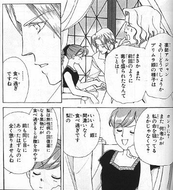
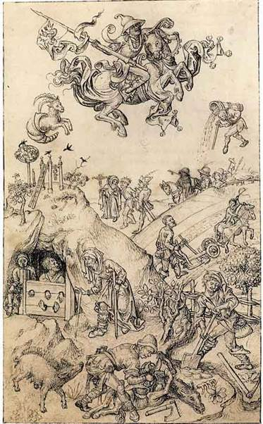

| 流れがわかる！メディカルハーブと医療の歴史: ケルト、ギリシャ、アラビアから現代まで | |
| 山崎 なつ子 | |
| WAKANKOUSOU (2014) | |
目次
一．まえがき
-----------------------------------------------
草多はもう一度、処置室を見渡した。天井まで作りつけてある壁には、ぎっしりと茶色い薬品ビンが並べてあった。さまざまな薬草の匂いがする。（...）
「これは全部、薬ですか」
草多は壁の棚を眺めた。並べられたビンにはひとつひとつに内容物を示すラベルが貼られている。
「ああ。みんな世界各国に伝わる薬じゃよ。どこの国の人も、それぞれに昔からの知識と経験で、薬とつき合ってきているんじゃよ。」
まはら三桃(著)『わからん生薬事始』講談社（2013）より
-----------------------------------------------
アロマテラピーやメディカル・ハーブが普及し、海外の色々なハーブが、身近なところで手に入るようになってきました。
しかし、ハーブ療法の歴史については、まとまった、かんたんな本が見当たりません。日本語の情報がないわけではなく、いろんなジャンルにバラバラにあるようです。関係のある分野からピックアップして、足りないところは英語の情報に当たり、歴史の流れがわかるようにまとめました。あくまで「流れがわかる！」ですので、もっと詳しく知りたい方は、参考文献に当たってみてください。
また、イメージを助けるために、マンガもいくつか引用しています。
参照した歴史は、だいたい次の通りです。メソポタミア医学、エジプト医学、ギリシャ医学、ギリシャ哲学、ギリシャ神話、薬学、毒薬、麻薬、香料、薫香、蒸留、錬金術、スパイス、本草学、植物学、精気論、宇宙観、天文学、占星術、医療占星術、身体観、清潔、疫病、病理学、絵画、瀉血、ヒル療法、呪術、外科、床屋、解剖学、料理、キッチン、庭園、民間療法、家庭の医学、薬局、修道院医学、アルコール、リキュール、香水、ケルト、キリスト教、十字軍、幻視、異端審問、魔術、魔女、中医学、中国思想、アーユル・ヴェーダ、インド哲学、ユナニ医学、翻訳、交易、宗教改革、活版印刷、薬理学、植民地、優生学、ナチズム、コカ・コーラ、ネオ・ペイガニズム運動、和漢、東医学、伝統医療（順不同）
二．参考文献リスト
・梶田昭(著)『医学の歴史 (講談社学術文庫)』講談社 (2003)
・ルチャーノ・ステルペローネ (著)、福田眞人(監修)、小川熙(翻訳)『医学の歴史』 原書房 (2009)
・酒井シヅ(著)『医学史への誘い―医療の原点から現代まで』 診療新社 (2000)
・酒井シヅ(著)『ライフ・サイエンス・ブック 薬と人間』スズケン (1982)
・二宮陸雄(著)『新編・医学史探訪―医学を変えた巨人たち』医歯薬出版 (2006)
・茨木保(著)『まんが医学の歴史』医学書院 (2008)
・R.コールダー(著)、佐久間昭(訳)『物語人間の医学史』平凡社 (1996)
・ルネ・ファーブル、ジョルジュ・ディルマン(著)、奥田潤・奥田陸子(訳)『薬学の歴史』白水社(1994)
・湯之上隆・久木田直江(編)『くすりの小箱―薬と医療の文化史 』南山堂 (2011)
・植松黎(著)『自然は緑の薬箱―薬草のある暮らし』大修館書店 (2008)
・船山信次(著)『史上最強カラー図解 毒の科学 毒と人間のかかわり』ナツメ社 (2013)
・ジョージ・ウルダング(著)、清水藤太郎(訳)『薬学・薬局の社会活動史』南山堂 (1973年)
・マイケル・マッキンタイアー(著)、衣川湍水(訳)『ハーブ医学入門』フレグランスジャーナル社 (1991)
・永岡治(著)『クレオパトラも愛したハーブの物語―魅惑の香草と人間の5000年』PHP研究所 (1988)
・A.W.ハットフィールド(著)、山中雅也、山形悦子(訳)『ハーブのたのしみ』八坂書房(1993)
・奥田拓男(著)『資源・応用薬用植物学』廣川書店 (1991)
・ロバート・ハクスリー(著)、植松靖夫(訳)『西洋博物学者列伝―アリストテレスからダーウィンまで』悠書館 (2009)
・アンドリュー・シェヴァリエ(著)、難波恒雄(訳)『世界薬用植物百科事典』誠文堂新光社 (2000)
・ヨハン・ベックマン(著)、特許庁内技術史研究会(訳)『西洋事物起原 (2)』岩波書店 (1999)
・谷澤伸・柴田博・高橋和久・甚目孝三(著)『流れ図 世界史図録ヒストリカ』山川出版社(2013)
・ティム・クーク(著)、増田ユリヤ(監修)、池内恵(翻訳)『世界史図鑑 みんなが知らない歴史の秘密』主婦の友社 (2012)
・橋本浩『なぜ生まれた？どう進化した？早わかり科学史』日本実業界出版社(2004)
・池内了(著)『知識ゼロからの科学史入門』幻冬舎 (2012）
・大沢彌生『古代エジプトの秘薬―ピラミッドを考案した人たちが作りゾサー王やツタンカーメンも使った薬』産学社（2002）
・吉村作治(著)『古代エジプトを知る事典』東京堂出版 (2005)
・ヒポクラテス(著)、常石敬一(訳)『ヒポクラテスの西洋医学序説』小学館 (1996)
・大槻真一郎(編集)『プリニウス博物誌 植物薬剤篇』八坂書房(2009)
・アンドリュー・ドルビー、サリー・グレインジャー(著)、今川香代子(訳)『古代ギリシア・ローマの料理とレシピ』丸善 (2002)
・小高修司(著)『三千年の知恵 中国医学のひみつ―なぜ効き、治るのか』講談社 (1991)
・上馬場和夫・西川眞知子(著)『アーユルヴェーダ入門―インド伝統医学で健康に!脈診・ヨーガ・マッサージ・食事などで病気と老化をふせぐ』地球丸 (2006)
・クリシュナ・ウパディヤヤ・カリンジェ・加藤幸雄(著)『アーユルヴェーダで治すアトピー―家庭でできるやさしい治療法』出帆新社(2002)
・ヴォルフ=ディーター・シュトルル(著)、手塚千史・高橋紀子(訳)『ケルトの植物』ヴィーゼ(2012)
・前嶋 信次(著)『アラビアの医術)』平凡社 (1996)
・サイード・パリッシュ・サーバッジュー(著)『ユーナニ医学入門―イブン・シーナーの『医学規範』への誘い』ベースボールマガジン社 (1997)
・ダニエル・ジャカール(著)、吉村作治(監修)、遠藤ゆかり(訳)『アラビア科学の歴史』創元社 (2006)
・ヒロ・ヒライ「蒸留術とイスラム錬金術」（雑誌「アロマトピア」48号収録）フレグランスジャーナル社（2001）
・佐藤正彰(著)『千一夜物語 ４』筑摩書房（1988、底本1964〜1970）
・シャンタ ゴーダガマヤ (著)、上馬場和夫、西川眞知子、日高陵好 (翻訳)『アーユルヴェーダ・ハンドブック』日経BP社 (1998）
・草野巧(著)『図解 錬金術』新紀元社 (2006)
・吉村 正和『図説 錬金術』（2012）河出書房新社
・矢野道雄(著)『星占いの文化交流史』勁草書房 (2004)
・中山茂(著)『西洋占星術―科学と魔術のあいだ』講談社 (1992)
・吉見昭徳(著)『古英語詩を読む―ルーン詩からベーオウルフへ』春風社 (2008)
・ハイデローレ・クルーゲ(著)、豊泉真知子(監修)、畑澤裕子(訳)『ヒルデガルトのハーブ療法―修道院の薬草90種と症状別アドバイス』フレグランスジャーナル社 (2010)
・福西英三(著)『リキュールの世界』河出書房新社 (2000)
・ジョン・D・クレア（構成）、アンドレア・ホプキンス（監修）リリーフシステムズ (訳)『暗黒の中世―ヨーロッパの都市生活』同朋舎出版 (1994）
・黒川正剛(著)『図説 魔女狩り』河出書房新社 (2011)
・塩野七生『ルネサンスとはなんであったのか』新潮社 （2001）
・菊地原洋平(著)、ヒロ・ヒライ(編)『パラケルススと魔術的ルネサンス』勁草書房 (2013)
・熊井明子(著)『シェイクスピアのハーブ』誠文堂新光社(1996)
・ベンジャミン・ウリー(著)、高儀進(訳)『本草家カルペパー―ハーブを広めた先駆者の闘い』白水社 (2006)
・川島昭夫(著)『植物と市民の文化』山川出版社 (1999)
・服部伸(著)『近代医学の光と影』山川出版社(2004)
・岡崎康一(著)『近世イギリスのやぶ医者の社会史』象山社 (1995)
・鏡リュウジ(著)『魔女術―都市魔術の誕生』 柏書房 (1994)
・エリザベス・バケダーノ(著)、山成洋(日本語版監修)『インディオの世界』同胞舎出版 (1994)
・トム・スタンデージ(著)、新井崇嗣(訳)『世界を変えた6つの飲み物 -ビール、ワイン、蒸留酒、コーヒー、紅茶、コーラが語るもうひとつの歴史』インターシフト (2007)
・マーク・ペンダグラスト(著)、古賀林幸(訳)『コカ・コーラ帝国の興亡―100年の商魂と生き残り戦略』徳間書店 (1993)
・ロバート・N.プロクター(著)、宮崎尊(訳)『健康帝国ナチス』草思社 (2003)
・「文化広報誌：SPAZIO no.66−人体をめぐる断章 その13 『体液の脅威』」
http://www.nttdata-getronics.co.jp/profile/spazio/spazio66/koike/
・「文化広報誌：SPAZIO no.69−身体をめぐる断章 その15 血液の神秘」
http://www.nttdata-getronics.co.jp/profile/spazio/spazio69/koike/
・上馬場和夫「アーユルヴェーダのハーブ医学（ドラヴィヤグナ）」
http://npo-ayurveda.com/about_ayurveda/ayurveda%20herbs1.pdf
・ガレノス研究のラウンジ
http://www.geocities.jp/bhermes001/galenos.html
・Ragab Hani Donkol and Ahmed Al Nammi「Hyperthermia Tissue Ablation in Radiology」
http://www.intechopen.com/books/hyperthermia/hyperthermia-tissue-ablation-in-radiology
・Muslim Heritage「Botany, Herbals and Healing In Islamic Science and Medicine」
http://muslimheritage.com/article/botany-herbals-and-healing-islamic-science-and-medicine・阿部泰宜「蛭・ヒル・ひる編：愉「貝」な仲間たち！」
http://oo.spokon.net/yasu/kai/hiru.htm
・遠山茂樹「読書書案内 マーガレット・Ｂ・フリーマン著『西洋中世ハーブ事典』」
http://repo.lib.yamagata-u.ac.jp/bitstream/123456789/5876/1/tucss-16-10.pdf
・久木田直江「中世ヨーロッパの食養生 静岡大学英文学会会報2009.02」
http://www.hss.shizuoka.ac.jp/genngo/eibun/el_gakkai/04/index.html
・桑木野幸司「甦ったエデン神苑 :初期近代イタリアの植物園に関する考祭」大阪大学
http://hdl.handle.net/11094/25101
・Tel Asiado「Biography of Nicholas Culpeper」
http://www.ediblewildfood.com/bios/nicholas-culpeper.aspx
・bibliotheca hermetica
http://www.geocities.jp/bhermes001/bh.html
・「植物療法と予防医学−古代からゲーテへ−」大浜宏文
https://www.jstage.jst.go.jp/article/morpho1979/1999/21/1999_21_80/_pdf
・Anglo-Saxon metrical charms
http://en.wikipedia.org/wiki/Anglo-Saxon_metrical_charms
・Old Operating Theatre Museum
http://www.thegarret.org.uk/index.htm
・東西の古医書に見られる病と治療 --九州大学附属図書館の貴重書コレクションよりhttps://www.lib.kyushu-u.ac.jp/hp_db_f/igaku/exhibitions/2007/exhib1.htm
・「ヨーロッパの衛生的生活」京都産業大学文化学部 国際文化学科 中野洋子
http://www.cc.kyoto-su.ac.jp/~konokatu/nakano(05-1-31)
・国立国会図書館ＨＰ「インキュナブラとは何か」より
http://www.ndl.go.jp/incunabula/chapter1/index.html
・Scrapbookpages.com
http://www.scrapbookpages.com/index.html
・「まぼろしチャンネル少女マンガ付録の花園１４」
http://www.maboroshi-ch.com/old/cha/katou.htm
三．古代西洋
医療や薬の始まりについて、わかっていることはあまりありません。病気は、人類のはじめからあったでしょうし、仲間を助けたいという気持ちは、ことばができる前から存在していたことでしょう。太古の人々は、病気は超自然的な力によるもので、神の罰や、悪魔、悪霊の仕業、だれかの悪意のせいだと信じていました。病気の治療として、聖職者や呪術師が、祈祷や呪文を唱え、悪魔祓いを行いました。
そのうち、経験で蓄積されていった、ハーブや毒薬、怪我の治療の技術が活用されるようになりました。初期の薬は、ハーブそのもの、ハーブからつくられたものがほとんどだったと思われます。ハーブの効果は、投与する人の超自然的な力によるものだと考えられていたようで、聖職者や呪術者が、儀式や呪文と合わせて治療を行っていました。たとえば、アングロ・サクソン民族の古い文献には、ハーブ薬の処方とチャーム（呪文）が書かれていて、薬を作る前と使う時に、チャームを唱えるように指示しています。
１．西洋における医療伝播の流れ
ハーブ・スパイスの利用の最古の記録は、メソポタミア文明のものです。この知識は、おおざっぱにいうと、「メソポタミア→エジプト→ギリシャ（ヘレニズム）→ローマ」という風に伝播しました。
ギリシャで発達したハーブと医学の知識は、ローマでまとめられました。１世紀にディオスコリデスが本草書『薬物誌』を著し、２世紀にガレノスがギリシャ医学をまとめました（ガレノス医学）。
４世紀末以降、キリスト教徒による、キリスト教異端・異教徒への激しい迫害がおこりました。ヘレニズム文化を担う学者たちは中東に亡命し、ギリシャ医学はアラビア世界に伝わり、ヨーロッパからは失われていきました（６世紀）。
中世ヨーロッパでは、キリスト教（カトリック）のもとで医学も薬草学も発展せず、修道院でディオスコリデス『薬物誌』をもとにハーブ療法が行われました。『薬物誌』が書かれてから、この本が最高の本草書という状況が1500年近く続きました。
一方アラビア世界では、ギリシャ、インド、中国など世界中の文献が集められて翻訳され、科学（錬金術）や医学、天文学（占星術）が発達しました。医者で哲学者のイブン・シーナーが、ガレノス医学（ギリシャ医学）をベースに、ギリシャ・アラビア医学（ユナニ医学）をまとめました。アラビア語の医学の文献はラテン語に翻訳され、ヨーロッパにもたらされました。イブン・シーナーの『医学典範』は、サレルノやモンペリエの大学で、１７世紀ごろまで医学の教科書として使われていました。
２．古代メソポタミア
人類がハーブやスパイスを利用していた最古の記録は、現在のイラクあたり、チグリス・ユーフラテス川のほとりで栄えたメソポタミア文明の粘土板です。この地では、紀元前9000年頃から農耕が始まっており、紀元前3500年頃までに高度な都市文明が生まれていました。
チグリス・ユーフラテス川流域は、雪どけによる増水を活かして農業が行われ、その実りは豊かなものでした。楔形文字で粘土板に記録がとられた他、天文学が発達し、太陰暦・七曜制・６０進法も発明されました。また、エジプト文明、インダス文明とも交易をおこない、多くの影響を与えたといわれています。
メソポタミアでは、医療は天文と結びついて、大宇宙(自然)と小宇宙(人の体)には関係があると考えました。人間の身体を流れる血液を川に、体の熱を太陽に、呼吸を風にたとえました。治療には、季節の巡りを知る手がかりになる星々の動き、つまり占星術が重視されたのです。
病気の原因は主に、血液の流れが妨げられることだと考え、それを引き起こすのは悪魔だと信じていました。
３．アッシリアで発見された最古の本草書
アッシリアの時代、治療は神官が行い、悪霊を追い払う薬草を、月の光の下で集めました。当時は月の神シーンを医薬の神として崇めていたからです。
紀元前2100年ごろのレリーフ。月の神シーンが三日月で表現されている。
-----------------------------------------------
世界最古の本草書は、アッシリア帝国（紀元前2500年ごろ）の首都だったニネヴェの寺院遺跡で発見されました。４万枚におよぶ粘土板には、1,000種類もの植物の名前が記録されていました。粘土板には、カルダモン、クミン、ターメリックなどのスパイス、マルベリー（桑）、サフランなどのハーブ、ミルラ（没薬）、セサミ（胡麻）、アーモンドなどの名が記されていました。こういったシュメール語の植物名は、ギリシャ語やアラビア語を通して、現代の私たちにまで伝わっています。傷薬・絵の具の溶剤、香料として知られるテレピン油（テレピンノキの樹油）は、メソポタミアでも傷薬として使われていました。そして中国に伝わって薫陸（くんろく）、篤褥香とよばれ、香料として日本にも伝わっています。また、１６世紀ヨーロッパで、銃による傷の治療を改革したフランスの外科医アンブロワーズ・パレは、新しい治療にテレピン油を使ったといわれています。
また、世界最古の物語『ギルガメシュ叙事詩』では、唯一の友エンキドゥを亡くしたギルガメシュ王が、死を恐れ、永遠の命をもたらす薬草を探すエピソードがあります。この薬草は、ようやく手に入れたギルガメシュが目を離した隙に、蛇が食べてしまいました。それ以来、蛇は脱皮し若さを保つようになったといわれています。
ハンムラビ法典には、医師が受け取る謝礼金など細かく決まっていましたが、医療ミスで患者を死なせてしまった場合、医師の両手を切り落とすとしていたので、医療はあまり発展しませんでした。
４．古代エジプト
エジプトでは、紀元前3000年頃から文明がおこりました。ナイル川流域に強い王朝ができ、王は神の子として崇められました。ナイル川氾濫の時期を知るために天文学が発達し、太陽暦が使われました。また、氾濫後に農地を元通り配分するため、測量と幾何学が発達しました。ヒエログリフ（神聖文字）などの文字を使って、パピルスで作られた紙に多くの記録がとられ、現在に伝えられています。
古代エジプトでは様々な香料が愛用され、宗教儀式やおしゃれとしても、フランキンセンス（乳香）などの香料植物が利用されました。また、ミイラを作るさいには、ミルラ（没薬）など防腐作用のあるスパイスが用いられました。
５．古代エジプトの医学
ホメロスが『オデュッセイア』で「エジプトの人々は、あらゆる人間の中で最も医学にすぐれている」と述べたように、古代エジプトでは医学が発達しました。メソポタミア医学の影響を受けていたようで、健康の根本は血液と霊気だと考えて、どちらかに異常が起こると病気になると考えました。
エジプト人は、ミイラ作りを通して人体の構造をよく理解しており、高度な外科治療が行われました。また、病気の治療のために様々なハーブが使われていました。エジプトでは地元のハーブだけでなく、中国やクレタ、アラビアなど、他の国の植物も盛んに利用され、ハーブ療法が発展しました。ギリシャ・ローマで知られるハーブの大部分は、エジプト薬学に由来するものです。また、当時のエジプト人は、衛生にとても気を配っていたことでも知られています。
エジプトの神殿の碑文にえがかれた医療器具
-----------------------------------------------
エジプトの医者にはそれぞれ専門があり、一般医、眼科医、消化器、肛門、原因不明の病気、歯科医、医学検査官、職業病、焼灼法の専門家に分かれ、監督官が置かれて組織化されていました。紀元前3000年頃には、ハーブ療法を行う内科医や外科、助産科などさまざまな医学学校があり、「生命の家」(ペル・アンク)とよばれる医療施設も作られました。
また、紀元前2700年頃には、最古の女性内科医メリト・プタハの記録が残っています。彼女は「内科医の長」とよばれており、女性の医者が活躍していたことがうかがえます。
エジプトの医師は国に雇われていて、治療は完全に無料でした。治療の時には、患者の状態を細かく調べて記録し、体温、脈を図り、打診を行い、排泄物を観察しました。診察の最後には「治すことが出る病気」「（医師が）努力しなければならない病気」「治すことができない病気」のどれかを選んで、紙面で患者に告知しました。
６．植物療法と呪術の書『エーベルス・パピルス』
-----------------------------------------------
医学書『エーベルス・パピルス』より、治療法２種
・頭の痛みをとる
乳香、クミン、ジュニパーの実、ガチョウの脂肪を煮て、痛む頭に付ける。
・便秘の治療に
植物粘液、セイヨウニンジンボク、タマリンド、カヤツリグサ、ジュニパーの実、乳香、下エジプトの塩をよく煮詰め、そこに蜂蜜を加える。火から下して、人肌くらいになったら一日に飲む。
大沢彌生『古代エジプトの秘薬』産学社（2002）より
-----------------------------------------------
古代エジプトの医学書は７編が今に伝わっていますが、ハーブ療法などの内科の資料としては、『エーベルス・パピルス』（Ebers Papyrus）とよばれる医学書が残されています。１９世紀の終わりごろに、ドイツの研究者ゲオルグ・エーベルスと、イギリス人のエドウィン・スミスが発見した２本の医学書のひとつです。８７７章からなり、第１８王朝、紀元前１５世紀ごろのものですが、これは紀元前3400年頃の文章をベースに、何世紀にもわたって書きつがれたものです。
薬学、婦人科学、衛生学など、内科の病気と治療法について書かれています。当時の医療は宗教と分離していなかったので、病気の原因とされた悪魔払いの呪文なども記録されています。しかし、実践的、経験的な治療も多く収録されていて、アロエ、キャラウェイ・シード、ヒマシ油などを使った、７００種類ほどのハーブ薬の調合法が記されています。
７．医薬の神イムホテップ
イムホテップは、紀元前2600年頃のファラオ・ジェセル王に仕える宰相でした。彼は技術にすぐれ、建築家、僧侶、天文学者であり、医術にもくわしかったようです。ハーブ医学にかんする著書でも知られていますが、これは現代では失われてしまっています。
イムホテップは、エジプト人の尊敬をあつめ、死後医薬の神になりました。エジプトでは、人間が神として崇められることはほとんどなく、とても珍しいケースです。
イムホテップは、ギリシャに伝わって医神アスクレピオスと同一視されました。このことからも、エジプトとギリシャの間に文化の交流があったことがわかります。
四．アジア
アジアには、中国とインドという２つの大きな文明があり、周辺の国々はその影響を受けながら、独自の医療を発展させました。
インドの医学は、古代ギリシャやペルシャの医学、チベット医学、またチベット仏教が伝わったモンゴルの医学などに影響をあたえました。また、仏教医学として日本にも伝わっています。
東アジア、東南アジアの国々は、中国医学を取り入れながら独自の工夫を行い、日本の「漢方」、韓国の「東医学（韓方）」などが発展しました。
８．古代中国
古代中国では、黄河や長江、遼河流域でさまざまな文明がおこりました。紀元前7000年頃から農業が行われており、黄河流域では粟などの畑作が、長江流域では稲作がおこなわれていました。紀元前2000年頃には、中国最古の王朝・夏王朝が存在したともいわれ、青銅器が作られていました。殷王朝の遺跡からは、漢字のもとである甲骨文字が刻まれた亀の甲羅が発見されています。
世界の文明の中で、唯一中国文明だけは、ほぼ同じ地域で同じ文明を現在まで維持してきました。王朝の交代は何度もありましたが、前の文化が焼き捨てられるようなことはなかったのです。そのため、中国医学の知恵は、失われることなく現代まで受け継がれました。
伝説では、夏王朝より前の時代に、神農、黄帝などの帝王がおり、神農が中国本草学を、黄帝が中国医学の理論を作ったといわれています。
また、中国の医学は、東アジアに大きな影響を与え、日本では「漢方」（和法）、朝鮮半島では「東医学」（韓方）として発達しました。
９．中国最古の本草書『神農本草経』
中国の医学では、『黄帝内経（こうていだいけい）』、『神農本草経（しんのうほんぞうきょう）』、『傷寒雑病論（しょうかんざつびょうろん）』の３冊を、三大古医学書として重視しています。
医学理論と鍼灸が中心の『黄帝内経』は、神話上の帝王・黄帝が書いたといわれています。生薬を使った治療や食養生、全身療法、鍼灸、精神療法などが説明されています。外科治療についてはほとんど述べられておらず、外科に対する興味がうすいことが、中医学の特徴のひとつになっています。
気や血の通り道と考えられた「経絡」を示す図
-----------------------------------------------
『傷寒雑病論』は、「医聖」とたたえられる張仲景（150年?〜219年）によって書かれた本で、伝染性の病気の治療法が中心となっています。
生薬（しょうやく）について書かれた中国最古の本草書『神農本草経』は、女媧（じょか）、伏羲（ふっき）と共に三皇のひとりである神話上の帝王・神農によって書かれたとされています。神農は、頭は牛、身体は人間の神でした。彼はたくさんの生薬を食べて、その効能や毒の有無を確かめたそうです。その体は透明だったので、毒の影響が外からよくわかったといわれています。そして神農は、あまりにたくさんの生薬を検証したため、体に毒がたまりとうとう亡くなってしまいました。この伝説は、多くの医者が自分の体で生薬の効能を確かめたことを、現在に伝えているのでしょう。
『神農本草経』のほんとうの著者はわかりませんが、後漢時代（22〜250）頃に書かれたもので、古代から伝わる中国の薬草医学をまとめたものだと考えられています。中国医学の重要なテキストですが、残念ながら現在では失われてしまいました。ですが、六朝時代の医者・陶弘景（452〜536）が、500年頃に書いた『本草経集注』に引用したため内容が伝わり、それをもとに近世になってから復元本や注釈書がまとめられました。
生薬には、薬効のある植物だけでなく、動物や鉱物もふくまれます。植物性の生薬は、甘草（リコリス）、桂枝(シナモン)など、ヨーロッパのハーブ・スパイスと共通するものがあり、東西で同じ効能が知られているものも多くあります。
『神農本草経』には、365種の生薬などが、上薬・中薬・下薬に分類され記されています。上薬は無毒で長い間服用しても大丈夫なもの、中薬は毒にもなりえるもの、下薬は毒性が強く長期間の服用ができないものをさします。
また、本当の医者は、病気になる前に治すのもので、病気になってから治療する医者は、いい医者ではないとされていました。そのため、古代中国の国・周の医者で一番身分が高いのは、食事を指導する「食医」でした。
１０．陰陽五行説と病
中国では、自然界のすべてを「陰」と「陽」という、相反する要素にわけて考え、対立しながらお互いに依存しているとする「陰陽説」と、自然界は「木、火、土、金（ごん）、水」の５つの要素からなり、互いに生かし（相生）、また互いに制約し合う（相克）する関係があるとする「五行説」があり、このふたつが合わさった「陰陽五行説」が、医学や哲学のベースになっています。
たとえば「木克土」とは、木（肝の気）がとどこおることによって、土（脾臓の働き）が抑圧されること。具体的には、精神的ストレスが重なることで、胃が痛くなるといった事象を指す。
-----------------------------------------------
中医学では、人体にも自然と同じように陰陽があり、バランスがとれていれば健康で、調和が崩れると未病になり、バランスを戻せなくなると病気であると考えました。臓腑では、肺、心、脾、肝、腎の「五臓」（ごぞう）が陰で、胃、小腸、大腸、胆、膀胱（ぼうこう）、三焦（さんしょう）の「六腑」（ろっぷ）が陽だと考えられています。三焦は解剖学的に当てはまる臓器がなく、働きだけがあって実体はありません。水（津液）を全身に運ぶ通り道で、リンパ管に当たると解釈されています。五臓と六腑、この陰陽のどちらかが弱ってしまうと、バランスが崩れた状態になります。
古代の医学書『傷寒雑病論』では、病気を陰陽と陰にわけ、それを更に３つに分類しています。
病気の原因は、「外因、内因、その他」の３つに大きく分けられますが、「外因」は気候条件や環境をさし、「風・寒・湿・暑・火・燥」の「六気」とよばれます。「内因」は「喜・怒・憂・思・悲・恐・驚」の「七情」で、六気も七情も自然なもので、ふつうなら病気の原因にはなりません。ストレスの度合いがあまりに強かったり、期間が長かったり、もともと体が弱っていたりすると、自己修復能力の限界を超えてしまい、異常があらわれるのです。感情の種類や異常があらわれる臓器は、五行が適応されて判断されました。
また、中医学では「気、血、水（津液）」が人体を構成しており、生命の基礎だと考えました。「気」はエネルギーで、ギリシャ・ローマ医学のプネウマ（精気）、アーユル・ヴェーダのヴァータ（風、運動エネルギー）と似た概念です。「血」は、西洋医学の血液に近いですが、もっと意味が広く、陽の気にたいして陰に属します。見えない気にたいして、実体があるのが血だとも説明され、気は血を生成して循環させ、血は気の生成を助けて全身に行きわたらせます。
水（津液）は、摂取した食べ物の気から生じる体液の一種のようなもので、これも陰のものです。これらが不足すると「気虚」、「血虚」、「陰虚」という未病の状態になり、その欠乏状態に乗じて病邪が充実すると、病気になると考えました。
１１．東と西の植物療法の違い
東洋と西洋の植物療法で違なる点は、西洋は１種類のハーブを処方することも多く、特に決まった組み合わせというものはありませんが、東洋では、生薬の相互作用を重要視した「方剤」が利用されてきました。方剤とは、治療目的に合わせて、２種以上の生薬を混ぜてつくった漢方薬のことです。
古代中国では、複数の生薬を組み合わせると、それによって、特定の効能が強くなったり弱くなったりすることが知られていました。そのため、すぐれた生薬の組み合わせに、「葛根湯」「麻黄湯」といった名前を付け、その知恵を伝えることにしたのです。
たとえば、風邪薬として有名な葛根湯には、「葛根(クズの根)、麻黄(マオウの根)、桂枝(シナモンの樹皮)、芍薬（シャクヤクの根）、生姜（ショウガの根）、大棗(ナツメの実)、甘草(リコリスの根)」が入っています。これは、ベーシックな方剤である桂枝湯（桂枝、芍薬、生姜、大棗、甘草）に葛根、麻黄を加えたものです。
葛根湯に含まれる、風邪に効果があると思われる化学成分をピックアップして合成薬をつくっても、同じ効能があるわけではありません。漢方薬は、一見効能とは関係ないような多くの成分が、複雑にからみあって効果を発揮しています。
１２．古代インド
古代インドの文明では、インダス文明が代表的なものです。インダス文明は、紀元前2500年頃〜前1500年頃に繁栄した、南アジアの文明です。モヘンジョ＝ダロやハラッパーなどの都市遺跡が有名ですが、使われていたインダス文字はまだ解読されておらず、どんな文明だったのか、よくわかっていません。下水道、大浴場、穀物庫などを備えた、計画的に作られた都市が各地に建設され、青銅器や彩文土器、印章などが使われていました。印章には、ヨーガをする人物が描かれたものもあり、こういった修行をしていた人々が、呪術治療を行なったのではないかと推定されます。
インダス文明は、現在南インドを中心に暮らしているドラヴィダ人の文明だとされています。紀元前１３世紀に、南ロシアからアーリア人がインドにやってきました。アーリア人はこの地を征服し、インダス文明の主役だったドラヴィダ人を支配し、ヒンズー教を広めました。
紀元前３世紀に、マウリヤ朝のアショカ王が仏教に改宗し、ヒンズー教とともに仏教が発展しました。427年に建てられた世界最古の大学の１つ、ナーランダー大学（現在のビハール州）では、アーユル・ヴェーダを取り入れた仏教医学が研究されて、仏教といっしょに東洋の国々に伝わりました。
１３．アーユル・ヴェーダとは
アーユル・ヴェーダとは、インドに古くから伝わる医療で、現在まで続いている伝統医療では、最も古いともいわれています。
創成期から現在まで、アーユル・ヴェーダが礎にしてきたのは次のような考え方です。「生命には、それを維持するために必要な偉大な知恵が、初めから備わっている」、体の状態を調整し、健康を維持し、病気や怪我を治すのは「自然の知恵」だと考えました。ギリシャのヒポクラテスと、ほとんど同じ考え方だといっていいかもしれません。
アーユル・ヴェーダは、「アーユス」（生命、寿命）の「ヴェーダ」（科学、真理）、つまり「生命の科学」「寿命の科学」の意味で、伝説では神々から伝えられたといわれています。
起源は、アーリア人の宗教バラモン教（古代のヒンズー教）の宗教文書、ヴェーダ文献にあります。最初のヴェーダ文献『リグ・ヴェーダ』は、紀元前１５世紀に書かれたといわれ、他に３つの主なヴェーダ文献があります。これらのヴェーダから、生命に関する知識をまとめたウパヴェーダ（副ヴェーダ）が『アーユル・ヴェーダ』です。
一番古いアーユル・ヴェーダの文献は、紀元前８世紀ごろの『アグニヴェーシャ・サンヒター』で、インド二大古典医学書の一つである『チャラカ・サンヒター』（Charaka Samhita）は、『アグニヴェーシャ・サンヒター』をもとに１世紀ごろに編纂されたといわれています。この本は、主に内科の治療について書かれています。
もう一冊は『スシュルタ・サンヒター』（Sushruta Samhita）で、３〜４世紀に成立しました。こちらはクシャトリア（武士王族）と関係が深く、外科を重視した医学書です。
どちらも紀元前から続く医学をまとめたもので、『神農本草経』や『ヒポクラテス全集』と同じように、伝説の医師チャラカとスシュルタの名のもとに、多くの人間が関わって成立しました。チャラカやスシュルタは、ヒポクラテスと同じように、各地を治療して回る「遍歴医」だったといわれ、経験と観察を重視しました。彼らのような「遍歴医」の活躍で、呪術と切り離された経験医学が発達していきます。
アーユル・ヴェーダは、病気の診断やハーブ療法などの治療だけでなく、生活や行動、食事や養生法、ヨーガなどの調気法（全身の気の流れを調整するメソッド）まで含んでいて、ギリシャやペルシャの医学にも影響を与えたといわれています。
１４．トリ・ドーシャ説
古代インドでは、西洋の四大元素のように、「地・水・火・風・空（空間・アーカーシャ)」の五大元素が、宇宙を構成していると考えられていました。人間の健康を左右するドーシャは、五大のうち２つの組み合わせで、ピッタは「火・水」、カパは「水・地」、ヴァータは「風、空」からできています。
アーユル・ヴェーダでは、病気の原因は、悪いドーシャが増えることだという「トリ・ドーシャ説」がとなえられました。ドーシャとは、サンスクリット語で「不純なもの」「増えやすいもの」「体液」「病素」など、さまざま意味があり、物質（体液）であると同時に、霊的・精神的なもの（エネルギー）であるととらえられています。トリ・ドーシャ説は、ギリシャの「体液病理説」のもとになったという説もあり、ギリシャと同じように、バランスが崩れると病気になるとされています。
医学書『チャラカ・サンヒター』では、「ピッタ（胆汁、燃焼エネルギー）、カパ（粘液、結合エネルギー）、ヴァータ（風、運動エネルギー）」の３種類（トリ・ドーシャ）が唱えられました。医学書『スシュルタ・サンヒター』では、ギリシャ医学と同じように「血液」が加わって４つになっていますが、現在のアーユル・ヴェーダは、「トリ・ドーシャ説」がベースになっており「３つのドーシャによって身体のすべての生理機能が支配されている」と考えています。
ほとんどの人は、生まれつきドーシャがどれかに片寄っていて、その人の体格や体質、性格や思考、行動に影響します。トリ・ドーシャの乱れはトリ・グナ（３つの心の性質）に影響を与え、トリ・グナはトリ・ドーシャに影響する（心身相関）と考えられました。
トリ・ドーシャとトリ・グナ（気質）の関係
古代ギリシャでも、インドとよく似た体液病理説が唱えられ、体液の乱れと気質（性格、心の状態）に関係があるとされました。インドとギリシャの医学には似た理論も多く、同じ薬草も使われていたので、インド医学がペルシャ経由でギリシャに伝わったともいわれます。
１５．健康を左右するもの
ドーシャのバランスは、体質（プラクリティ）、1日おける時間帯・季節・年齢といった時間、行動・食事・運動などの日常生活、まわりの環境や天体などに影響されます。
食べ物や薬草は、その味自体がドーシャに影響し、それぞれ「熱性・温性・冷性」という性質（ヴィールヤ、薬力源）を持つと考えられました。また、食べ物は、トリ・グナ（３つの心の性質）に作用して、心の健康に影響をあたえます。
治療としては、増えすぎたドーシャや不要な要素を体の外に出す減弱療法（排出療法）があり、パンチャカルマ（経鼻法）、催吐法（嘔吐を誘発する薬を使う治療法）、瀉下法(下剤を使う治療法)、浣腸、発汗法、瀉血などが行われます。もう一つ、ドーシャ（体液）のバランスを、食事、薬、ヨーガや日常の行動を変えることで元に戻す、おだやかな緩和療法（鎮静療法）があります。
１６．アーユル・ヴェーダのハーブ療法
アーユル・ヴェーダでは、「食べ物やハーブを正しくとることで、健康にも病気にもなる」と考え、食事やハーブ療法を重視しています。
『チャラカ・サンヒター』では、「世の中のどんなものでも、それぞれの道理（Yukti)と目的（artha）を知っていれば、薬物にならないものはない」と言い、さまざまな薬草が治療に使われています。食べ物や薬草は、味自体がドーシャのバランスに影響し、それぞれ「熱性・温性・冷性」という性質（ヴィールヤ、薬力源）を持っています。また、トリ・グナ（３つの心の性質）へ作用して、心の健康に影響を与えると考えられました。
ギリシャの医学は、アラビアに伝わって発展しましたが、ここでアーユル・ヴェーダのハーブがたくさん取り入れられて、アラビアだけでなく、ヨーロッパでも活用されました。現代医学の薬も、アーユル・ヴェーダのハーブから発見されたものがあります。
鎮静作用をもつといわれ、よく使われてきた薬草「インド蛇木」（Rauwolfia serpentina L.)からは、２０世紀の初めに、世界ではじめての降圧薬「レセルピン」が抽出されました。ただこの薬は、単一の成分だからなのか、インド蛇木と違って、鬱状態をひきおこす副作用があることがわかったので、最近では使われていません。
また、ホーリーバジルの名でよばれ、最近ストレス適応ハーブとして西欧で注目されている「トゥラシー」（Ocimum santacum、和名カミメボウキ）は、神話にもよく登場する、多くの薬効を持つ伝統的なハーブです。ビシュヌ神に捧げられたハーブで、健康や家族の幸せを祈る朝の祈りに用いられます。古代の医学書『チャラカ・サンヒター』『スシュルタ・サンヒター』では、蛇やサソリの毒の治療に使用されており、現在では、インドの一般家庭で栽培されて、日常的に使われています。
トゥラシーには、サットヴァ（純粋性）という要素があり、トリ・グナ（３つの心の性質）を調和させると考えられています。このハーブはアラビアに伝わり、ユナニ医学では、熱性第３度のあたためるハーブとして活用されました。
五．ヨーロッパ
呪術と医療を切り離す「経験医学」は古代ギリシャで生まれ、ヒポクラテスがその代表として知られています。ギリシャの医学はローマに受け継がれ、さらにアラビアに受けつがれました、
また、ローマ帝国が領土を広げる前には、ヨーロッパ各地にさまざまな民族が暮らしており、独自の治療文化がありました。ケルトやアングロ・サクソン民族は、キリスト教を受け入れて、独自の宗教・文化の多くを失いましたが、ハーブの知識や呪術の一部は民間の知恵として利用されました。
１７．ローマ以前の古代ヨーロッパ大陸
古代ヨーロッパは深い森におおわれていて、古くからケルト系の人々が暮らしていました。ケルト人は、もともと、中央アジアからやってきた騎馬民族だといわれています。おそらく、紀元前１０世紀以上前、青銅器時代からヨーロッパに存在し、紀元前500年頃には、ヨーロッパの広い範囲にひろがり、ブリテン島（イギリス）にも移住したといわれています。
ケルトは深い森とともにある文化で、宗教指導者のドルイド（神官）は、森にこもって修行しました。ドルイドは政治でも重要な存在で、争いごとの調停も行いました。天文や暦について深い知識を持ち、儀式を行い、神々にいけにえを捧げて世界のバランスを保ちました。輪廻転生を信じていたため、ケルトの戦士は死をおそれず、非常に勇敢だったといわれています。
ケルト人は、大切なことは文字で書かないという考え方で、ドルイド（神官）の教えはすべて口承でした。体験をともなわない、文字だけの知識には、意味がないと考えていたのかもしれません。ドルイドの教えを身につけるには、２０年かかったそうです。
ケルト人は、記録が必要なときはギリシャ文字を借用し、独自のオガム文字も生み出しましたが、基本的に無文字文化でした。あまり記録を残さなかったので、ローマ以前のケルト人が、どんな医療を行い、どんなハーブを使っていたか、詳しいことはわかりません。
ケルトやガリアはローマ帝国との激しい戦いの末、征服され、キリスト教が布教されました。また、スラブ民族やゲルマン民族の侵攻もあり、ケルトの文化、ドルイドや戦士階級など、高貴な身分の人々の文化（big tradition）はほとんどなくなってしまいました。
ケルトの民衆はキリスト教に改宗していきましたが、その暮らしは相変わらずでした。
麦わら屋根の家に住み、それまでと同じものを食べ、同じ季節の巡りで農業を行い、大麦のビールを飲んで、その地方の守護神を信仰して、妖精たちに捧げものをしました。それまでと同じハーブを使い、呪文を唱えて病気を治しました。変わったことといえば、呪文にケルトの神々のかわりに、ふさわしいキリスト教の聖人と、聖母マリアが登場し、ケルトの神々は悪魔や妖精とされたことでしょう。ケルトの聖域には教会がたち、伝統的な暦にキリスト教の祝日がはめ込まれました。
ケルトの風習は、アイルランドやウェールズだけでなく、ヨーロッパ中西部の一部で、連綿と受けつがれました。民間伝承や習俗、民間療法、メルヘンや農民謎かけ、農事金言に、ケルトの伝統のなごりがみられます。
１８．癒しの薬鑵とハーブティー
ケルト神話では、「薬鑵（やかん）」「深皿」「釜」「鍋」といった食器は、儀式の道具であり神々の神聖な持ち物で、豊穣の象徴でした。女神ケリドウィンはインスピレーションとイニシエーションの薬鑵を持っていて、その中で沐浴した者は、賢い吟遊詩人やドルイドに生まれ変わったといいます。また、アイルランドの治癒神ディアンケヒトは、「薬草の湖」という薬鑵を持っていて、その中で薬草浴をすると、病人は癒され、傷は治り、死者でさえ息を吹き返したといいます。
ラ・テーヌ文化後期、紀元前１世紀頃のものといわれる「グンデストルップの大釜」（Gundestrup cauldron）。1891年に、デンマークのグンデストルップ村近くで発見された純銀製の大釜で、ケルト人が作ったといわれる。雄牛を生け贄にする光景や、髪を編み上げてもらっている女神、戦士たちが描かれている。
-----------------------------------------------
こういった神聖な薬鑵の伝説はキリスト教に取り入れられて、アーサー王伝説などの「聖杯伝説」が生まれたともいわれます。騎士たちが探し求める聖杯は、キリストが処刑される際に、その血を受け止めたという聖なる伝説の器ですが、ケルトの魔法の薬鑵の影響があるようです。
魔法の薬鑵やドルイドのハーブ療法が伝説になってしまっても、その名残はヨーロッパの民間療法に見られます。今でも、ハーブティーは、朝・正午・晩と１日３回飲み、カップ１杯は、親指側の３本でつかめる量のハーブを使います。そして根や樹皮などを使う時は、熱湯で３回煮だします。３はケルトにとって魔法の数字でした。
ハーブを使った薬草浴も、ケルト文化の名残だといわれています。５月にハーブ浴をすると若返りの効果があるとされていて、花、カノコソウの根、ハクサンチドリ、ワレモコウ、タイム、クルマバソウ、ロベッジなど、かつて愛の女神に捧げられたハーブが入浴に使われました。
中世ヨーロッパには、大衆浴場もありましたが、黒死病が大流行してから、入浴すると病気にかかりやすくなる、体が弱くなるとされて、すたれてしまいました。１８世紀には、冷水浴がからだをひきしめて血行をよくし、精神を強くするとされて、入浴の習慣が復活しました。１９世紀になると、水療法の神父セバスチャン・クナイプ（Sebastian Kneipp、1821〜1897）と、ハーブ療法で知られる神父ヨハン・キュンツレ（Johannes Kuenzle、1857〜1945）によって、ハーブ浴はふたたび広がりました。クナイプ神父は、アルプスヘイの花やカラスムギの藁、胡桃の葉、カモミールやヤロウの花、スギナなどを使ったハーブ浴を、症状に合わせて行いました。
１９．ハーブと星々の光
ハーブティーや入浴に使うハーブは大量に必要ですが、いつ収穫してもいいわけではありません。ローマの記録にもありますが、ケルトにはすぐれた暦があり、その暦にしたがって、ハーブの薬効が一番充実している期間に収穫していたといいます。ケルトのハーブと暦(季節、天の星)のつながりは、医療占星術を重視する西洋伝統医療の中に受けつがれました。占星術は医学の一部であり、ヨーロッパの大学の医学部で教えられていました。近世のハーバリスト、ニコラス・カルペパー（1616〜1654）は、占星術を使ったハーブ療法家として、現在でも広く知られています。
また、錬金術師・医者であったテオフラストゥス・フォン・ホーエンハイム（Theophrastus von Hohenheim、1493/1494〜1541）、通称パラケルスス（Paracelsus）は、ガレノス医学を否定し、薬学に化学を導入した人として知られていますが、民間の知識もその医術に取り入れていました。古代ケルトやゲルマン文化が色濃く残る南ドイツの生まれであり、ヨーロッパ中を遍歴して、さまざまな民間療法、ハーブ療法を学んだようです。パラケルススは、治療にハーブを活用しており、植物についておもしろい考えをもっていました。
彼は、植物を「地上の星」とみなしており、地面に生えているときは、星々と呼応していると考えました。パラケルスス派にとってハーブ療法とは、星々の影響をうけて育った植物の力が、効能となって現れ、天（大宇宙）の光が人間の身体（小宇宙）を内側から照らして、物質的にだけでなく、霊的にも癒すということでした。パラケルススにとって人間とは、物質的身体（元素的身体）と、霊的身体（星辰的身体）からなるものでしたが、これはアーユル・ヴェーダや中医学と、とてもよく似た考え方です。
パラケルスス派の医師オズワルド・クロル（1560〜1609）は、あらゆるハーブは「天空へと伸びゆく地上の星」（Stella Terrena vergens Coelum versus）であり、逆に夜空の星々は、天上のハーブに他ならないと考えました。
このように、ケルト文化は一見失われように見えますが、その一部は民間に受け継がれて、いろいろな思想、医療に影響を与え続けました。
２０．古代ギリシャの医療
紀元前８世紀頃までに、地中海の現在のギリシャにあるアテネ・スパルタなどに、ポリス（都市国家群）が形成されました。地中海世界全体に多くの植民都市が作られ、マケドニア王国が優勢になる紀元前４世紀世紀まで栄えました。
哲学や科学、医学、天文学、博物学、美術、文芸など、高度な文化が花開き、東西の文明に大きな影響を与えました。
呪術や宗教から自由になって「自然」を観察する「経験科学」は、紀元前６世紀ごろのギリシャで芽生えました。こうしたものの見方は、病気を呪いや神の罰から切り離して考える「経験医学」につながっていきました。
「医学の父」といわれるヒポクラテスは、初めて医学を迷信や呪術から切り離し、臨床と観察を重視する経験科学へと発展させました。自然治癒を重視し、体液のバランスが崩れると病気になるという体液病理説を唱えました。
２１．アレクサンドロス大王とヘレニズム
マケドニアのアレクサンドロス大王は、紀元前335から同323年のわずかな期間で、ギリシャ、エジプトからインダス川にいたる大帝国を建設しました。
この東方遠征で、ギリシャの文化は広く普及し、オリエント各地の文化とまざりあって「ヘレニズム」とよばれました。東西の交流が盛んになり、各地のハーブやスパイスがやり取りされました。
また、アレクサンドロス大王は、エジプトに新しい港町・アレクサンドリアを建設しました。この都市は、ヘレニズム時代の商業（地中海貿易）と文化の中心地として栄え、世界中の書物を集めたアレクサンドリア図書館が作られました。パピルス製の蔵書は７０万巻におよび、世界中から学者が集まり、各地のハーブを集めた薬草園が併設されていました。
アレクサンドリアでは、ギリシャ文化がエジプトの占星術や錬金術、ユダヤ教、キリスト教とまじりあい、医学や数学、化学が発達しました。解剖学が公認の学問になり、人体解剖も行われました。
２２．ローマの医療
一方、ギリシャを征服したローマ帝国では、アレクサンドリアなどの一部の地域をのぞいて、医学はあまり発達しませんでした。ローマ人は迷信深く、医学に関心を持たなかったのです。「征服されたギリシャが野蛮な征服者をとりこにした」ということばの通り、ローマの医学はギリシャの医学を引き継ぐものでした。カエサルはギリシャ人医師にローマの市民権を与えて優遇し、多くのギリシャ人医師がローマで活躍しました。
物や人が集まるローマ帝国では、知的関心は、新たに何かを作ることより、伝承や知識をまとめる方向に向かいました。博物学者のプリニウスは、さまざまな書物や伝承をまとめて『博物誌』を編纂し、ディオスコリデスは薬草の知識をまとめて『薬物誌』を書きました。そして医師であったガレノスは、ヒポクラテスの医学をベースに、古代ギリシャの医学をまとめました。
イブン・シーナー『医学典範』より、ガレノス、イブン・シーナー（アヴィセンナ）、ヒポクラテス
-----------------------------------------------
また、ローマ帝国は、ガリア人（ケルト人の一派）など多くの民族を征服したため、さまざまな地域のハーブがローマ帝国内に広がりました。『博物誌』には、次のような文章があります。
-----------------------------------------------
その花はウィボネスと呼ばれ、雷が聞こえる前に摘み取って食べると、まる一年間アンギナ（口内の上側や扁桃腺に起こる急性の炎症）にかかる心配はない。これらのことは、その地方にわが軍の陣営があった当時、信頼できるフリシイ族（ゲルマニア北部にいた種族）がローマ人に教えてくれたのである。
大槻真一郎(編集)『プリニウス博物誌 植物薬剤篇』八坂書房(2009)より
-----------------------------------------------
このように、征服された人々のハーブとその知識が、ローマの医学に取り入れられていきました。
また、ローマでは医学はあまり進歩しませんでしたが、上下水道や浴場がつくられて、衛生が大切にされました。
各地に遠征をつづけたので、駐屯地には軍の病院がつくられました。また、キリスト教徒による病人や孤児のための施設が初めて作られたのも、この時代でした。
２３．医神アスクレピオス
古代ギリシャには、エジプトの医神イムホテップが伝わり、アスクレピオスと同一視されました。医神アスクレピオスとは、どんな神様だったのでしょうか？
アスクレピオスは、太陽神であり医学、音楽の神でもあるアポロンと人間の娘コロニスの子として生まれました。コロニスはアポロンの子を身ごもったまま亡くなり、アポロンは我が子を救い出し、賢者ケイロンに託しました。ケイロンは、ケンタウロス（半人半馬）の神で、医学の祖といわれています。
アスクレピオス。蛇が巻きついた杖は、医療・医術・薬学のシンボルマークとして世界中で使われている。
-----------------------------------------------
ケイロンに育てられたアスクレピオスは、医学の才能を伸ばし、その腕は死者をよみがえらせるほどでした。死の国の王ハデスは、死者の復活を「世界の秩序を乱す」として最高神ゼウスに抗議し、ゼウスはこれを聞き入れて、雷でアスクレピオスを撃ち殺してしまいました。彼は死後、天に上げられて蛇つかい座となり、神になったといわれます。この伝説には、医療は自然の成り行きに逆らうべきではない、という教訓が、さりげなく表現されています。
アスクレピオスの神殿は、病院であると同時に医学の教育の場でもありました。古代ギリシャの医師ヒポクラテスやローマの医師ガレノスも、アスクレピオスの神殿で医学を学んでいます。
また、アスクレピオスの子どもたちは、みな医学に縁が深く、トロイア戦争で活躍した名医マカーオーンとポダレイリオスの兄弟や、衛生と健康の女神ヒュギエイア、治癒の女神パナケイアがいます。
初期のギリシャでは、アスクレピアダイとよばれるアスクレピオス神殿の神官たちが、主に治療を行っていました。神殿で癒された患者は、感謝の言葉を碑文にし、癒された器官を型にとった供物を捧げました。それは、あとに続く患者たちをなにより勇気づけ、自然治癒力を高めたことでしょう。
信仰治療では、信仰心だけでなく、「気持ち」や「気分」、「雰囲気」、「演出」、「過程」といった面が、とても大きな位置を占めていますが、これは、西洋近代医学で最も弱い部分ではないかと思います。一部の現代医療では、気持ちの問題が再評価されていて、たとえばカール・サイモントン（1942〜2009）の「サイモントン療法」では、がんの治療にイメージ療法が活用されています。
２４．「医学の父」ヒポクラテス
-----------------------------------------------
人の命は短く、医学は永遠だ。好機はつかのまで、実験は裏目に出ることが多く、判断は難しい。医者はその本務をつくすだけでなく、患者、看護人、それに環境を味方につけることが必要だ。
ヒポクラテス全集より「警句集」
常石敬一(訳)『ヒポクラテスの西洋医学序説』小学館 (1996)より
-----------------------------------------------
古代ギリシャでは、エジプト医学の影響を受け、独自の医学が発展しました。「ギリシャ・アラビア医学」、「ユナニ医学」とよばれるアラビア・ヨーロッパ世界の伝統医学は、「医学の父」とよばれるヒポクラテス（紀元前460頃〜紀元前370頃）に始まるといわれ、現代の欧米のハーブ療法にも大きな影響を与えています。
古代ギリシャの医者は、各地を治療して回る「遍歴医」であり、ヒポクラテスもそのひとりでした。高名な医者であり、すぐれた医学の指導者でしたが、当時は抜きんでて有名というわけではありませんでした。死後、だんだん評価が高まり、ローマの医者ガレノスの高い評価によって、「医学の父」として地位は決定的になりました。
ヒポクラテスは、「アテネの疫病」といわれた伝染病の際に、大がかりな火を焚いてハーブや油膏類をいぶし、街を消毒して疫病を終わらせたといわれています。他にもいろいろな伝説が伝えられていますが、ヒポクラテスが生きていた時代の記録はほとんどないため、すべて後世の作り話のようです。
ヒポクラテスの医学は『ヒポクラテス全集』にまとめられていますが、この本は彼の死後百年以上たって編纂されたものです。７０篇ほどの著作がまとめられていますが、ヒポクラテスが代表するコス派だけでなく、ライバルにあたるクニドス派の本も含まれています。
一説によると、紀元前３世紀ごろ、アレクサンドリア図書館に多くの書物が集められたさいに、ギリシャ医学の本がすべて、ヒポクラテスのものとしてまとめられたといわれています。ローマ時代に加筆された形跡もあり、ヒポクラテスが書いた論文がどれで、どの程度当時の文章が残っているのか、よくわかっていません。
２５．ヒポクラテスの医学
ヒポクラテスは、病気は呪いや神の罰によるものだという当時の考え方を否定し、病気は自然に起こるものだと考えました。初めて医学を迷信や呪術から切り離し、臨床と観察を重視する経験科学へと発展させたといわれています。（臨床とは、患者に接して診察・治療を行うことです）
ヒポクラテスは、数種類ある体液のバランスが崩れると、病気になるという「体液病理説」を唱えました。体液の種類は、著作によって２〜４種類とまちまちですが、後世には、血液、粘液、黄胆汁、黒胆汁からなる「四体液説」が伝わり、１９世紀後半まで影響を与えました。
健康とは、身心の要素が調和した状態で、それが崩れると病気になるという考え方は、現代からみてもとてもすぐれた認識です。
ヒポクラテスは、嘔吐、下痢、出血、化膿などの症状を、治癒の過程ととらえ、医者の仕事は自然治癒にチャンスをやることで、その邪魔になるものがあれば取り除けばよい、と考えました。
自然治癒力を高めるために、食事療法や生活の改善を指導しました。ハーブ療法もありましたが、コス派の医師たちは、なるべく使わないように心がけていました。ハーブは体の不調和に直接働きかけ、強制的にバランスを回復させるやり方で、人間本来の自然治癒力とはかかわりがないと考えたからです。病気が急性病でなければ、なるべくハーブは使わず、自然治癒力をいかして治療しようとしました。
『ヒポクラテス全集』には、カモミール、芥子、サフラン、芍薬、ゲンチアナ、甘草など、２３６種類のハーブがあげられ、効能や治療法が説明されています。しかし、全集に収録された６７の論文には、ハーブ療法・薬物療法をタイトルにしたものはひとつもなく、積極的に使われてはいなかったことがわかります。
ヒポクラテスは、病気とは体の一部が病んでいるのではなく、全体が病んでいるのであるとし、病気は一つだけで、それが色々な形で表れているのだと考えました。このような考え方を「全体観」（holism、ホーリズム）と言いますが、ギリシャ医学だけでなく、インド、中国の伝統医学も、この考え方が中心にあります。体液は体中にあるので、体液病理説は全体観の医学でした。ヒポクラテスにとって、病気は一つだけなので、病名もほとんど記録されていません。
このような全体観の医学、体液病理説は、ヒポクラテスをはじめとするコス派の教えでした。対して、ライバルのクニドス派は、病気の原因は臓器など体の一部（局所）にあると考え、「固体（臓器）病理説」を唱えました。コス派は全体の「健康」を、クニドス派は局所の「治療」を重視したといってもいいかもしれません。
クニドス派は診断を重視し、病気の分類をくわしく行いました。ただし、適切な分類や診断、治療を行うには、当時は知識が十分ではなく、誤診も多かったようです。現代医学はクニドス派と同じ考え方ですが、当時のギリシャでは、コス派の体液病理説が主流になっていきます。
２６．ギリシャ医学を集大成したローマのガレノス
ヒポクラテスのおよそ６００年後、ローマ帝国のペルガモンにガレノス（129頃 〜200頃）は生まれました。彼は、アスクレピオスの神殿やアレクサンドリアで医学を学び、剣闘士の学校で外科医として働きました。ヒポクラテス医学をベースに、臨床経験や動物解剖を通して、体系的な医学を確立し、ローマ皇帝マルクス・アウレリウス帝、その子コンモドゥス帝に仕えました。プライドが高く論争好きな人物だったと伝えられていますが、日本語に訳された『自然の機能について』や『ヒッポクラテスとプラトンの学説』を見ると、特定の人物を徹底的に批判し、論破するスタイルをとっており、同業者に敵が多かったことがうかがえます。
ガレノスは、ローマの公用語であるラテン語ではなく、母語のギリシャ語で膨大な論文を書きましたが、それは、現存する古代ギリシャ語の医学文献の半分を占めるといいます。解剖学、生理学、病理学、薬学、健康法、治療法、診断、予後などの医学だけでなく、論理学、哲学、文献学など幅ひろいジャンルの論文を５００編近く書きました。
『医学のすすめ』（医学概論）、『自然の機能について』（生理学、解剖学）、『霊魂が受けるダメージを知り、治療することについて』（神経症学、霊魂学、保健学）、『健康を維持することについて』『食物の諸力について』（保健額、病理学）、『病気の原因について』（病理学）、『脈の違いについて』（病理学）、『瀉血について』（治療法）、『場所による薬剤の複合について』（薬学）、ヒポクラテス論文の注釈など、１００編ほどが今に伝わっています。
ガレノスは、ヒポクラテス医学をベースに、血液、黄胆汁、黒胆汁、粘液の「四体液説」、空気・火・土・水の「四大元素」、熱・冷・湿・乾の「四つの基本性質」という考え方を取り入れて、古代ギリシャ・ローマ医学を確立しました。
また、精気（プネウマ）というエネルギーが、呼吸と一緒に体に取り込まれると考え、「生命現象は精気（プネウマ）に支配されており、人間の霊魂は、プネウマを介して体を動かしている」という、「精気論」を唱えました。
健康には、四体液と四大元素、そして血液中を流れる精気（プネウマ）の適切なバランスが必要で、その均衡が崩れると、体や心が病気になると考えたのです。
解剖学では、動物解剖にもとづいて、脳神経系、筋肉、眼、骨などのすぐれた研究を残しました。しかし、人体解剖が禁止されており、豚などの動物の解剖をベースに人体の構造を考えていたので、間違いも少なくありませんでした。
２７．ガレノスの四体液説
四体液説は、古代ギリシャのエンペドクレス（Empedocles、紀元前490頃〜同430頃）が唱えた自然観がベースにあります。エンペドクレスは、世界は空気・火・土・水の四大元素から成り立つと考えました。それを受けついだアリストテレスは、四大元素を含めたすべてのものは、熱・冷・湿・乾の４つの性質をもつとしました。
元素、性質、体液、気質、性格、年齢、臓器、季節、方角の関係図

空気は「湿・熱」、水は「冷・湿」、火は「熱・乾」、土は「冷・乾」の性質をもち、「冷・熱」、「湿・乾」といった反対の性質の組み合わせはありません。そして四大元素の配分の度合いによって、性質に強弱がつきました。つまり、四大元素の組み合わせとその配分によって、この世のすべてのものの性質が説明できることになるのです。食べ物やハーブの性質の強弱は４段階に分けられ、カモミール（熱性１、乾性１）、バラ（寒性１・乾性３）、レタス（寒性１・湿性２）という風に説明されました。
さらに、ヒポクラテス、それを継いだガレノスは、この理論を体液病理説に応用し、四大元素を血液、黄胆汁、黒胆汁、粘液の四体液に、それぞれ対応させました。人間の気質（性格や体質）は、主にどの体液が支配しているかによって、多血質、黄胆汁質（胆汁質）、黒胆汁質（憂鬱質）、粘液質の４つに分類されると考えたのです。
４つの基本体液とは、どのようなものなのでしょうか？まず前提として、心臓が熱源であり、人間という小宇宙の太陽に当たるものだと考えられていました。
食べ物は消化されて養分になりますが、その養分は、熱が適度であれば血液になり、適度でない場合は他の体液が生まれて、血液に混じってしまいます。
-----------------------------------------------
体液の生成については、ヒッポクラテス、アリストテレス、プラクサゴラス、ピロティモス、その他多数の古人が言ったこと以上に賢明な何か別のことを言いうる人があるかどうか、わたしは知らない。これらの人々は、養分が静脈内で内発的な熱によって質的に変化し、熱が適度である場合は、その熱によって血液が生じ、適度を外れている場合に、ほかの体液が生じることを証明した。そしてすべての現象は、この理論に合致しているのである。
ガレノス（著）、種山京子（訳）、内山勝利（編）『自然の機能について』京都大学学術出版会（1998）
-----------------------------------------------
体熱が適切な温度より熱ければ胆汁に、より冷たければ粘液になります。黄胆汁が生じてしまっても、脾臓で吸収されて血液は浄化されますが、脾臓の機能が悪い場合には、黄胆汁は煮詰まったような黒胆汁になるし、脾臓が病気だと、うまく調理されない黒胆汁が身体をめぐることになるとされました。
臓器が正しく働いている場合、過剰な体液は無害化されて、嘔吐、下痢、排尿、喀出（痰や唾などを吐き出すこと）、発汗、出血、化膿などのルートで体外に出ていきます。
２８．四体液と気質の関係
ガレノスが採用した四体液説では、４つの基本体液が調和していれば健康で、バランスが崩れると病気になります。ほとんどの人は、生まれつきどれかの体液が優位になっていて、その体液の偏りが、人の気質（性格）に影響するとされました。
この体液と気質の関係は、ヨーロッパでは１９世紀まで信じられており、日本の血液型診断の様に一般的な考えでした（そもそも血液型診断自体が、四体液説の影響で考え出されたようです）。「Every man has his humour.」（人にはそれぞれ気質がある。十人十色）ということわざの「humour」は、気質を意味しています。
「ユーモアがある」人は、体液をたっぷり持っていていると考えられていました。粘液（phlegma）から発生した形容詞phlegmaticは、「冷淡な、無気力な、のんきな」という意味です。黄胆汁質（choleric）から生まれた形容詞cholericは、「かんしゃく持ちの、怒りっぽい」を意味し、日本でも知られる「メランコリック」は、黒胆汁質（melancholic）のことで、黒胆汁が過剰になると、人は憂鬱症になると考えられていました。黒胆汁は、もともと憂鬱症の人の排泄物の色が黒かったことから考えられたものですが、現在では脳と消化器系は、自律神経系を通して互いに影響していることがわかっています。
また、シェイクスピアが活躍した１６世紀末のイギリスでは、「気質喜劇」（comedy of humours）という、それぞれの気質の典型的なキャラクターが登場する喜劇が上演されました。登場する人物は類型的に描かれていて、型にはまった「キャラ」が登場する現代日本のマンガやライトノベルに通じる部分があります。
代表的な劇作家はベン・ジョンソン（Ben Jonson、1572〜1637）で、『人それぞれ』（Every Man in his Humour、1598)と、『どいつもこいつも気違い沙汰』（Every Man out of his Humour、1599)、『ヴォルポ−ネ』（Volpone、1605）などの気質喜劇で知られています
２９．ガレノスの治療
ガレノスは、ヒポクラテス医学を受け継いで自然治癒を重視し、傷の「化膿」は治癒の過程であり、よいものだと考えました。
また、体の中にたまった有害物を外に出せば病気や怪我が治ると考えたため、「瀉血」（しゃけつ）という治療法を推奨しました。瀉血とは、体に傷をつけて、血液と一緒に病気のもとになる有害物を追い出し、症状を改善させようという治療法です。
古代ギリシャの瀉血の様子
-----------------------------------------------
瀉血は、現代では多血症などの一部の病気にしか効果がないと考えられていますが、古代エジプトやインド、ギリシャ・ローマでも広く行われ、中世ヨーロッパの初期には、修道士が施術しました。1162年にローマ法王が、修道士が瀉血を行うことを禁止すると、その仕事は、刃物の扱いになれた床屋に引き継がれました。
中世ヨーロッパでは、衛生の大切さが知られていなかったので、瀉血のための傷口が感染症を引き起こすことも多くありました。また、体力が落ちている患者から血を抜いたことで、患者が亡くなるケースもあり、瀉血はエセ医学の代表のように考えられています。しかし、これほど広い場所で、２千年近く行われたものが、なんの効果もなかったとは考えられません。アーユル・ヴェーダでは現在も瀉血が行われ、ヒルを使った瀉血は、マイクロサージャリー（顕微鏡使って行う手術。超微小手術ともいう）などの分野で活用されおり、さらなる研究が期待されます。
ガレノスは瀉血の他に、食事やマッサージ、運動、生活の改善を重視しました。
また、なるべく自然治癒で治そうとしたポクラテス派と違い、積極的にハーブ薬を使い、薬の正しい調合と使い方を指導しました。錠剤（じょうざい）、軟膏（なんこう）、硬膏（こうこう 油分に薬を混ぜたもので、半固形のものが軟膏、固形のものが硬膏）、チンキ剤（ハーブなどをアルコールに浸して作る薬）、煎剤（煎じ薬）、燻蒸薬（いぶして使う薬）などの使いやすい製剤に興味を持って研究し、薬剤学の基礎を作りました。
１種類のハーブを使う単体剤だけでなく、複数の材料を使う複合剤について研究し、多くの処方を残しました。欧米では現在も、自然物から作った合成でない薬を、「ガレノス製剤」とよび、その研究をガレノス薬学といいます。
また、化粧やアロマテラピーの分野では、水と脂肪分をベースにしたコールドクリーム（Cold cream、バラ香水軟膏）の創始者として名を残しました。これは、保湿や化粧落とし、シェービングクリームやリップバームとして利用されていますが、肌にぬると水分が蒸発して冷たく感じるので、コールドクリームとよばれています。長い間、大人気化粧品として販売されましたが、基本のレシピはガレノスの処方から変わっていません。
３０．ガレノスの精気論
ガレノスは、「生命現象はプネウマ（精気）に支配されており、人間の霊魂は、プネウマを介して体を動かしている」と考えました。プネウマとは、古代ギリシャ語で「大いなるものの息」という意味で、ラテン語でspiritus、英語ではspiritとなります。中医学でいう「気」、アーユル・ヴェーダの「ヴァータ」（風、運動エネルギー）に当たるものです。
ガレノスの精気論は、教会の庇護を受けたこともあって、医学の世界で絶対的に正しい考え方とされました。キリスト教の多くは、「父と子と聖霊」を唯一の神（三位一体）として信仰しています。ガレノスの精気論は、「父（神）・子（キリスト）・聖霊（Holy Spirit）」という「三位一体」の信仰と相性がよい考え方で、「創造主から与えられた人間の魂の働き」に、それなりの答えを与えました。
そのため、ガレノス医学はルネサンスにいたるまで、1500年以上にわたって君臨し、ヨーロッパの医学の進歩を停滞させる元凶になってしまいました。ガレノスの呪縛は、実際に人体解剖を行い、目の前の事実が彼の記述と違っていた場合、「目で見たものが間違っている」とされるほど根深いものでした。
ガレノスの「精気論」や「四体液説」、「四大元素」や「四つの基本性質」は、現代からみると非科学でオカルトかもしれませんが、なんとなく納得がいく考え方でもあります。ガレノスの理論の中では理屈も通っており、イメージに訴えかける、強い象徴の力があるからです。
ガレノス医学が長い間支持された理由は、「動物解剖を通して、ある程度人体に対応していた」「理論の整合性の高さ」「カトリックの教義との相性のよさ」「象徴の力の強さ」があげられます。また、（理論が非科学的だったにせよ）実際に役に立つ治療法や薬（ガレノス製剤）が多かったからではないでしょうか。
すぐれていたからこそ、変革をさまたげる強い呪縛になる。皮肉ですが、今でもよくある話かもしれません。
３１．古代ギリシャ・ローマの植物研究
古代ギリシャでは、さまざまな本草書が書かれましたが、著者は主に生物学者や、プリニウスのような博物学者で、医師による本草書はあまりありません。医師の本草書としては、ガレノスの研究や、ローマのディオスコリデスの『薬物誌』が特に知られています。
初期の医師たちは、自分でハーブを集め薬を作っていましたが、のちにリゾトモスとよばれる薬草集め専門の職業ができました。医師より低い身分で、医師たちとは別にハーブの知識をうけつぎ、民間療法を担っていました。
医師とリゾトモスの間では、今でいう医薬分業がすすみ、医師のハーブの知識はだんだん不足していきました。テオプラストスの『植物誌』は、植物学の基本を作りましたが、ディオスコリデスの『薬物誌』にもなぜか引用されておらず、当時の医療にはあまり影響を与えなかったといわれています。
３２．「博物学の祖」大プリニウス
大プリニウスことガイウス・プリニウス・セクンドゥス（23/24〜79頃）は、古代ローマの博物学者で、政治家、軍人でもありました。文人で政治家だった甥も同じプリニウスという名前で、こちらは小プリニウスとよばれています。
大プリニウスは、ローマ帝国の海外領土総督の仕事のかたわら、大著『博物誌』（Naturalis Historia）をまとめました。ローマ史やゲルマニア遠征の記録、投げ槍、文法についてなど多くの本を書きましたが、現存するのは『博物誌』だけです。
『博物誌』は、３７巻におよぶ百科全書的な大著で、地理学、天文学、動植物や鉱物、美術、建築など、幅ひろい分野が取り上げられています。
大プリニウスは、自分で見聞・検証したことだけでなく、約２千冊におよぶ本を参照し、『博物誌』を書き上げました。直接見聞きしたものはほとんどなく、受け売りの論評と迷信がないまぜになった一風変わった本です。ドラゴン、ペガサスといった空想上の生き物の情報を掲載したり、科学の素養がなかったため間違いを犯している部分もありますが、よく整理された知識が収録されていて、古代研究の分野では、『博物誌』がルネサンスまで唯一の情報源でした。
医学に関係ある内容としては、第１２〜１９巻に植物、第２０〜２７巻に薬草、第２８〜３２巻に動物性薬品が取り上げられています。
３３．毒薬王ミトリダテス六世とクラテウアス
大プリニウスは『博物誌』で、薬と毒の歴史に名前をきざんだ偉大な人物として、小アジアにあったポントスの王ミトリダテス六世の名前をあげています。大プリニウスによると、ミトリダテスは２２の言語を操った天才で、医薬の研究に熱心な偉大な王でした。支配するすべての地域から医薬の知識を探し求め、標本や研究所を収集し、効能書を残しました。また、ミトリダテスの侍医クラテウアスは、見事な図版入りの本草書を作ったことで知られており、「植物画の祖」とよばれています。
ミトリダテスは、日常的に弱い毒を飲んで、体を毒に慣らす方法を考え出し、毒と薬を研究してさまざまな解毒剤を発見しました。「ミトリダティオン」と彼にちなんだ名前がつけられた解毒剤もあり、「テリアカ」と呼ばれた解毒軟膏は、秘薬として日本にまで伝わりました。
ミトリダテスは、鴨が毒を食べても生きていることから、その血を解毒剤に混ぜることも考案しました。（韓国では、有毒の硫黄を餌に混ぜて育てた鴨（ユファンオリ）は、滋養強壮の効果があるといわれ珍重されています。）
ポントス王国はローマとの戦争に負け、ミトリダテスの遺産はローマにひきつがれました。ポンペイウスは、ミトリダテス所有物を戦利品として手に入れると、早速ラテン語に翻訳させ、その知識を取り入れたといいます。
３４．「万学の祖」アリストテレスの自然学
アリストテレス（Aristoteles、紀元前384〜同322）は、一見植物学やハーブ療法とは関係ないように思えますが、医療や植物学の歴史をふりかえる上で、欠かすことができない人物です。偉大な哲学者として歴史に名をとどろかせており、倫理学、形而上学、政治学、文学、論理学、心理学、気象や天文学と、幅広い分野で業績をのこし、動物学、医学、生理学、物理学など、自然科学の分野でも広く研究を行いました。アレクサンドロス大王の家庭教師をつとめ、学園リュケイオンをつくって多くの学者を育てたことでも有名です。
アリストテレスは、生き物では動物が好きだったらしく、『動物誌』など多くの文献で、動物の生態を研究しています。理論より観察を重んじて、さまざまな動物の生態を記録しました。また、動物の特徴を区分・解説・整理し、体系的にまとめ、のちの博物学に大きな影響をあたえました。（また、生物は、人間、動物、植物、無生物と、高等なものから下等なものへの階層構造になっていると考えました。これはキリスト教神学に取り入れられて、白人が神に近く、有色人種は下の存在だと考える「優生学」のモデルになっています。ヨーロッパでは１９世まで、キリスト教の真理と人種差別は、疑問の余地もない正しい考えでした）
アリストテレスの学友・弟子で、植物を体系的に研究したテオプラストスや、ギリシャ医学を体系的にまとめたガレノスは、彼に大きな影響を受けていますし、ギリシャ・アラビア医学を体系的にまとめたイブン・シーナーは、アリストテレスを研究する哲学者でした。
アリストテレスを通して、火・空気・水・土の「四大元素」、熱・冷・湿・乾の「４つの基本性質」などの考え方がうけつがれ、後世の医学に影響をあたえました。
彼の思想は、的を射たものから見当違いのものまで、長期間にわたって強い影響をあたえました。進化論を唱えたダーウィンは、友人への手紙でアリストテレスをこう称賛しています。
「リンネ（植物分類学の父）とキュヴィエ（分類学を確立）はそれぞれ違った意味ではありますが、わたしには二人とも神のような存在でした。それでも老アリストテレスに比すれば小学生にすぎません。」
３５．「植物学の祖」テオプラストス
『植物誌』は、古代ギリシャの博物学者・哲学者で、「植物学の祖」とよばれるテオプラストス（Theophrastos、紀元前371〜同287）の著作です。テオプラストスはアリストテレスの学友であり、彼のあとを継いで学園リュケイオンの学長になりました。テオプラストスとは、「神（テオス）のように語る（プラストス）」という意味で、アリストテレスがつけたあだ名です。
テオプラストスの著作の多くは失われましたが、植物を体系的に扱った『植物誌』９巻、『植物原因論』６巻は、ほぼ完全な形で今に伝わっています。これは現存する最古の植物学の研究書で、アリストテレスの動物の分類にならい、観察にもとづいて植物を分類しています。また、観察の結果をあらわす言葉がなかったので、多くの専門用語をつくりました。薬の製造法や使い方も説明されており、シダや没薬、センナ、ペパーミント、タイム、月桂樹、ベラドンナなどがくわしく紹介されています。
『植物誌』には、５００種類余りの植物が記録され、後世に大きな影響を与えました。農学、林学、薬学の実用書でもあり、フィールドワークの重要さも今日に伝えています。
３６．「薬学の祖」ディオスコリデス
ペダニウス・ディオスコリデス（Pedanius Dioscorides、40頃〜90）は、皇帝ネロの時代のローマ帝国で活躍した、ギリシャ人の医者、植物学者で、「薬学の祖」といわれます。彼は軍医として各地をめぐり、さまざまな動植物を観察し、地元の人に使用法を聞く機会に恵まれたといわれています。
ディオスコリデスは、本草書『薬物誌』（De Materia Medica libriquinque、逐語訳「医薬の材料について」）を、母語のギリシャ語で書きました。日本での通称は「マテリア・メディカ」ですが、英語の「materia medica」は医薬品や薬物書を意味する普通名詞で、ヨーロッパでは「Magnumopus」（マグヌムオプス、傑作・大作という意味）とよばれていたようです。
ディオスコリデスは、自分のやり方を「理論より事実を、書物より自身の観察を重んじる」と語っています。その言葉の通り、『薬物誌』は、迷信を排除して、経験や観察にもとづいてき、植物薬６００種、鉱物薬９０種、動物薬３５種が掲載されていす。ディオスコリデスは、たくさんのデータを集めて取捨選択し、シンプルでわかりやすく、一貫性のある体系にまとめ上げました。基本は５巻の構成で、次のような内容です。
１巻：アロマオイルと軟膏がつくれる植物が中心
２巻：動物・乳製品・穀物
３巻：根・種子・葉
４巻：根・種子・葉
５巻：ワインと鉱物
写本によって６巻以降があり、毒草や中毒、動物にかまれた傷の治療の治療が収められています。
７００種類以上の薬物を分類し、性質、特徴、製法、見分け方、保存、用法用量、配合、効能などをくわしく説明しています。この本が、それまでの本草書と違っていた点は、関連項目でまとめたりアルファベット順に並べたりせず、治療と人体への影響を基準に分類していることです。そのため、症状がわかれば治療法を探すことができました。
１５世紀ビザンツ帝国の写本
-----------------------------------------------
多くのハーブが掲載されていますが、当初この本に図版はありませんでした。当時ミトリダテス六世の侍医クラテウアスの本草書が知られており、必要があればその彩色図版を参照すればよかった、ともいわれています。また、大プリニウスが『博物誌』で次のように述べているので、図版をつけることのマイナス面を考えて、あえて文章だけにしたのかもしれません。
-----------------------------------------------
（本草学者たちは）たいへん魅力的な方法を用いたが、それはほとんど問題の難しさを教えるだけであった。彼らは植物の姿を描き、それからそれにおける効能を書き添えたからである。ことに自然物の模写においては、むしろ絵というものは、多くの色で彩色されている場合には誤解を与えやすいし、模写を重ねるたびに、模写する人によってさまざまな違いが生じて、ますます不正確なものになってしまう。さらには、植物はある一時期だけを描くのでは不十分である。植物は一年のうちでも四季の移り変わりによって姿を変えるからである。
大槻真一郎(編集)『プリニウス博物誌 植物薬剤篇』八坂書房(2009)
-----------------------------------------------
『薬物誌』は、のちに図版が付け加えられ広く普及しましたが、大プリニウスが心配したとおりになりました。模写をする人が自分なりに「改良」したり、魔術的・占星術的な意味合いを付け加えたりして、図版の質はどんどん劣化していきました。ヨーロッパ中部や北部でも利用されましたが、『薬物誌』が作られたギリシャとは自然環境が違なっていたので、よけいにたくさんの問題がおこりました。図版と似た別の植物を間違えて使い、効果がないだけなら幸運ですが、中毒することもあったのです。
『薬物誌』はアラビア語、ラテン語などに翻訳され、西洋医学に大きな影響を与えました。さまざまな注釈がつけ加えられ、インド・アラビア医学を取り入れた補強がなされて、1600年ごろまで薬学の最重要文献として利用されました。『薬物誌』以来、ヨーロッパの植物学、本草学は、「植物を研究すること」ではなく、「『薬物誌』を研究すること」になりました。
そして１６世紀まで、薬効のない植物が研究対象になることもありませんでした。アメリカ大陸などから新しい植物がもたらされ、はじめて植物全体が注目されるようになりました。
また、新たな分類方法の登場は、１８世紀のリンネの登場を待つことになります。
３７．『薬物誌』の「ウィーン写本」
『薬物誌』は、図版が追加された写本がたくさん作られていて、古い写本としては、羊皮紙で作られた「ウィーン写本」（Vienna Dioscurides）が有名です。この本は、所有者であった貴婦人アニキア・ユリアナの名を冠して「アニキア・ユリアナ写本」ともよばれます。
「ウィーン写本」より、ルリハコベ
-----------------------------------------------
６世紀初めにつくられたもので、『薬物誌』に他の古代ギリシャの医学書や、アラビア語の注釈が追加されて、まとめられています。古代の科学の資料として、とても重要で貴重な文献で、４９１枚の羊皮紙（３７×３０センチメートル）に、博物学的なスタイルで描かれた４００以上の動植物の図版が収められています。
「ウィーン写本」は、西ローマ帝国皇女で、東ローマ帝国司令官アレオビンドゥス夫人であったアニキア・ユリアナに、515年頃献上されました。当時身分の高い女性の間で、豪華な本草書を持つことが流行しており、彼女が建てた壮大な教会のお礼として作られたといわれています。贅沢な写本として作られましたが、のちの時代には、病院で日常的に使用されていたようです。
当時すでに西ローマ帝国は滅亡していたため、アニキア・ユリアナは皇女ではありませんでしたが、「もっとも高貴で裕福な市民」といわれ、注目を集めていました。また、君主でない女性パトロンの最初のひとりとして、芸術の歴史に名をのこしています。
「ウィーン写本」に収録されていた４３５の図版のうち、ページ全面の図版が３８３現存しています。図版は２つの系統に分かれていて、古典のスタイルに忠実に、博物学的に、リアルに植物をえがいた図版と、抽象的に描いた図版があります。大部分は、薬剤師が植物を見分けるのに役立つよう、博物学的なスタイルが採用されていましたが、実際の植物を描いたわけではなく、古代の植物学者クラテウアスの本草書など、古典の図版を模写したものだと考えられています。
この美しい写本は、1569年にコンスタンティノープルで発見され、神聖ローマ帝国皇帝フェルデｨナント一世が購入しました。ウィーンのオーストリア国立図書館に収蔵されており、ユネスコの「世界の記憶」（世界記憶遺産）に登録されています。
３８．古代ギリシャ・ローマのハーブ料理
古代ギリシャでは、料理にはいろいろなハーブが使われました。ローマが地中海世界を支配すると、ローマはギリシャの料理文化をとりいれて、各地のハーブを活用した、豪華な料理が生まれました。貴族たちはぜいたくな宴会をもうけ、奴隷の料理人たちが腕をふるいました。招かれた人々は、酔いざましのハーブを編みこんだ花冠をかぶり、寝そべってごちそうを食べ、ワインを飲みました。ローマ時代は、ギリシャと同じように女性の地位はとても低かったので、宴会に招かれたのは男性だけだったそうです。
ローマの料理については、帝政ローマ末期の400年ごろの本、『アピキウスの料理書』が今に伝わっていて、当時のレシピを知ることができます。この本は伝説的な食通アピキウスの名前を取っていますが、実際彼が関わっていたかどうかはわかりません。プロの料理人のためのレシピ集で、肉や魚を使った豪華なごちそう、野菜のピュレー、半熟卵用ドレッシング、スパイス入りワイン、詰め物をしたひょうたんのオードブル、ハーブ入りソーセージなど、たくさんのレシピが収められています。具体的な分量はほとんどのっていませんが、料理の好みは人それぞれなので、料理人が自分の舌で判断して、主人の好みに合わせて料理したのでしょう。ここでは参考に、『アピキウスの料理書』から、ふたつのレシピをご紹介します。
-----------------------------------------------
・野うさぎのロースト
野ウサギはまず短時間ゆでる。それから油を入れた鍋に並べ、オーブンで焼く。焼きあがる頃にもう少し油を加える。
ソースをつくる。粉末コショウ、セイボリー（シソ科）、タマネギ、ヘンルーダ（ミカン科）、セロリシード、ガルム（魚醤）、シルフィウム（ラーセルの根）、ワイン、少々のオイルをよく混ぜあわせる。鍋のウサギを時々ひっくり返し、このソースをかけて仕上げる。
・梨のパティナ（パティナは、卵をそえたり加えたりする料理）
梨はゆでて芯を取り、つぶしたコショウ、クミン、ハチミツレーズンワイン、ガルム（魚醤）と少量の油を加えて煮る。卵を加え、コショウで味付けして供する。
アンドリュー・ドルビー、サリー・グレインジャー(著)、今川香代子 (訳)『古代ギリシア・ローマの料理とレシピ』丸善 (2002)
-----------------------------------------------
古代ギリシャ・ローマの主な味付けは、ハチミツ、ビネガー、ガルム（魚醤）、そしてハーブとスパイスが使われました。苦味と甘味、めずらしい香りと酸味が調和した味付けで、ローマ人は甘いソースを好んでいたようです。
ガルム（魚醤）は、魚を発酵させて作った塩辛い液体調味料で、独特の臭みがあります。この調味料は、古代ギリシャ・ローマ人にとって、現代日本人の「醤油」のような存在でした。残念ながら、今のギリシャやイタリアでは使われていないようです。古代のレシピを再現するときは、アンチョビペーストではなく、ベトナムのニョクマムか、タイのナンプラーで代用するといいでしょう。
シルフィウム（ラーセルの根）は、料理だけでなく薬用にも使われる貴重なハーブでしたが、皇帝ネロの時代に絶滅してしまいました。その後、シルフィウムの代用として使われたアサフェティダは、セリ科オオウイキョウ属のフェルラアサフェティダの樹脂で、現在でも中東で薬として広く利用されおり、インドではヒング（Hing）とよばれ、料理に使われます。
アサフェティダの生の香りは、ニンニクやドリアン、リーキ（ポロネギ）に似た強烈なフレーバーで、「悪魔の糞」（evil's dung」）ともよばれます。加熱すると臭みは薄れるそうでが、古代ギリシャ・ローマ風の料理にチャレンジするときは、入れすぎには注意してください。古代の料理の再現レシピは、アンドリュー・ドルビー＆サリー・グレインジャー(著)、今川香代子（訳)『古代ギリシア・ローマの料理とレシピ』にたくさん収録されています。
六．アラビア
ローマ帝国でキリスト教が国教になると、ギリシャ・ローマの文化はキリスト教の迫害を受け、ヨーロッパではなくアラビアに受けつがれました。イスラームのアッバース朝では、海外の文化を積極的に翻訳して取り入れたので、ギリシャ・ローマの医学に各地の医学が融合し、ユナニ医学として発展しました。また、交易が盛んだったので、世界各地のハーブが伝わり、利用されました。
３９．ヨーロッパから失われたギリシャ・ローマの叡智
ガレノスの後、ヨーロッパの医学は停滞しました。ゲルマン民族の大移動の影響で、ローマ帝国が東西に分裂すると、西ローマ帝国領からはガレノスの著作が失われ、ギリシャ医学はビザンツ帝国（東ローマ帝国）に残されました。
ビザンツ帝国に残されたギリシャ医学も、結局はサーサーン朝ペルシャ（現在のイラク周辺）、のちのイスラーム世界に受け継がれることになりました。ビザンツ帝国では、聖書の解釈だけでなく、権力や教会財産を巡って、キリスト教の正統・異端が争われ、さまざまな宗派が異端とされました。初期ローマ帝国で迫害されてきたキリスト教徒は、今度は迫害する側に回り、異教徒と異端をはげしく弾圧しました。多くの人が殺され、科学者・哲学者・医師は、迫害を逃れてペルシャに亡命してしまったのです。
学問の中心であったアレクサンドリア図書館は、４世紀末以降、狂信的なキリスト教徒よって攻撃をうけ続け、破壊されていきました。415年に、異教徒の女性数学者ヒュパティアが、迷信をいさめてキリスト教の修道士に惨殺されると、アレクサンドリアから多くの学者が亡命、さらに431年にネストリウス派が異端とされると、ネストリウス派の学者たちもペルシャに逃れます。
1865年の雑誌「Le Voleur Illustre」より、「アレクサンドリアの哲学者ヒュパティアの最後」
キリスト教徒の暴徒たちは、実際とは違い黒人のように描かれている。
-----------------------------------------------
こうして、大図書館やムセイオン（研究施設）は破壊され、学問都市アレクサンドリアは終わりました。キリスト教徒による虐殺と破壊によって、ヘレニズム文化の成果の多くが失われてしまったのです。529年には、ビザンツ帝国のユスティニアヌス帝がアテナイの学園を閉鎖し、学者たちはペルシャに亡命しました。ヨーロッパでは、医療や科学といった学問は停滞し、中世とよばれる時代が始まります。
４０．ヘレニズム文化とアラビア世界
サーサーン朝ペルシャはゾロアスター教を国教としていましたが、ビザンツ帝国と長く戦ってきたこともあり、異教徒の亡命者を歓迎しました。ビザンツ帝国が閉鎖したアテナイの学園の教師など、多くの学者がペルシャに移住し、ジュンディーシャープール（今のイラン、アフワーズ近く）には、アレクサンドリアにならって、学校、研究施設、天文台、病院が作られました。
ジュンディーシャープールでは、ネストリウス派キリスト教の医学、インド医学、エジプト医学、ユダヤ医学も融合してギリシャ・アラビア医学がさらに発達し、中国の本草書も翻訳されました。６世紀のホスロー一世の時代には、医療と文化の中心として知られるようになりました。
このように、西洋文化の中心は地中海から中東に移りました。科学や医療、哲学、天文学などが発達し、イスラームによってサーサーン朝が滅亡した後も、この地にうけつがれました。
現在の世界では、どこでも西欧近代医学が行われていますが、１０世紀ごろの世界をながめれば、中国、インド、西洋という３つの大きな文明が見えたでしょう。その「西洋」は、わたしたちがイメージするヨーロッパではなく、アラブ・イスラームが中心で、地中海のビザンツ帝国や内陸のフランク王国はその一部にすぎませんでした。
十字軍が始まった１１世紀には、アラビアとヨーロッパの医学には、雲泥の差がありました。当時フランク軍によばれたシリアの医師が、こんな記録を残しています。足に腫物のできた騎士と肺病の女性の治療によばれ、騎士の足に軟膏を塗り、女性に食餌療法をさせ、ふたりとも回復に向かいました。するとフランク人の医師がやってきて、こんな治療では治らないといって、騎士の足を斧で切り落としました。肺病の女性には、ニンニクやからしを食べさせ、症状が悪化すると「悪魔がとりついている」といって頭を十字に切開して皮膚をえぐり、傷口に塩をすり込みました。男性も女性も、その治療で即座に亡くなってしまいました。シリアの医師は驚いて、帰って仲間に「見たことも聞いたこともない医術を見た」と話したそうです。
アラビアとヨーロッパでは、当時これほど文化に差がありました。ヨーロッパでも、アラビア世界に近ければ近いほど文化は進んでいて、たとえばアラビア半島に近いイタリア半島の国々から見ると、ヨーロッパ中部にあるフランスなどは、かなり田舎だったようです。
４１．翻訳センター「知恵の館」
７世紀の初め、ムハンマドがアラビアのメッカでイスラームを創始し、イスラーム共同体との戦いで、サーサーン朝ペルシャは滅亡しました。サーサーン朝の文化や官僚制度はとても優れており、その多くはアッバース朝などのイスラーム帝国にひきつがれました。
バグダードに図書館「知恵の館」（バイト・アル＝ヒクマ）が設立され、国家事業として、医学や天文学、数学、哲学など、膨大な書物が集められ、翻訳されました。翻訳スタッフの多くはイスラームではなく、ビザンツ帝国で異端とされたネストリウス派キリスト教徒や、サービア教徒などの異教徒でした。
諏訪緑『うつほ草子』小学館(1996)より
知恵の館の規模に圧倒される日本人楽士・俊華牙（舞台は９世紀ごろ）
-----------------------------------------------
ヒポクラテス・ガレノスなどのギリシャ医学の文献や、インドの医学書『チャラカ・サンヒター』、『スシュルタ・サンヒター』も翻訳され、アラビア医学に影響をあたえました。
こうした翻訳のおかげで、アラビア語は知的言語として広まり、ヘレニズム文化はアラビア語で発展していくことになります。「知恵の館」の学者で、翻訳家として名高いフナイン・イブン・イスハークは『ガレノス医学入門』を書き、この本はギリシャ・アラビア医学の基礎になりました。また、ラテン語に翻訳されてヨーロッパの医学に大きな影響をあたえました。
４２．アラビア錬金術とイスラーム文化の黄金時代
当時のアラビア世界では、ヘレニズム文化をうけついで、錬金術の研究が行われました。卑金属から金を練成する「賢者の石」（lapis philosophorum）や、不老不死をもたらす万能薬「エリクサ」（elixir）を求めて実験が繰り返され、実験道具も洗練され、新しい器具も発明されました。
アラビア科学の祖で、哲学、化学、薬学、天文学、音楽と幅ひろい業績を残したジャービル・イブン＝ハイヤーン（Geberus、721〜815頃）は、塩酸・硝酸・硫酸の精製と結晶化法を発明し、精油やアルコールを蒸溜する装置アランビック(alembic)を発明したといわれています。これは、「ランビキ」という名で、日本まで伝わっています。また、化学にとって重要なアルカリの概念を生み出しました。ジャービルの研究はヨーロッパにも伝わり、錬金術の権威として尊敬されました。
医師・哲学者としても有名なアル・ラージー（Rhazes、865〜925）は、バグダードに実験室を構えて硫酸などを研究し、アルコールを発見しました。
このような錬金術研究を通して、多くの化学的発見がなされ、その成果は医学にも応用されました。たとえば、植物から精油を抽出する水蒸気蒸留法は、アラビア世界の薬剤師たちが確立しました。彼らはバラの芳香蒸留水や精油を作り、薬や香料として利用されました。イブン・シーナーの『医学典範』にも、バラ精油を使った治療法がみられます。また、８世紀に唐から製紙法が伝わり、アラビア科学の発展に大きな影響を与えました。
アラビアの有名な錬金術師や医師たちは、哲学、天文学、物理、化学、音楽など、幅広い分野で業績を残しています。当時のアラビアの文化人たちは、コーランの暗唱から始まる高度な教育を受け、分野を限らずに学び、研究しました。そのため、ひとりの人物が、複数の分野で名を残しているのです。
また、平安時代の日本で、貴族たちが詩歌や漢詩の知識を競い、エスプリのきいた会話を楽しんだように、アラビアの宮廷では、哲学や医学の学識を問うことも、娯楽として楽しまれていました。「アラビアン・ナイト」（千一夜物語）には、宮廷によばれた奴隷の美女タワッドドが、学者たちと医学知識を競い、見事勝利する話が収められています。
-----------------------------------------------
（アッバース朝最盛期の８世紀、ハールーン・アッラシードの時代。美しく賢く、歌や踊りも一流の女奴隷タワッドドは、財産を使い果たした若き主人を救うために、自分をカリフに１万ディナールで売るように提案する。カリフは美しい女奴隷の学識に驚き、タワッドドを宮廷の学者たちと問答させ、テストすることを決める。さまざまな質問に見事に答えたタワッドドに、今度は医者が人間の身体のつくりについて問いかける。）
「それでは、われわれに病いの兆候について述べることができるか。」彼女は答えました。「病いの兆候は外側ものと内側のものとがございまして、それは病気の種類と容態を識らせるのに役立ちます。
事実、医術に堪能な人は、ただ病人の脈をとるだけで、病気を察することができるのでございます。こうして、乾、熱、硬直、冷、湿の度合を確かめます。」
彼は尋ねました。「頭痛の原因は何々か。」彼女は答えました。「頭痛は、主として、最初に食べたものが消なれぬうちに、胃の中に食物を入れた場合、この食物から起こるものでございます。それはまた、空腹でないときに、したためた食物からも起こります。地上を荒らす一切の病いの主なる原因は、大食でございます。（...）そして預言者（その上に祈りと平安あれ）の仰せられた、『胃は諸病の巣窟にして、便秘は諸病の原因なり。しかして、衛生は諸薬の根源なり』というお言葉を、実行するがよろしゅうございます。」
佐藤正彰(著)『千一夜物語』筑摩書房（1988、底本1964〜1970）
-----------------------------------------------
この話は、実際にあった話がもとになっているとみられ、一般の人々まで高い医学知識が広まっていたことがうかがえます。「アラビアン・ナイト」は医師が登場する話が多く、香料や生薬が、貴重な宝物としてえがかれています。
１３世紀のモンゴル帝国の侵略まで、アッバース朝のもとで黄金時代が続きます。アラビアの医学は、イル汗国のフラグ汗がバグダードに侵攻し、街を焼いて数十万の市民を殺した時を境に、だんだん下り坂になっていきました。フラグ汗の軍は図書館を破壊し、本をティグリス川に投げ捨てました。３日の間、本のインクで川が染まり、本が川の流れを埋めたので、対岸に渡っていけるほどだったといいます。
４３．アラビアの医療の特徴
アラビアの医学といえば「ギリシャ・アラビア医学」が有名ですが、それ以前には、アラビア土着の薬や医術がありました。アラビアはギリシャに比べて、動物性の薬や芳香剤が発達していて、焼灼術や瀉血、吸い玉療法、はちみつを使った治療が行われていました。
焼灼術は、焼きゴテのような器具で患部を焼いたり、中国のお灸のように、患部から離れたところを焼いて、その刺激で治療するものです。
「Hyperthermia Tissue Ablation in Radiology」より、焼灼術の治療
-----------------------------------------------
ヘジャーマット（吸玉療法）は、吸いふくべ、カッピング療法ともよばれ、東洋でも西洋でも行われてきました。アルコールを使って丸い器具を皮膚に吸いつかせて鬱血させ、その刺激で治療を行います。
wikipediaより、カッピング療法。ガラス容器にアルコールを入れて燃やし、皮膚にあてると吸いつく。
-----------------------------------------------
寒くて植物の少ない中国北部で鍼灸が発達したのと同じように、乾燥して植物の少ないアラビアでは、焼灼術やヘジャーマット（吸玉療法）が行われてきました。
ギリシャ医学がアラビアに伝えられてから、ガレノスのギリシャ医学・ディオスコリデスの薬草学を中心に、アラビアにあった医療、インド、ユダヤ、イラン、中国などのさまざまな医学が加わって、１０世紀ごろ、現在に伝わるユナニ医学が完成しました。
ユナニ医学は、ギリシャ・ローマの医学がベースにあるので、同じように自然治癒と病気の予防を重視しています。病気の原因は、生活習慣や環境だと考えて、生活指導や、食材の性質（熱・冷・湿・乾）を考慮した食餌療法を行います。理論としては、ガレノスの医学を受けついで四体液説を採用しています。診断では、体の状態や言動を細かく観察し、体液の状態を知るために尿の診断や脈診が重視されました。
ユナニ医学の治療は、生活指導と食事療法の他に、病気の性質、病気になった臓器の場所の性質、ハーブの性質を考慮して、薬が処方されました。また、マッサージ、整体や整骨、焼灼術、タクリイェ（下痢・嘔吐・瀉血などで悪い体液を排泄する治療）、ヘジャーマット（吸玉療法）が行われました。ユナニ医学を確立したひとりであるイブン・シーナーは、電気ウナギを使った電気療法、精神療法も行い、音楽療法も積極的に取り入れていました。
アラビアの街には大病院が作られ、医学の教育が行われ、高度な医療制度が発達しました。医師の免許制度も、ヨーロッパのサレルノより前に、１０世紀には行われていたようです。
また、アッバース朝から、アラビアを中心に交易がさかんに行われていました。貿易商人たちの活躍は、「船乗りシンドバードの冒険」をはじめ、『アラビアン・ナイト』にたくさん収められています、アッバース朝のもとで、アフリカ東岸、インド、東南アジア、中国まで海路がひらかれ、海上貿易が栄えました。アラビアの医学は、貿易でもたらされた各地のハーブ、スパイス、香料によって、豊かなものになりました。
ギリシャやローマで医学よりずっと低く扱われていた薬学は、アラビアでは大切なものだと考えられ、法律で同等に扱われました。１２世紀には薬局制度が作られ、薬局の監督官が置かれました。
４４．アラビア医学を体系化したイブン・シーナー
イブン・シーナー（Avicenna、980〜1037頃）は、「医学の国の王子」ともよばれたギリシャ・アラビア医学の重要人物です。医学書『包含の書』を著したアル・ラージー（Rhazes, 865〜925）と共に、偉大な医者として尊敬をあつめました。また、哲学者としても名高く、「第二のアリストテレス」と称賛されています。イブン・シーナーとアル・ラージーは、アラビアだけでなく、ヨーロッパの医者や哲学者にも熱狂的に支持されました。
イブン・シーナーは、科学や医学、音楽など多分野にわたって、包括的な著書をのこしました。１００冊以上の本を書いたといわれていますが、ほとんど失われてしまいました。医学書『医学典範』（Canon medicinae）や、これと対になる哲学書『治癒の書』（Sufficientia）が有名で、今に伝わっています。イブン・シーナーは、アリストテレスの哲学を研究し、『治癒の書』の中ですばらしい注釈を付け、独自の解釈を加えて紹介しました。
イブン・シーナーは、医学を科学の一分野としてとらえ、「障害を取り除くことで健康を回復できる」と考えていました。「自然治癒を尊重し、その邪魔になるものがあれば取り除けばよい」と考えたヒポクラテスに始まるギリシャ医学の影響がよくわかります。
臨床家だったアル・ラージーに対して、イブン・シーナーは理論家で、ギリシャ・アラビアの医学をまとめて論理的な体系を作り、『医学典範』にまとめました。
アリストテレスの生物学を土台に、ガレノス医学を取り入れ、批判を加えつつ発展させました。アラビアの先駆者たちの研究を取り入れて整理しており、アラビア医学の集大成といわれています。当時のアラビア世界は、インド医学の文献も翻訳されていたため、イブン・シーナーの医学には、その影響もあるようです。
この時代、人体解剖は禁じられていたので、解剖学におけるガレノスの間違いは、そのまま受けつがれました。
４５．イブン・シーナー『医学典範』
『医学典範』は医学事典のような本で、医者に必要な知識が網羅されています。とはいっても、アル・ラージーの医学書『包含の書』のように、医学をまとめた本が、イブン・シーナー以前になかったわけではありません。
『医学典範』の新しい点は、内容が体系的に整理されて、わかりやすく、調べやすくなっていたことでした。医学の基礎理論からはじまり（１巻）、薬の材料がアルファベット順に整理され（２巻）、個別の病気が検証されました（３・４巻）。そして最後に、薬の調合がくわしく解説されています（５巻）。
薬について書かれた２巻・５巻は、「薬学の祖」といわれるディオスコリデスの『薬物誌』がベースになっており、ハーブや鉱物、化学薬品を分類し、薬の製造方法を紹介しています。
残りの巻は、ヒポクラテス、ガレノス、アリストテレスといったギリシャ医学に基づいています。
イブン・シーナーは、アリストテレスにならって、『医学典範』を論理的に構成しました。それぞれの情報は、章、節、項目に分かれていて、かんたんに検索できるようになっています。
またこの本には、薬のテストに関する７原則が示されていますが、現代にも通じる、とても興味深い内容です。
１．薬は混じりけのない、自然な状態でテストする。
２．合併のない単純な病気でテストする。
３．２つの対立的な病気に用いて一方が治れば、その薬に本質的な作用があり、両方が治れば、その薬に特殊な性質を認めない。
４．病気の重篤度を考え、軽症からテストする。
５．作用の時間経過を観察する。
６．薬効の再現性、普遍性を確かめる。
７．ライオンや馬でテストしても人体での効果は証明でない。
『医学典範』はギリシャ・アラビア医学の集大成で、ラテン語に翻訳されて、イタリアのサレルノ医学校などで教科書として使われました。アル・ラージーやイブン・シーナーの医学は、フランスのモンペリエ大学やオランダのルーヴェン大学で、１７世紀中ごろまで教えられていました。
４６．アッ＝ザフラウィー『解剖の書』
アッ＝ザフラウィー（936年〜1013、Abulcasis）は、アラビア医学で最も偉大な外科医の1人といわれています。彼はカリフに外科医として仕え、患者との良好な関係の大切さ、身分に関係なく治療することの重要性を説いています。
彼の医学書『解剖の書』（The Method of Medicine）は、１２世紀にクレモナのジェラルド（Gerard of Cremona、1114頃〜1187）がラテン語訳し、ルネサンス期までアラビア・ヨーロッパで教科書として使われました。５０年におよぶ外科医・教育者としての経験を生かし、外科、内科、整形外科、眼科、薬学、栄養学などを網羅しています。また、さまざまな外科器具を発明したことで名前を残しています。
アッ＝ザフラウィーの著書の１６世紀のラテン語写本より、医療器具
-----------------------------------------------
薬剤師・科学者でもあった彼は、昇華と蒸留を使った薬の製法の先駆者でもあります。著書で、それまで混合した形で使われていた薬から、特定の薬効成分を抽出する方法を説明しました。
４７．イブン・ブトラーンの養生書『治療の暦』
１１世紀のネストリウスはキリスト教徒の医師イブン・ブトラーンは、養生法をまとめた『治療の暦』（『健康表』ともよばれる）という本を書きました。この本はたくさんの人に読まれ、『サレルノ養生訓』などの養生本に影響を与えています。
病気やその治療法、食材、薬、入浴、音楽など、健康に関する情報をまとめたもので、食べ物を４つの基本性質で分類し、その度合いを表にしています。体液病理説にもとづいて、食事に気をつけて健康に暮らすよう説きました。ブトラーンの『治療の暦』は人気となり、１４世紀末の北イタリアでは、これをもとに絵のついた写本『健康全書』（Tacuinum sanitatis）が書かれました。
１５世紀の『健康全書』の写本
-----------------------------------------------
たとえば食材は、次のように分類されていました。春野菜のアスパラガスは熱性１・湿性１、ハーブのサフランは熱性１・乾性１、バラは冷性１・乾性３の性質をもつと考えられました。レタスは冷性１・湿性２なので、ほてった肌を冷やしたり、痛みを鎮める効果がありとされました。カモミールは熱性１・乾性１で、おだやかな効き目があるとされ、活用されました。こうした性質とその度合いは、近世イギリスのウィリアム・ターナー、ジョン・ジェラードの本草書でも、同じように記載されています。
肉類では、鳥肉は温・湿ともに理想的な食べ物と考えられました。中世ヨーロッパでは、野菜・穀物とハーブは区別されておらず、穀類は薬としても使われました。米はアジアから薬用に輸入され、１５世紀後半にはイタリアで米の栽培が始まっています。
また、生きる上で避けられない外的要因「６つの非・自然」（non-naturals）、「大気、飲食、運動と休息、睡眠と覚醒、排出と滞留、情念（心・人格）」に注目しました。健康のためには６つの非・自然をコントロールし、「新鮮な空気を吸い、適度な飲食、運動と安静、睡眠をとり、不要な体液を排出して体液のバランスをとり、感情のコントロールと人格の向上を目指す」ことが重要だと考えられ、サレルノ養生訓にも受け継がれました。
４８．アラビアの薬学
アラビアの薬学は、古代ギリシャのディオスコリデスやガレノスを受け継いで発展しましたが、交易が盛んだったため、遠くから色々な薬草がもたらされて、アラビアで独自に進化していきました。
また、錬金術の抽出、蒸留、発酵などの技術が薬学に応用されて、シロップ、ジュレップ、アルコールといった形の薬と、それを作るための器具が発明・改良されました。砂糖は薬だと考えられていたので、飲みやすい薬を作るために活用されましたが、そのため虫歯になる人も多かったようです。
最も充実していると言われるイブン・アルバイタール（1188〜1248）の本草書には、2,324の生薬が収録されています。アラビアで使われる生薬の８０％は植物性で、動物性・鉱物性の生薬もありました。生薬は、それだけで用いられる単純薬剤（Mufradat）と、ガレノス製剤と同じように、数種類を混ぜた複合薬剤（Murakkabat）があります。
９世紀のペルシャ人アリー・イブン・ラッバン・アッ・タバリーの『知恵の楽園』には、ギリシャでは使われなかったアラビア独自の薬が色々載っています。タマリンド、メロンの種、サトウキビ、ココヤシ、砂糖、藍などのインド系のものや、アラビア砂漠のマナ蜜、アラビア・ゴム、他にもペルシャやアフリカの薬も収録されました。インド医学は、理論ではギリシャ医学ほどアラビアの医学に影響をあたえませんでしたが、薬はたくさん取り入れられ、アラビアを通してヨーロッパにも伝わりました。
アラビアではサソリや蛇など毒虫に襲われる危険が身近なもので、毒殺もしばしばあったので、毒薬や解毒剤がさかんに研究されました。古代ギリシャから伝わる解毒剤テリアカも、すばらしい効果があるとして利用されていました。
４９．イブン・アルバイタールの本草書
１２〜１３世紀のイブン・アルバイタール『薬と栄養全書』は、植物学の歴史に大きな足跡を残しており、何世紀にもわたって広く影響を与えました。１５０冊の古いアラビア語の文献だけでなく、２０冊の古いギリシャ語の文献も参考にして書かれています。
Muslim Heritage「Botany, Herbals and Healing In Islamic Science and Medicine」より、『薬と栄養全書』
-----------------------------------------------
この本は、処方書（医薬品百科事典）でもあり、1,400種類以上の植物や食べ物、医薬に関する詳細、薬を作るためのさまざまな器具が紹介されています。1758年にラテン語に翻訳され、ヨーロッパで19世紀初めまで使われました。
アルバイタールのもう一冊の重要な著書は、『生薬全書』で2,324の薬が収録されました。アラビア医学の百科事典のような本で、さまざまな病気と治療に使うハーブがくわしく説明されています。
七．中世ヨーロッパ
529年に、ビザンツ帝国のユスティニアヌス帝がギリシャ、アテナイの学園を閉鎖しまし、同じ年に、キリスト教の修道士が、イタリア、モンテ・カッシーノのアポロン神殿を打ちこわして修道院をたてました。これは、古代が終わり、新しい時代が始まったことをしめす象徴的な出来事でした。およそ500年〜1500年の千年が、中世医学の時代で、主に修道院が医療の担い手になりました。とはいっても、修道院医学という呼び方にふさわしい活躍をしたのは、南イタリアの修道院だけだったようです。
この時代、文化の中心はアラビア世界に移り、ヨーロッパで医療は進歩しませんでした。
５０．修道院医学の時代
西ヨーロッパでは、ギリシャ語がつかわれなくなったので、ギリシャの医学文献を読む人はいなくなり、南イタリアの修道院でラテン語に訳された医学書が、少しあるだけでした。そして医療の質は、古代ギリシャより低下してしまい、「医者の仕事は、自然な治癒を助けることだ」というヒポクラテスの教えは忘れられてしまいました。大量の薬が処方されたり、やたら瀉血をしたりと、あやしい医者が横行しました。神秘主義の治療も盛んで、悪魔祓いや、占星術を使った診断が行われていました。
新約聖書には、イエス・キリストが奇跡を起こし、病人を癒す場面が何度もえがかれており、イエス・キリストや聖母マリア、聖ダミアン・聖コスマスなどの聖人たちが、ヨーロッパ土着の神々にかわって、医療と癒しの神になりました。中世ヨーロッパでは、黒死病や天然痘が流行しましたが、当時の医学ではどうにもできず、人々は疫病は天罰だと考えて、神や聖人に救いを求めました。
さいとうちほ(著)『花冠のマドンナ』小学館(2002、コミック版1993)より
聖女と崇められ、奇跡を求めた人々に黒死病の少女と閉じ込められる主人公レオノーラ。（舞台はルネサンス期イタリア）
-----------------------------------------------
また、カトリックには、「同じ信仰を持つ人はみな仲間である」、「貧しい人、困っている人を助けることは、キリストを助けることと同じ」という考え方があり、修道院には薬草園や薬局がもうけられ、巡礼者のための宿泊施設や、病んだ人のための病院が作られました。ヨーロッパで最初の宗教施設でない病院は、５世紀にローマでつくられましたが、キリスト教徒だった貴婦人ファビオラが、私財をなげうって建設したと伝えられています。
修道士たちが看護にあたっていた中世の病院は、現在の病院より「ホスピス」に近いもので、治る見込みのない人だけが入られていました。中世ヨーロッパでは、病院に入ることは「死」を意味していたのです。
５１．修道院と薬用リキュール
南イタリアでは修道院医学がさかんで、アラビアの水準にはおよびませんでしたが、ギリシャの医学文献が翻訳されていました。アラビアに征服されるまでのスペインでは、医学は聖職者の仕事で、修道院には病室、薬局、薬草園がもうけられていて、修道院は一種の病院として活動していました。
坂田靖子『バスカビルの魔物』早川書房(2006、コミック版1999)収録、「聖職者たちの午後」より
修道院の薬草園で働く毒草マニアの修道士。スズラン、チューリップ、夾竹桃、キツネのテブクロ、白い天使（ドクツルタケ）、ケシ、トリカブトは、すべて毒性がある。毒草には薬として使えるものも多い。また中世では、キャベツやタマネギなど、現在野菜として食べられているものも、薬草として治療に使われていた。
-----------------------------------------------
修道院では、さまざまな薬草が育てられ、薬が調合されました。修道士、修道女によって、ハーブ療法や瀉血などの治療が行われ、ワインも作られました。修道院の薬草園は、ディオスコリデスの『薬物誌』や、カール大帝が定めた栽培するべき植物のリスト「カール大帝の庭」に由来しているといわれます。
また修道院の薬としては、蒸留酒を使ったリキュールがよく知られていますが、これには蒸留法の改良が欠かせません。
アラビアの薬剤師・錬金術師が確立した蒸留法は、ヨーロッパにも伝わり、中世末には、テレピン油などの精油が外用薬として使われるようになりました。１６世紀ドイツの医師ヒエロニムス・ブルンシュヴィク（Hieronymus Brunschwig、1450〜1512)の『蒸留小書』（Kleines Distillierbuch.)は、精油について体系的に語られた初期の本で、水蒸気蒸留法や器具、抽出技術について、くわしく説明されています。
『蒸留小書』挿絵より、「ローゼンフート」とよばれた空冷くちばし付き蒸留器。この装置によって、植物のエキス化が大量に行えるようになった。
-----------------------------------------------
精油より高度な技術が必要な蒸留酒は、１１世紀ごろの錬金術師たちが、製造法を確立したといわれます。最初は飲むためのものではありませんでしたが、「生命の水」（Aquavitae）とよばれ、だんだん薬として使われるようになりました。１３〜１４世紀になると、蒸留酒にハーブを漬けこんだり、一緒にハーブを蒸留した薬草酒「リキュール」が生み出され、修道院で作られるようになります。
リキュールの発明者はわかりませんが、古くはスペインの錬金術師・科学者だったアルノルドゥス･デ・ヴィラ・ノヴァ（Arnaldus de Villa Nova、1235〜1313）が、「ロー・クレレット」（L'eau clairette）という薬用リキュールを作っています。これは、具体的に植物成分がわかる最初の記録であり、ヴィラ・ノヴァはリキュールの祖といわれています。ロー・クレレットの材料は「ワインを蒸留したスピリッツ、バラ、レモン、オレンジ・フラワー、スパイスなど」でした。また、ヴィラ・ノヴァは、ローズマリーを蒸留して作るハンガリー・ウォーターの製造法を、不完全ながら知っていたともいわれています。
１４世紀にペストが流行した時には、リキュールは「病の苦しみを和らげる」とされて、貴重な薬として活用されました。多くのレシピが修道院に伝えられおり、ジュニパーベリーで香りをつけたジンや、ハーブの豊かな香りがするシャルトリューズも、修道院で開発されました。
１５世紀には、イタリアの医師ミケーレ・サヴォナローラ（1384〜1462）が、病弱な貴婦人のために、「ロゾリオ」（Rosolio、「太陽のしずく」を意味する造語）という薬用リキュールを作りました。これは、ブランデーに、バラの香りとモウセンゴケの成分を溶かし込んだもので、次第に人気になり、類似品が作られるようになりました。「ロゾリオ」という名前は、リキュールの代名詞になり、1480年には、医学の町として知られるイタリアの都市サレルノで、さまざまなロゾリオが生産されました。
５２．ヨーロッパの民間治療の伝統
中世ヨーロッパの医療は、ディオスコリデスの薬草学と、十字軍が始まってからは、イスラーム世界から伝わったギリシャ・アラビア医学がベースになっていました。そうはいっても、多くの人々は、体系だった医療とは関係なく暮らしていました。
中世まで、ヨーロッパは広大な森におおわれており、樹海にうかぶ小さな島のように、都市が点在していました。
紫堂恭子(著)『イセングリムの夜警』朝日新聞出版(2012)より
村娘アメリアに注意をうながす森番ウォルフ。森番は森と村の境界を、獣や盗賊、敵から守る職業で、差別の対象だった。
-----------------------------------------------
都市に住む人々は少数で、多くの人は、深くて暗い森のそばで、森を切り開きながら農業を営んでいました。農民のほとんどは貧しく、医者にかかるお金がある人は一握りでした。
民間には、地元に伝わる素朴なハーブ療法があり、土地のハーブを利用して病気の治療を行っていました。民間薬の知識は、特定の血筋に口伝で伝えられていましたが、その一部は、イギリスの古い英語で書かれた医療の本『ボールドの医書』（Bald's Leechbook）のように、アイルランドやウェールズ語でまとめられました。『ボールドの医書』は、９世紀頃、ウェセックスのアルフレッド大王のもとでまとめられたといわれ、グラストンベリーの修道院に伝えられてきました。この本を見ると、ベトニーやクマツヅラ（バーベナ）、ウァイブラードとよばれたオオバコ属プランティンなど、イングランドではたくさんのハーブが使われていたことがわかります。ハーブは蜂蜜やエール(イギリスのビール)や酢に混ぜて使われ、ハチミツを使った軟膏も作られました。アングロ・サクソン民族の戦いの歴史を反映しているのか、頭の傷と鼻血の薬が多く収められています。
ヨーロッパの民間療法は、担い手の多くが文字を読めなかったこともあり、記録があまりありません。数万人が犠牲になったといわれる魔女狩りでは、民間療法者や呪術、植物にくわしい人がターゲットになることが多くありました。また、近代化で知識の伝承が途絶えたこともあり、今では多くを知ることはできませんが、その一部はフランスの著名なハーブ療法家モーリス・メッセゲ（Maurice Mességué、1921〜）のように、時をこえて現代まで伝えられています。
民間治療の知識が生かされ、現代薬が作られた例もあります。１８世紀イギリスの医師・植物学者のウィリアム・ウィザリングは、シュロップシャー州の民間療法者の老女が、水腫の薬として「ジギタリス」、別名「キツネノテブクロ」を処方していることを聞き、臨床試験を行って強心利尿剤としての効果を証明しました。
このように、民間のハーブ療法には、新薬のヒントがたくさんあるのです。現在では、ヨーロッパだけでなく、南米やアフリカなど、世界中のハーブ療法の知識が調査され、研究が続いています。
５３．『ボールドの医書』とヒル療法
『ボールドの医書』（Bald's Leechbook）の話がでてきたので、ついでにleechとヒル療法について説明したいと思います。leechとは、現代の英語ではヒルを指しています。ヒルはミミズやゴカイに近い種類の生き物で、生き物の血を吸うことで知られています。
ヒルは吸血するときに、麻酔効果のあるヒルジンや、血を固まりにくくするヘパリンなどを唾液中に出しています。そのため、血を吸われていても気づきにくく、なかなか出血が止まりません。その性質を生かして、中世から近代にかけて、ヒルを使った瀉血療法（leech therapy）が行われていました。古い英語では、læce（=leech）は医者をさしており、修道院で僧として勤めながら、治療を行っていたと考えられています。医者と治療に使うヒルが混同されて、leechがヒルも意味するようになったようです。チスイビルの学名Hirudoも、ラテン語で医者を意味しています。
このヒル療法の起源はとても古くて、古代インドの医学書『スシュルタ・サンヒター』にも掲載されています。皮膚病や坐骨神経痛、筋肉や骨の痛みの治療に使われていました。古代ギリシャでも、４つの体液（血液、粘液、黄胆汁、黒胆汁）のバランスを整えるために使われており、ヒポクラテス全集にヒル療法の記述があります。
「Historia Medica」（1638年）より、ヒル療法をする女性
-----------------------------------------------
現在まで、ヒルの吸血による感染症というのは報告されたことがないそうで、刃物による不衛生な瀉血より安全な治療法でした。ヨーロッパでも、ヒルは古くから瀉血の道具として利用され（Hirudo medicinalis）、２０世紀初頭まで盛んに用いられました。ヒルに患部の血を吸わせ、脳卒中や緑内障、肺結核などの治療に使われていました。また、事故などで切断した手脚の傷口をヒルに吸わせ、血液循環を促進させ、壊死を防ぐという治療法もあったそうです。
２０世紀初めに抗生物質が登場してからは、ヒル療法は不衛生で原始的だと考えられ、あまり行なわれなくなりました。しかし、1970年代から、マイクロサージャリー（顕微鏡使って行う手術。超微小手術ともいう）などの分野で、国際的に復活しました。ヒル療法は、血液循環をうながして、皮膚移植などの患部の回復を助けるために使われています。
また、ヒルの唾液中にヒルジン以外にも痛みの緩和に有効な成分あることがわかるなど、再び注目されています。ヒルが持つ成分を研究して、新薬の開発も行なわれているようです。
中医学では、ヒルは水蛭（すいてつ）とよばれ、古くから薬として知られ、月経障害・子宮筋腫・打撲傷などの治療に用いられました。
５４．ハーブとアングロサクソン・メディカルチャーム
-----------------------------------------------
この草はスチューンと称し岩に萌える。
それは病毒に挑み、苦悶を鎮静する。
それはスティゼと呼ばれ、病毒を攻め、
激痛を払い、その毒を駆逐する。
これは毒蛇を攻めたてる薬草、
それは病毒に抗し 疫病に挑み、
国中に蔓延る禍難に立ち向かう。
アトルラーゼよ、今や汝小さなるものがおおいなる毒を排除せよ、
汝、強健なる物、患者の病完治までその劣悪なるものを除け。
吉見昭徳(著)『古英語詩を読む ルーン詩からベーオウルフへ』春風社（2008）より、「九つのハーブのまじない歌」の抜粋
-----------------------------------------------
イギリスの古い治療について、「九つのハーブのまじない歌」（古英:Nigon Wyrta Galdor、英:The Nine Herbs Charm）という興味深い詩がのこっています。古いアングロ・サクソンの文化では、韻文（詩の形式）の治療呪文、メディカル・チャームが使われていました。
古いアングロ・サクソンの時代、治療のほとんどはハーブを使った薬によるもので、ハーブ軟膏や煎じ薬、ハーブをビールや油、蜂蜜、お酢などに漬けて保存された薬を使いました。このような薬の治療とともに、メディカル・チャームを使った治療も行われました。メディカル・チャームの記録はいくつかあって、古い英語で書かれた『ボールドの医書』（Bald's Leechbook、９世紀）と『ラクヌンガ』（Lacnunga、１０〜１１世紀)の２冊に、１２篇が残されています。
「九つのハーブのまじない歌」は『ラクヌンガ』に記録されていて、九つのハーブを使って、毒や病気を治療するためのものです。この詩には、キリスト教とアングロ・サクソンの古い信仰の両方の要素があって、ゲルマン神話の神ウォーデン（北欧神話のオーディン）も登場します。
呪文では、マッグウィルト（Mugwort、よもぎ）、アトルラーゼ（Cockspur Grass or Betony ?、郭公草かベトニー？）、スチューン（Lamb's Cress、道種漬花）、ウァイブラード（Plantain、オオバコ属プランティン）、マイズ（Mayweed or Chamomile、カミツレモドキかカモミール）、スティゼ（Nettle、ネトル）、ウェルグル（Crab-apple、クラブアップル）フィレ（Thyme、タイム）、フイヌル（Fennel、フェンネル）の九つのハーブが取り上げられています。
呪文全体は、ハーブの名前・由来・効用と、ハーブに対して効果を発揮するように呼びかける韻文、ハーブ軟膏の作り方と使い方、使用上の注意点の散文で構成されています。呪文の中で、完成したハーブ軟膏を傷口に塗るだけでなく、薬を作る前に材料に向かって３度詠唱し、治療する前にも患部にむかって呪文を唱えるように指示されています。
ギリシャやエジプトの神殿でおこなわれた治療のように、この宗教的で美しい治療呪文を、治療者が「声に出して」唱えることは、まるで魔法のように患者の心に響き、ただ治療するよりずっと効果があったことでしょう。
５５．ビンゲンの修道女ヒルデガルト
中世ヨーロッパの本草学で、唯一の成果といわれるのが、ドイツ・ビンゲンの修道女ヒルデガルト（Hildegard,1098年〜1179年）による著作です。彼女の仕事は長い間忘れられていましたが、２０世紀の第二次世界大戦時に、オーストリアの医師ゴットフリード・ヘルツカ（Gottfried Hertzka）によって再発見され、現在では「ドイツ本草学の祖」とよばれています。
ヒルデガルトは、ハーバリストとしてだけでなく、幻視者、ヨーロッパ初の女性作曲家としても知られています。ビンゲンに自分の女子修道院を設立し、政治の面でも、国王や教会の指導者たちと積極的に交流しました。宗教的使命感が強く、自分の良心に妥協を許さない人だったらしく、神聖ローマ帝国皇帝フリードリヒ一世に説教した手紙が残されています。
幻視というのは、日本人にはちょっとわかりにくいのですが、キリストや教義にかかわるヴィジョン（幻）、白昼夢を視ることです。幻視は、新約聖書の著者のひとりパウロや聖人たちも見ており、キリスト教にとって重要なものでした。一方、「神の代理人」である教会を間にはさまず、直接神の啓示を受け取るので、教会をないがしろにしているとして、幻視者は処刑される可能性もありました。ヒルデガルトは長い間幻視体験を秘密にしていましたが、教会に承認され、それを本や絵に残しました。
またヒルデガルトは、音楽は「天使のことば」であると考えて、神をたたえる曲を作りました。現在ではＣＤも販売されていて、実際に聞くことができます。
５６．ヒルデガルトの医学と治療
サレルノ大学などは例外として、ヨーロッパの大学で本格的な医学教育が行われるようになったのは、１３〜１４世紀で、それ以前は、医学的知識は修道院に伝承されていました。ヒルデガルトが生きた１２世紀頃には、大学で教育された医者はほとんどおらず、修道女や民間の治療師など、主に女性の治療師が地域の医療をになっていたようです。ヒルデガルトは、そういった治療師の一人でした。
ヒルデガルトは、女子修道院長として修道女たちの体を気づかい、本草学や医学、解剖学を研究し、病気への対処法を考案しました。また、天（大宇宙）と人間の身体（小宇宙）に相関関係があるとする古代ギリシャの思想にもとづき、人間と宇宙の働きは呼応すると考えました。彼女の幻視には「宇宙の中の人間」とよばれるイメージがあり、円をなす宇宙の中心に両手を広げた人間が立っています。
『神の業の書』(Liber Divinorum Operum、1163〜1174頃)
-----------------------------------------------
人間を宇宙全体の中に位置づけることで、全体的（ホリスティック）な宇宙観・人間観が生まれたようです。中世ヨーロッパで、動植物、鉱物など、自然界のあらゆるものが薬として用いられたのには、こういった考え方が背景にありました。
ヒルデガルトの医療は、『病因と治療』（Causae et Curae）、『自然学』（Physica）にまとめられました。『病因と治療』に記された医学には、聖書、ラテン語に訳されたギリシャ・ローマの古典、修道院に伝えられていた実践的な医学知識、そしてドイツの民間療法の知識などが取り入れられています。
その医学は、体液病理説、四大元素など、ギリシャ医学の思想をベースにしたもので、体液の調和を重視しています。しかし、「血液・粘液・黄胆汁・黒胆汁」ではなく、「乾いた体液、湿った体液、泡のような体液、ぬるい体液」などをあげているので、まったく同じものというわけではありません。
また、粘液は人間の「原罪」から生まれたもので、神や神の法との調和が、からだ・精神・魂の健康に重要だと考え、完璧な体液バランスを持つキリストにならった生き方をするべきだとされました。
診断では、脈診や尿の診断を行い、ハーブ療法や瀉血などで治療しました。悪い体液をからだの外に出す治療として、瀉血や吸い玉療法、お灸を施術しています。お灸は、人工的に火傷させて、傷を膿ませることで、有害な体液を排除できると考えたようです。お灸は主に、ヨモギ属のマグワートで作られました。
ハーブも食材も、「熱・冷・湿・乾」の性質を持つと考え、治療に生かしました。修道院の薬草学の伝統を生かし、患者の体質を考慮して、「あたたかい病気」には冷性の薬を、「乾いた病気」には湿性の薬を処方しました。香水の原型のひとつといわれる薬用リキュール「ラベンダー・ウォーター」は、ヒルデガルトの発明だと伝えられていますが、彼女自身はラベンダー・ウォーターについて言及していません。アルコール普及の年代から考えて、彼女を発明者とするのはちょっとむずかしいようです。
彼女は教会のルールに従う厳格な修道女でしたが、性の悩みにも取り組み、いやしい問題として避けることはありませんでした。当時、性の問題にこのような態度を取る人は、ほとんどいなかったそうです。
その多様な才能と生き方が、現代のウーマン・リブ運動で注目され、再び広く知られるようになりました。
５７．香水の原型「ハンガリー・ウォーター」
修道院で作られた薬用リキュールはいろいろありますが、「ハンガリー・ウォーター」は、ラベンダー・ウォーターと共に、香水の原型として知られています。ハンガリー・ウォーターは、ローズマリーを蒸留して作った薫り高いリキュールで、最初薬として作られました。
エルジェーベトという名のハンガリー王族が誕生にかかわったといわれ、「ハンガリー王妃の水」ともよばれます。「ハンガリー王女だった聖エルジェーベト（Erzsebet、1207〜1231）」説と「ポーランド王女でハンガリー王妃のエルジェーベト（Erzsebet、1305〜1380）」説があるのですが、中央ヨーロッパにアルコールが普及した年代を考えると、王妃エルジェーベトでもやや遅いようです。
王妃エルジェーベトが主役の「ハンガリー・ウォーター誕生物語」がとても有名ですが、それは次のようなものです。
ハンガリー王妃エルジェーベトは、７０代になり、手足が痛む病気で苦しんでいました。そこで、ある修道士（錬金術師との説も）が、ローズマリーを主体として薬用ハーブ酒を作り、献上しました。王妃は見違えるように回復し、若返ったことから、彼女にポーランド王が求婚。ハンガリーとポーランドは一つの国になり、この薬は以後「若返りの水」とよばれるようになりました。
この時代に、このような年の差プロポーズが実際にあったわけではありません。当時のポーランド王は、ハンガリー王ラヨシュ1世が兼任しており、彼は王妃エルジェーベトの息子でした。このハンガリー・ポーランド同君連合から、「ポーランド王がハンガリー王妃にプロポーズする」物語が生まれたのでしょう。実際のところ、ハンガリー・ウォーターが誕生したのはハンガリーではなく、どちらのエルジェーベトも関係ないようです。王妃エルジェーベトが書いた金文字の処方が、ウィーン国立図書館に保存されているといわれていましたが、これは誤りだということがわかっています。このロマンチックな物語は、販売業者が作った広告物語といったところでしょう。
ローズマリーは消化の促進や去痰（痰をきる）、殺菌、血行促進といった効果があり、またリューマチや関節の痛みにも有効だといわれています。
ローズマリーにはウルソール酸という成分が含まれますが、これは融点が２８９度と非常に高いため、水蒸気蒸留では取り出すことができず、アルコールに浸して抽出します。現代科学では、ウルソール酸は、筋肉の萎縮を軽減し、シワの改善に効果があることがわかっています。
ハンガリー・ウォーターの物語に出てくる「関節の痛みを治し、若返る」という効能は、現代科学でわかったウルソール酸の作用と、見事に合致しています。
５８．主婦は家庭医
洗濯機や掃除機、水道やガス台がある今の暮らしと違い、昔の家事は大仕事でした。大きな家の主婦ともなると、大勢の使用人を雇って計画的に采配し、お金をやりくりし、糸車を回し、パーティーを主催したので、さながら小さな企業の社長のようでした。
百年前の設定で一般人が演じた再現ドキュメンタリー「MANOR HOUSE英國発 貴族とメイドの９０日」より、使用人用の玄関にならぶ使用人たち。執事、ハウスキーパー（メイド長）、レディースメイド（侍女）、ハウスメイド（女中）、フットマン（男性使用人）、料理人、庭師など。裕福な貴族の場合、使用人の数はさらに多い。
-----------------------------------------------
主婦には家庭医としての仕事もあり、さまざまなハーブ薬や治療法、料理のレシピが書かれた「レシピ・ブック」を受けついでいました。レシピ・ブックは、手書きと思えないほど整理されたスタイルのものも多く、手書きの「家庭の医学」といっていいような、完成されたものもありました。ふだんから書き込むノートというより、結婚のお祝いとして、知識や秘伝を次世代に伝えるためのものだったようです。
１４世紀ごろには、ヨーロッパでハーブ栽培が一般的になり、上流家庭だけでなく、裕福な中流家庭でも、薬草園と蒸留室をかまえ、薬を作るようになりました。ハーブ集めは主婦の仕事で、メイドたちは誰が奥方の調薬や化粧品、家庭用染色剤の調合を手伝わせてもらえるか、競い合うようなところがありました。おそらく、そういった仕事を任せられるのは、奥方の信頼のあかしだったのでしょう。
家庭医としての心得は、レディのたしなみのひとつで、荘園の領主夫人ともなると、村の人たちを手作りのシロップ剤や軟膏で治療することもありました。農村の女性は庭でハーブを育て、カモミールやベトニー、ボリジ、カウスリップなどの野生のハーブを採取して治療に使ったり、必要な人に売ったりしました。どの庭にも料理用の香りのよいハーブや、レモンバーム、セダム(万年草)、芍薬などの薬用ハーブが植えられていました。
入浴は、意外に思われるかもしれませんが、近世より中世ヨーロッパで日常的に行われていて、ハーブ浴や、ハーブの蒸気浴が治療に用いられました。１５世紀イギリスで書かれた奉公人の教習本、ジョン・ラッセルの『養成書』（Boke of Nurture）には、ハーブ浴のやり方が書かれており、主人を入浴させる時には、熱性の新鮮なハーブを用意し、湯船いっぱいに入れるように指導されています。

中世ドイツの恋愛歌曲を収録した１４世紀の「マネッセ写本」(Codex Manesse)より、入浴の様子
-----------------------------------------------
また、睡眠薬の話もよく出てきますが、その中には、毒ニンジンや阿片、ヒヨスの葉、マンドレイクといった毒性のある植物と、ツタ、桑の汁、レタスを調合し、海綿の上で乾燥させたものがありました。使うときは、この海綿を湿らせて患者に深く匂いを吸い込ませました。逆に目覚めさせたい時は、フィンネルの汁を鼻孔につけたそうです。
家庭の医学には現代から見ても効果があるものもあれば、薬効のないものもあり、おまじないもありました。無意味に見える治療や気休めのおまじないでも、一家の主婦や領主の奥方が時間をかけて薬を作り、親身になって治療することで、気持ちに効果があった面があり、主婦は医者で看護婦、かつ心理療法士だったといえます。家庭の医学の伝統は長く、大学で教育を受けた医者が増えても、多くの人は家庭の治療をはるかに信頼し、医師のことばは参考程度に思っていました。
主婦の仕事は複雑で大変なものだったので、家庭を切り盛りするためのハウツー本も出版されていました。1393年頃の『パリの家長』（Le Ménagier de Paris）は、パリの裕福な市民によって、年若い新妻（一説によれば15歳）のために書かれたものです。この本は、道徳・義務だけでなく、家事・社交などに関する教えがもりこまれおり、とても実用的な内容です。パーティーの計画の立て方、衣服のシミを抜く方法、白ワインから赤みを取る方法、キャベツから毛虫を取りのぞく方法などの他に、園芸、買い物、鷹の調教、馬の病気の治療についても説明されています。380種類以上の料理のメニューが載っていて、その大部分にハーブが使われています。
また、ヒソップ、フェンネル、セイボリーなど、ハーブの種まきに適した時期を教え、ローズマリーの苗を挿し木から育てる方法や、スミレやマジョラムを冬の寒さからまもる方法も説明しています。さらに、ヨウシュトリカブトによるネズミの退治法など、毒草を使った害獣退治についても掲載されています。
５９．中世ヨーロッパ都市の医療の担い手「兄弟団」
中世ヨーロッパでは、修道院が医療を行っていましたが、１２世紀の第１次・第２次ラテラン公会議で、聖職者がお金をうけとって治療することが禁止されました。修道院は、医療をボランティアとして行うことになったため、その担い手は徐々に兄弟団（fraternitas）などに移ってきました。兄弟団とは、中世のヨーロッパ都市で人と人の結びつきのベースになった組織で、お祭りや葬式、宴会、相互扶助などを行い、のちに職人組合（ギルド）に発展しました。アニメ「ロミオの青い空」（原作はリザ・テツナーの小説『黒い兄弟』）で、えんとつ掃除の少年たちが作る結社「黒い兄弟団」は、こうした兄弟団からきています。
さまざまな兄弟団が、キリスト教の教義にもとづいて病人や障碍者を世話し、豊かな商人や貴族は、私財を投じて病院をつくりました。
１５世紀末になると、ヨーロッパ各地の都市が病院をつくり、保健・衛生・医療の担い手が、宗教から世俗に移行しました。
６０．黒死病の大流行とポマンダー
１３世紀の終わりには、地球は小氷河期に入って寒くなり、中世のヨーロッパは、1272年から２５年以上飢饉に苦しんでいました。長引く食糧不足で人々の抵抗力は低下し、経済は混乱し、治安は悪化していました。そんな時に、東方からおそろしい伝染病、黒死病、ペストがやってきたのです。
モンゴル帝国のもとで、ユーラシア大陸の交易が盛んになったことが、黒死病の大流行の背景にあると考えられています。1347年に、中央アジアからイタリアのシチリア島に上陸しました。
黒死病は、現在では腺ペストだと考えられていますが、この病気はネズミに寄生したノミが媒介し、簡単に伝染します。感染者は衰弱して、１週間くらいで死んでいきました。腫れもののあとが黒くなることから「黒死病」とよばれたこの伝染病は、貿易ルートにそって、スペイン、フランス、イングランド、ノルウェーと、どんどん広がっていきました。港も街も死者であふれ、たくさんの医者や聖職者が、黒死病を恐れて逃げ出していきました。最後の懺悔も葬式も行われず、埋葬も間に合わず、多くの死体がつみ重ねられていました。
ガイコツと踊る様々な身分の人々。ペストの流行を背景に描かれた芸術様式「死の舞踏」は、生前の身分や貧富の差、それまでの人生に関係なく、すべての人に突然やってくる「死」の普遍性を表現している。
-----------------------------------------------
当時は瘴気（ミアスマ、毒性の発散物）が病気の原因だと考えられていたので、人々はスパイスを火にくべたり、乾燥したオレンジにハーブやスパイスを詰めたポマンダーや、香りの強いハーブの花束、香水をしみこませたハンカチを持ち歩いて、病気を防ごうとしました。こういったものが手に入らない貧しい人は、くさい靴下やタールを塗ったロープで代用しました。臭いにおいでも、黒死病の瘴気により強ければ、感染を防げると考えたからです。
黒死病を防ぐには、食事療法も役立つと考えられており、また「昼寝、日光にあたること、暑い所、蒸し暑い所に住むこと、風呂に入ることも良くない。」とされていました。入浴すると、「毛穴が開いて病気に感染しやすくなる」、「身体が脆弱になる」、「体力と活力が大きくそこなわれる」と考えられたのです。中世ヨーロッパには公衆浴場がありましたが、娯楽の一種だったので、あえて入浴しようという人はいなくなり、この習慣はすたれてしまいました。
医者にかかることができたのはお金持ちだけでしたが、医者が処方した薬は、煮込んだタマネギや十年物の糖蜜、ハッカやアロエといったハーブ、砒素やカルアンモニアなどの金属の粉、砕いたエメラルドなどでした。医者は患者の尿を調べ、ウロスコープ（Uroscopy）という尿の検査表と照らし合わせて、病気を診断しました。
ウロスコープ。尿検査はギリシャ時代に、ヒポクラテス派が尿の沈殿物（四体液の廃棄物）に注目・観察したことに始まる。７世紀東ローマ帝国の名医テオフィロス・プロトスパタリオス（Theophilus Protospatharius）は中医学の影響を受けて、脈診を研究し、尿検査を体系化した。中世から近世まで、医師たちは診療にウロスコープを携帯し、フラスコに入れた尿の様子をウロスコープと見比べ、病名を診断した。
-----------------------------------------------
黒死病は熱性の病気だと考えられたので、患者を寒いところに寝かせて、占星術で時期を決めて瀉血を行いました。こういった治療はなんの効果もなく、ヨーロッパの３分の１から３分の２、約２〜３千万人が死亡しました。生き残った人々の心もズタズタで、深い絶望感に打ちのめされていました。
黒死病は、１４世紀末まで３回の大流行と多くの小流行をくりかえし、ヨーロッパ世界を激変させました。人口が減ったことで、生き残った人々はひっぱりだこになり、封建制度は一気に崩壊してしまいました。荘園制は変化し、たとえばイングランドでは、農業は穀物の栽培から、人手のいらないヒツジの放牧に方向転換しています。
また、人々の心には、逃げ出した聖職者と、役に立たなかった医師たちへの不信や怒りが残り、宗教や医学の改革へとつながっていきます。黒死病が流行している間、貿易は行われませんでしたが、流行が落ち着いて商業が発展すると、商人は新しい貿易ルートを求めて船出し、大航海時代がはじまりました。中東を通らない新航路ができたことで、東西を結ぶアラビアの貿易は大打撃を受け、西洋文化の中心はヨーロッパに移ることになります。
６１．十字軍とサレルノ医学校
ペルシャのジュンディーシャープールには５世紀末から医学校があり、中国は唐の時代（624年）に太医署という医学校が作られました。インドでは、玄奘三蔵法師も学んだナーランダー大学（５世紀設立）で、仏教の他に医学も教えられており、最盛期の生徒は1万人、教師は1,500人と大規模なものでした。
ヨーロッパでは、南イタリアの港町サレルノで９世紀から医学教育が行われました。サレルノのあるシチリア王国は貿易で栄えていて、ジェノヴァやピサ、ビザンツ帝国、エジプト王国などと取引を行っていました。
サレルノ医学校は、1076年に大学になり、１１〜１２世紀に栄えました。初期にはモンテ・カッシーノ修道院と関係が深かったようですが、徐々に教会とは距離をとり、世俗の医学校として多くの医者を育てました。
サレルノ医学校は、ギリシャ人・ユダヤ教徒・キリスト教徒・イスラーム教徒の医師によって設立されたという伝説がありますが、サレルノは、さまざまな文化やひと、ものが行きかう活気にあふれた町だったようです。異教徒だけでなく、女性も医学を学ぶことができ、産科学の書を書いた１１世紀の女性トロチュラ（Trotula）は、サレルノ医学校で教鞭をとっていました。カトリックの世界ではふつう、女性が大学で学ぶことも、大学の教壇に立こともありえませんでしたが、アラビアに近いサレルノは稀有な例外だったようです。
サレルノ近くのモンテ・カッシーノ修道院では、医学校の教師だったコンスタンティヌス・アフリカヌス（Constantinus Africanus、1017〜1087）がアラビア医学書を翻訳し、強い影響をあたえました。ヨーロッパでは１３世紀半ばまでに、ギリシャ・アラビア医学の多くの文献がラテン語に翻訳されています。
サレルノ医学校の講義の基本は、もちろんガレノス医学を引き継ぐ「体液病理説」で、診断法としては、尿の診断が重視されました。体液に異常があれば、尿にあらわれると考えられていたのです。
また、サレルノ医学校の最盛期は、十字軍の時期と重なっており、多くの負傷兵がここで治療を受けました。
６２．健康法の本『サレルノ養生訓』
サレルノ医学では、学校の教師たちによって書かれた『サレルノ養生訓』（Regimen sanitatis Salernitanum）もよく知られています。この本は１３世紀中ごろ成立し、1846年までに２４０版が印刷されました。もともとイングランド王ウィリアム一世の子、ノルマンディー公ロベールに献上されたもので、ユーモアあふれるラテン語の韻文で、体液や健康、養生について説かれています。
-----------------------------------------------
４体液が体内くまなく支配し、
４原質に匹敵する、
血液、黄胆汁、粘液、黒胆汁
後の２つは重くて五官を鈍らせ
他の２つは活気があり軽敏快活で
それで好まれる
空気のごとく温で湿なのは清浄な血液
黄胆汁は火のごとく熱く乾き
水のごとく冷で湿なのは粘液
黒胆汁は乾いた土のごとく冷である
二宮陸雄(著)『新編・医学史探訪―医学を変えた巨人たち』医歯薬出版 (2006)
-----------------------------------------------
韻を踏んでいるのは、声に出して覚え、日常的に活用するためでしょう。『サレルノ養生訓』が捧げられたノルマンディー公ロベールは、十字軍の帰り、戦争での怪我の治療のため、サレルノにしばらく滞在していました。
この本は理性的な生活方法のすすめで、イブン・ブトラーン『健康表』（健康全書）と同じように、「大気、飲食、運動と休息、睡眠と覚醒、排出と滞留、情念（心・人格）」の「６つの非・自然」のコントロールを重視した内容になっています。食事を中心に、入浴法や睡眠など、生活習慣に関するわかりやすいアドバイスがされており、肉中心のヨーロッパ（ゲルマン）の食事に対して、ハーブやオリーブオイル、フルーツなど、ヘルシーな地中海の食べ物をすすめています。ギリシャ医学やガレノスの体液病理説では、「食べ物は治療薬」と考えられていたため、特に食事が重視されていました。
アラビア世界との接触で最新医学が伝わると、ヨーロッパの医師はイブン・シーナーやアル・ラージーの医学書、アラビア医学の影響を受けた『サレルノ養生訓』などを学び、診断・治療を行いました。体液の調整のために瀉血や下剤も使われましたが、治療の中心は食事で、医者たちは管理栄養士のように食べ物やハーブを処方し、生活を指導しました。現代の生活習慣病対策や、ホリスティック医学に通じるものがあります。
１４世紀のイギリスを代表する詩人、ジェフリー・チョーサーの『カンタベリー物語』のプロローグに登場する医者は、水分が多すぎず、栄養に富み、消化によい食事をとるよう話しています。

山下友美(著)『薬師アルジャン』秋田書店(2005)より、姫を診療し食事を指導する薬剤師アルジャン
-----------------------------------------------
裕福な家庭には住みこみの医師がいて、一家の体調管理にあたりました。フランスのブルゴーニュ伯爵は６人の医者を雇っており、また近世イギリスの医師・ハーバリストのウィリアム・ターナーも有力貴族に仕えていました。
八．近世ヨーロッパ
中世はキリスト教の価値観が絶対の時代ですが、ルネサンスがおこり、植物学や医学にも変革が起きました。絶対だったガレノスも、解剖学的な誤りが証明され、ディオスコリデス『薬物誌』を研究していた薬草学・植物学も、ようやく実際の植物を研究するようになってきます。
活版印刷技術が確立されると、本がそれまでよりずっと安くたくさん作られるようになり、さまざまな知識が広まりました。また、新航路が開拓されて、アメリカ大陸からキニーネなどのあたらしいハーブ薬が伝えられました。
６３．花開くルネサンス
-----------------------------------------------
「ではなぜ、見たい知りたいわかりたいという欲望が、あの時代（ルネサンス時代）になって爆発したのですか」
「それまでの一千年間、押えに押さえられていたからでしょう」
「だれが押さえていたのですか」
「キリスト教会が。イエス・キリストの教えのうち最重要事は、信ずる者は幸いなれ、です。つまり天国は、信ずる者のみに開かれているというわけで。
この反対は、疑うということです。あなたのように"なぜ"を連発する態度からして、あなたにはすでに"ルネサンス精神"があるということになる」
「とすれば、天国行きは絶望的ということですね」
「ルネサンス以前の中世に生きたキリスト教徒であれば、望み薄ですね」
塩野七生『ルネサンスとはなんであったのか』新潮社（2001）
-----------------------------------------------
古代ギリシャ・ローマ時代の終わりから１５世紀まで、ヨーロッパでは植物学も医学も教会の教義にがんじがらめにされていました。もっと深く考えようとしても、今のような科学はなかったので、神話や宗教をもとにした解釈しか出てきませんでしたし、教義に逆らった人間は処刑されることもありました。
あたらしい植物学の研究書はほとんど書かれず、アラビアから再輸入されたギリシャ・ローマの古典の研究がほとんどでした。本草書では、ヒルデガルト・フォン・ビンゲンの『病因と治療』がめずらしい例外で、この本は聖書の「創世記」をもとに植物と動物を区分し、さまざまなハーブ療法を紹介しています。
ルネサンス期（1250〜1550頃）になると、古典への関心が花開き、動植物の分類法も発展しました。また芸術家は、ものをあるがままに描写する方法を研究し、建築家のブルネレスキが遠近法を考案すると、絵画にも取り入れられました。ダ・ヴィンチなどの芸術家は、動植物の観察や人体解剖を行って、絵画はよりリアルになりました。
かわぐちかいじ『ＣＯＣＯＲＯ』白泉社(2003、コミック1997)より、人体解剖をするレオナルド・ダ・ヴィンチ
-----------------------------------------------
絵画の改革の影響を受けて、植物画にも変化が起こりました。それまで本草書の図版はおおざっぱで、植物を見分ける役に立たないものでしたが、１６世紀ドイツの本草学者オットー・ブルンフェルズやレオンハルト・フックスは、精緻で写実的な図版を描かせて、博物書に革命を起こしました。ブルンフェルスの本草画の図版は、画家デューラーの弟子が描いています。
医学の分野では、医師で錬金術師のパレケルスス（1490頃〜1541）は、ガレノスを否定して、独自の医学を模索しました。錬金術の知識を生かし、鉱物由来の薬を処方し、医療に化学を導入したので、「医化学の祖」とよばれました。
６４．活版印刷とドイツ本草書ブーム
ルネサンス時代になると、ヨーロッパでは活版印刷が広がり、学問に革命が起こりました。
活版印刷の発明者といわれるのはグーテンベルク(1400〜1468)ですが、印刷技術を「型を使って同じものを複製することと」と考えるなら、７世紀の中国では木版印刷が行われていたので、彼が発明者というわけではありません。中国は漢字文化で、活字を大量に作らなければいけないので、ヨーロッパのように普及しませんでした。中国からヨーロッパに技術が伝わったようで、ヨーロッパでも１４世紀には木版印刷が行われました。１５世紀半ばには、金属の活字を使った活版印刷が行われ、社会・文化に大きな変化をおこしました。
ヨーロッパの初期の印刷については、くわしいことはあまりわかっていませんが、おそらくグーテンベルクが技術を確立したのだろうといわれています。1455年頃、グーテンベルクは『四十二行聖書』を印刷し、ドイツ・イタリアを中心に、徐々に出版点数も増えていきます。1522年には、ルターのドイツ語訳聖書が出版されました。
金属活字で印刷された本の出版点数と出版された場所
Incunabula Short Title Catalogue
国立国会図書館ＨＰ「インキュナブラとは何か」より
-----------------------------------------------
印刷技術が確立されたといっても、１９世紀前半に動力機械による印刷機が導入されるまで、基本的に手作業で、現在のように大量の本が生産されたわけではありません。ですが、本の製作速度は従来の８倍以上になり、価格もかなり安くなりました。
キリスト教関係の本だけでなく、博物書、医学書など学術書もたくさん出版され、ドイツでは本草書ブームがおこります。
６５．初期の印刷業者とドイツ語の本草書
印刷業者ペーター・シェファー（1425頃〜1530）は、グーテンベルクと同じ工房で働き、のちに独立しました。グーテンベルクの後継者ともいわれています。1484年に、ラテン語で『本草書』（Herbarius）を出版しました。著者は不明ですが、この本には150種類ほどのドイツの植物が収録されています。
その翌年、シェファーはドイツ語で書かれた最初の本草書『健康の園』（Der Gartder Gesundheit）を出版しました。この本には３７９点もの木版画の図版が収載されています。ラテン語版『本草書』と同じく、『健康の園』も著書はわかりませんが、編者はペーター・シェファー本人だと考えられています。当時のヨーロッパでは、聖書も学術書もラテン語で書かれていたので、母国語で本草書を出すというのは、新しい試みでした。
同じく印刷業者のヤーコブ・メイデンバッハは、ドイツで1491年『健康の園』（Hortus Sanitatis）もしくは『健康の源』（Ortus Sanitatis）という本を出版しました。この本の一部は、ペーター・シェファーの『健康の園』を取り入れていますが、『健康の園』よりも100以上多いハーブを扱っていて、動物や鳥、魚、鉱石についての幅広い記述や、尿に関する論考も含まれています。
６６．ニッコロ・レオニチェーノとゆらぐ古代の権威
有名な文献学者だったフェラーラ大学教授ニッコロ・レオニチェーノ（Niccolò Leoniceno、1428〜1524）は、ガレノスやヒポクラテスの本をラテン語に翻訳する過程で、薬草の説明などに間違いがあることに気づきました。レオニチェーノは、治療に間違った知識が使われることを心配して、1492年に『大プリニウスおよびその他の大部分の医学者の医学上の誤りについて』（De Plinii et plurium alorium medicorum in medicina erroribus.）を発表しました。これによって、1500年絶対だった古代ギリシャ・ローマの植物学への信頼がゆらぎはじめ、植物を自分の目で観察し分類する、新しい植物学の流れが始まっていきます。
活版印刷が広まったドイツでは、レオンハルト・フックス『植物誌』（De historia stirpium commentarii、1542年）、レンベルト・ドドエンス『クリュードベック』（Cruydeboeck、1554年）など、多くの本草書・植物書が出版されました。ヨーロッパ中の植物学者が活発に情報を交換し、ヨーロッパ大陸で本草書ブームがおこります。
この流れはイギリスに届き、イギリス本草書ブームをもたらしました。
６７．近世イギリスの医者と非正規の治療者たち
イギリスはそのころ、テューダー朝（1485〜1603）の時代でした。絶対王政のはじまりでしたが、まだひとつの国として完成しておらず、王権の支配は国全体に届いてはいませんでした。
１６世紀になり、ヘンリー八世（在位1509〜47）の治世になると、毛織物工業が栄えて、より広い放牧地、多くの利益を求める地主たちによる「第一次囲い込み」（第一次エンクロージャー）が行われました。多くの農民が、無理やり農地をうばわれて家も仕事も失い、故郷をはなれて各地をさまよい、仕事を求めてロンドンなどの都市に集まりました。近世イギリスでは、定住しないで流浪することは犯罪だったので、自分の意思で家を失ったのでなくても、逮捕されて鞭打ちの刑を受けたり、処刑されたりする可能性がありました。こうした流浪民の中にも、治療の知識をいかした民間治療者や、知識がないのに治療を行うニセモノの治療者がいました。
当時のイギリスの医療については、現在のわたしたちの常識、「きちんと教育を受けた免許医という職業が確立している」「それ以外の治療者は、違法で危険なやぶ医者である」という見方を取り払わないと、よくわからないのではないかと思います。
まず、「免許のある開業医」自体が、はっきりと定まった職業ではありませんでした。とくにイギリスは、イタリアやフランスに比べて医療制度の整備がおくれ、中世末でも、医師免許を取るための教育は、制度化されていませんでした。そのため、きびしい規則を守る薬種業（薬の材料を売る仕事）ギルドが、医療では大きな役割を担っており、薬剤師だけでなく薬種問屋も、あたりまえに治療を行っていました。
イギリスに医師免許制度ができて、大学で医学教育が行われるようになっても、初期の免許医の医術は、値段は高くても、特にレベルが高いわけではありませんでした。
正規の医者（内科医）の医術でさえ、いまだに占星術や錬金術と結びついていて、例えばパラケルスス（Paracelsus、1493/1494〜1541）は有名な医者であると同時に錬金術師でしたし、ノストラダムス（1503〜66）は医師であり占星術師でした。また、当時は正規の医療であっても、科学であるまえに宗教に依存していて、医者は「健康は神が与えるもの」だと考えていました。
当時の正規の医者たちは、占星術や魔女を批判しながら、病気の原因がわからないときは、患者に「その病気は魔術のせいだ」といったりしていました。外科の手術は床屋が行っていましたが（床屋外科）、手術は麻酔なしで行われ、ノコギリで患者の手脚を切断していました。医者の免許制度があっても、当時の医療は、今のわたしたちが想像と、全く違うものだったのです。
the Old Operating Theatre Museum Websiteより、Thomas Rowlandson「切断」（1785年）。患者を押さえつける助手はHandlersとよばれたが、外科医も助手も腕力がいるため、男性にしかできない仕事だった。
-----------------------------------------------
非正規の治療者も玉石混交でしたが、公の場で活躍するようになる人もいました。行商の売薬商人で、貧しい人を無料で治療したライオネル・ロキャ（？〜1672）や、アン女王の目を治療して叙勲され、女王付きの眼科医になったサー・ウィリアム・リード（？〜1715）などが知られています。
また、近世のイギリスでは、農民や職人、召使いや流浪民など、下層で生活している人々が人口の９割以上を占め、法律を作ったり、政治を行うジェントリなどの上層の人々は１割にも満たない少数派でした。正規の医者はそもそも数が少なく、治療費はとても高かったので、下層の人々とは無縁の存在だったのです。1518年ごろのロンドンの人口は約６万人でしたが、王立ロンドン医科大学の学生はわずか１０人、1589年になっても、３８人しかいませんでした。
６８．無免許医の禁止と「ハーバリスト憲章」
イギリス本草書ブームを見る前に、当時のイギリスの医療を知るために、1512年と1543年に施行された、ふたつの正反対の法律をみてみましょう。
1512年には、「医師およびに外科医の任命に関する法」という法律が施行され、医学試験合格者以外の治療行為が禁止されました。この法律では、妖術、魔術などを使うとされた鍛冶屋、織工、女性といった教育を受けていない人々が、徹底的に排斥されました。
この６年後の1518年に王立ロンドン医科大学が創設されますが、特権を守ろうとするあまり、身内ばかりをひいきし、高い治療代や薬代、未熟な医術という問題に関心を持ちませんでした。まだ「医学」が試行錯誤の段階だったこともあり、理論研究を中心に行い、診療や患者は二の次になってしまいました。王立ロンドン医科大学は、「医師およびに外科医の任命に関する法」のもとで排他的な姿勢を強め、お金のあるエリートの患者だけを治療することで、ますます特権的になっていきました。そのため、正規の医者がイギリスの医療の中心になることは長い間ありませんでした。
もうひとつの法律は、「イングランド教会」（イギリス国教会）の成立と関わってきます。ヘンリー八世は、離婚問題からローマ・カトリック教会を離脱し、1534年にイギリスの教会のトップに君臨しました。そして1540年に修道院の財産を没収しましたが、これによって１００以上の治療施設が閉鎖されてしまいます。訓練を受けた修道女・修道士が看護から離れたことで、１９世紀まで看護の質が低下してしまったのです。
病院の閉鎖による治療者不足をうけて、ヘンリー八世は1543年に、「民間治療の特許状に関する法」（通称Quack's Charter、非正規治療者の憲章）、現在ではHerbalist's Charter（ハーバリスト憲章）ともよばれる法律を施行しました。
これは「洞察力と実践によって、薬草、根菜類、液体類の性質、またはそれらのものの作用に関する知識と経験」さえ持っていれば、身体の外にあらわれた病気だけとはいえ、万人に治療を許すというものでした。この法律によって、非正規の治療者が完全に守られるようになったわけではありませんが、イギリス本草書ブームと、ハーブ療法のバックボーンのひとつになったとは言えるでしょう。
また、薬剤師に関しては、ジェームズ一世は1617年に、薬剤師に対して、「ロンドン市薬剤師学術教会」の設立を許可し、民間治療者や薬種問屋など、薬剤師以外が調剤、販売、投薬することを禁止しました。薬種問屋が抗議すると、王は「薬剤師以外はプロとしての知識がなく、やぶ医者の薬は誰も調査していない」と反論しました。
矛盾する法律の乱立によって、雑然としていたイギリスの医療は、さらに混乱してしまい、近世イギリスの医療は、「医学」としてまとまることはありませんでした。王立ロンドン医科大学は特権にこだわりつづけ、エリート意識を改めることはありませんでした。
1618年に「ロンドン薬局方」が出版され、ジェームズ一世はこれを王国全土に強制しました。医師たちは薬局方の正しさ、有効さをアピールしましたが、内容は1,028種類の薬草をリストアップしただけのものでした。「ロンドン薬局方」はラテン語で書かれていたので、薬剤師も民衆も読むことができず、正式な薬の処方は王立ロンドン医科大学の独占状態になりました。
６９．イギリス本草書ブーム
ヨーロッパ大陸では、本草書ブームと並行するように、医学が進歩していました。
パラケルスス（Paracelsus、1493/1494〜1541）が錬金術を取り入れて新しい薬学の可能性を開き、スペインのヴェサリウスが解剖書『人体の構造に関する７つの書』（ファブリカ）を出版し、絶対権威だったガレノスの誤りを証明して、人間の体の見方を一変させました。
１３世紀の人体図。静脈が示されている。
ヴェサリウスの解剖図
-----------------------------------------------
また、フランスのアンブロワーズ・パレ（Ambroise Paré、1510〜1590）は、軍医としての経験から銃による傷口の焼灼の否定し、卵黄とバラ香油とテレピン油を混ぜた薬を傷口に塗って治療しました。当時、銃による傷は、火薬の毒を消すために、にえたぎった油で焼いたり、焼きゴテで焼かなければいけないと考えられていました。そんな治療をされた人の多くは、ますます重症になってしまっていました。新しい治療法を考え出したパレは床屋外科で、正式な医学教育を受けたことはありませんでした。
そんな時代に、大陸のあたらしい植物学がイギリスにもたらされ、イギリス本草書ブームが始まります。当時ヨーロッパ中の博物学者、植物学者たちは、情報交換をしたり、標本を送りあったりと、交流しながら研究を深めていました。
７０．ウィリアム・ターナー『新本草書』
1551年、医者、博物学者で、プロテスタントの牧師だったウィリアム・ターナーが『新本草書』（A New Herball）を出版しました。この本は、英語で書かれた初めての本草書で、２３８種の英国の植物を記載しています。ターナーは、イギリス人として初めて植物の科学的研究を行い、「イギリス植物学の父」と言われています。また、ギリシャ・アラビア医学にのっとって、ハーブを「冷・熱・湿・乾」の４つの基本性質で分類しました。図版は、ドイツの植物学者レオンハルト・フックスの本草書から、コピーして掲載しています。
『新本草書』が出版されたのは、「民間治療の特許状に関する法」が施行された後でしたが、ターナーは序文で、プロだけが知っておくべきハーブの知識を一般に公開したことは、非難されるだろうとも述べています。
７１．ジョン・ジェラード『本草書または植物の話』
床屋外科で植物学者のジョン・ジェラードは、1597年に『本草書または植物の話』（The Herball or Generall Hiftorie of Plantes.）を出版しました。ジェラードの庭園から南アフリカ産のものまで２千種の植物が記載され、現在知られる多くのハーブが掲載されています。
この時代の植物学は、古代文献の研究から、植物そのものを研究する時代にかわりつつありました。『本草書または植物の話』の扉には、ギリシャ神話の果物と穀物の女神、そして古代の学者テオフラストスとディオスコリデスが配置されています。このことからもわかるように、ジェラードの本草書は、古代ギリシャ・ローマの研究をひきつぎ、本文中でも何度も引用されています。
『本草書または植物の話』扉絵。上段がギリシャ神話の女神で、中段がテオプラストスとディオスコリデス。
-----------------------------------------------
また、ドイツのレンベルト・ドドエンスの本草書『クリュードベック』（Cruydeboeck）の内容と図版を大幅に取り入れ、ヨーロッパの植物研究の成果を活用しています。
ジェラードは床屋外科で、植物学や医学の勉強を正式にしたことがありませんでした。彼の本草書には自己流の改変があり、伝説を事実として書いている部分や誤記が多くありました。また、『クリュードベック』からの引用は無断だったらしく、ジェラードの本草書は当時なにかと問題になったようです。
それでも壮大な本草書であることは間違いなく、彼の死後に相続人が、薬剤師で植物学者のトーマス・ジョンソン（Thomas Johnson、1595頃〜1644）に改訂を依頼しました。大幅な加筆・修正と、植物の追加が行われた1633年改訂版は、ハーブの特徴や薬効がわかりやすく正確に記述されており、実用的な本草書として人気になりました。植物学者の間では、エビデンスとして１９世紀のはじめまで利用されたそうです。
また、ジェラードの本草書は、同時代の劇作家シェイクスピア作品に影響を与えたことでも知られています。シェイクスピアは、いろいろなハーブをドラマの重要なシーンで登場させ、強く印象づけています。例えば、『ハムレット』で、正気を失ったオフィーリアが王や王妃の前にあらわれるシーンでは、彼女が手渡すローズマリーやフィンネルの香りやイメージが、彼女の思いをあざやかに伝えています。ローズマリーは結婚式や葬式に使われるハーブで、フィンネルは「こびへつらう人、虚偽」を象徴していました。
ウィリアム・ゴーマン・ウィルス（William Gorman Wills）「オフィーリアとレアティーズ」。オフィーリアは左手にローズマリーを、左手にパンジー（ハーツイーズ）を持っている。パンジーの別名は「無益な恋」。
-----------------------------------------------
「...は〜のしるし」という言い回しの花言葉は、当時バラッド（ballad、物語や寓意のある歌）によって流行していたので、観客はオフィーリアの配るハーブの意味が、はっきり分かったに違いありません。
７２．ジョン・パーキンソン『植物学の世界』
『本草書または植物の話』1633年改訂版のあと、薬剤師、植物学者で造園家だったジョン・パーキンソンが、本草書『植物学の世界』（Theatrum Botanicum、1640）を出版しました。パーキンソンは王室付き薬剤師で、チャールズ一世の王妃ヘンリエッタ・マリアの教育係の一人でもあり、「ロンドン薬局方」を出版する委員会に所属していました。
当時、薬剤師は「ロンドン薬局方」にそって薬を処方しなければならず、違反すると罰せられたのですが、「ロンドン薬局方」の詳細は、薬剤師にも公開されていませんでした。当時の医師たちは、薬剤師にたいして「医者に従わせるべき。知識を与えてはいけない」という方針だったからです。また、医者たちは「医師およびに外科医の任命に関する法」を根拠に、薬剤師の仕事に口出ししたりしていたので、医者と薬剤師の関係は、必ずしもいいものでもなかったようです。
『植物学の世界』は1,688ページにおよぶ大作で、英語で書かれた当時の本草書としては、最も完全で美しい本といわれています。注目されることのなかったイギリスの身近な植物から、アメリカ大陸の新しい植物まで、3,800種類以上が解説されています。
『植物学の世界』より、マザーワート
-----------------------------------------------
『植物学の世界』は、薬剤師のための信頼できるガイドとして書かれ、彼の死後100年以上その役目を果たしました。また、ジェラードの本草書と共にアメリカ大陸にわたり、ハーブの栽培に利用されました。
７３．ニコラス・カルペパーとその時代
ジェラード、パーキンソンの本草書はすばらしいものでしたが、ふつうの人々に一番影響をあたえたハーバリストは、ニコラス・カルペパー（Nicholas Culpeper、1616〜1654）ではないでしょうか。カルペパーは、大学で牧師の勉強をしていましたが、婚約者を事故で亡くしたショックで大学を中退し、薬種問屋になりました。薬種問屋はハーブなど薬の材料を売る店で、非正規ですが治療も行っており、貧しい人には免許医よりずっと身近な存在でした。カルペパーは１日に何十人もの患者を診療し、特に貧しい人を無償で治療して評判になりました。
１７世紀のイギリスの医療は、免許医であっても、その腕は「この世の詐欺師。この世にもし医者が存在しなければ、人々はもっと長生きするだろうし、もっと健康に生きるだろう」といわれるような状況で、今でも「Leeches kill with licence.」（医者は免許を受けて（患者を）殺す。）ということわざが残っているほどです。そのうえ、ロンドンの生活は、人が密集しており、ねずみも多く不潔で、黒死病などの伝染病が何度も流行していました。当時、伝染病の原因は解明されておらず、防ぐ方法はありませんでした
カルペパーは、正規の医者たちのエリート主義、高額なのに効き目がなかったり、命の危険があるような治療、医療知識を秘密にするやり方に怒っていました。古くは、博物学の祖・大プリニウスが『博物誌』で、最近（古代ローマ）では、人々が薬草や治療の知識を秘密にすると嘆き、カルペパーの時代には、フランスの偉大な外科医パレも、外科医たちが知識を秘密にしたがることをいぶかっていましたが、国や時代にかかわらず、医者の秘密主義というのは変わらなかったようで、志のある人にも患者にも、頭の痛い問題でした。
大学で聖職者の教育を受けたカルペパーは、当時の庶民としてはめずしくラテン語ができたので、彼はそれを最大限に活用しました。1649年に、イギリス薬局方をラテン語から英語に訳して、『医療指針集』（A Physical Directory, or a Translation of the London Directory）として出版しました。このため、独占権を侵害したとして、医者たちを敵に回してしまったのです。
７４．ニコラス・カルペパーと家庭の医学
ガレノスなどの古典の翻訳、ラテン語の人体解剖の本の翻訳（The anatomy of the body of man）、『助産婦への助言』（Directory for Midwives）、『占星術による湿病の診断』（Semeiotics Uranica）など７９冊の本を出版したといわれていますが、一番有名なのは1652年出版の『英語で書かれた療法 またはこの国の一般的なハーブによる占星術的療法の話』（The English Physician or an Aftrologo-physical Difscolourfe of the vulgar herbs of this Nation）、通称『カルペパーのハーブ大全』でしょう。『イギリスの医師』と訳されることも多いですが、「ラテン語はなく、英語で治療法が書かれている」ことを意味しているので、『英語で書かれた療法』という訳がそもそもの意図に近いようです。カルペパーは、一世代前のジェラードたち本草家の伝統にしたがって、ガレノスなどの古典作品をたくさん引用しながら、ハーブや病気について説明しています。また、この本には、自分でハーブを探すことができるように、それぞれの特徴と見つかる場所がわかりやすく書かれており、多くの治療薬のレシピが掲載されています。
『英語で書かれた療法』は高い本ではなかったので、医者にかかることのできない下層の人々の間で、爆発的に流行しました。この本があれば、医者を通さず直接薬を購入したり、身近にあるハーブを使えばよかったからです。
カルペパーは、専門的な医療知識を庶民の手に届くものにしました。この本を出版することで、下層の人々の知る権利を確立したともいえます。『英語で書かれた療法』は、１８世紀の初めから現在まで、さまざまなタイトルでくりかえし出版されました。また、植民地アメリカでも出版され、もっとも人気のある医学書のひとつになりました。
人々がハーブ療法の知識を手に入れたといっても、当時のイギリス人の寿命に大きな変化はなかったそうです。戦争が繰り返され、町の治安は悪く、伝染病が流行し、ふつうの人々の栄養状態はひどいものでした。また、衛生という考え方はまだなかったので、お産での死亡率は、身分にかかわらず母子ともに高いものでした。ハーブ療法は、戦争や伝染病、産褥熱や栄養失調への対策としては、あまり効き目はありませんでした。
それでもこの本は、人々の心の支えになったに違いありません。貧しくて医者にかかれなくても、『英語で書かれた療法』があれば、大切な家族に薬を作ってやれる。この本の存在が、どれほど人々を助け、なぐさめたことでしょう。
『英語で書かれた療法』の３年後、1655年には、王妃ヘンリエッタ・マリアに仕えたという人物「Ｗ．Ｍ．」により『女王の戸棚を開けて』（the Queen's Closet opened）を出版しました。書名の通りに、王妃のもとに集まった特別な知識を伝えるという本で、「医薬、外科術、食糧貯蔵術、砂糖漬け術などについての比類なき秘法」が集められ、ハーブ薬のレシピも数多く収録されていました。このように、薬や医学についての一般向けの本が、徐々に出版されるようになっていきました。
１８世紀になると、養生や薬の使い方、身体の知識や人生哲学まで網羅した、ウィリアム・バハン（1729〜1805）の『家庭の医学』（1769）が出版され、広く普及しました。英語版は１４２版以上、フランス語、スペイン語、ドイツ語に訳され、1817年には日本語版『蘭方枢機』も出版されています。
７５．イアトロマテマティカと天体植物学
『英語で書かれた療法』の一番の特徴は、占星術を取り入れていることでしょう。カルペパーは占星術の大家ウィリアム・リリーと交流があり、彼を通してさまざまな技術を学んだといわれています。
現在では「カルペパーが占星術を取り入れたせいで、ハーブ療法がうさんくさいオカルトめいたものだと思われる」と批判されることもありますが、カルペパーが医療と占星術を初めて結びつけた訳ではなく、西洋では一般的な考え方でした。たとえば、「インフルエンザ」はイタリア語のinfluenzaですが、これは「天の影響」を意味していますし、彗星は疫病をもたらすと考えられていました。
占星術と医療や植物、鉱物を対応させる考え方は、古代から続く伝統的なものでした。植物が星々の影響を受けていると考えて、支配する惑星によって分類する「天体植物学」、臓器を惑星や星座に対応させ、ホロスコープで体質を判断する医療占星術「イアトロマテマティカ」（Iatromathematica）は、古代バビロニア、エジプト、ギリシャにさかのぼる古い思想です。占星術は医療の一部だったので、大学の医学部でも教えられていました。
近代まで、天文学といえば主に占星術のことで、最先端の文化でした。星の軌道を計算し、未来を占う占星術は、高度な技術が必要でしたし、政治の上でも重要なものだったのです。占星術の技術は、エジプトからギリシャ、ギリシャ・ローマからアラビア、アラビアからヨーロッパと、医療の知識と同じように伝播していきました。
生まれたときの星の配置で運命が決まるという考え方は、キリストの教えに背くものだったので、占星術がさかんだったローマ時代から何度も禁止されていました。権力者の運命を占うことは政治的な影響も大きく、国の運命を左右することさえあったからです。しかし人々は、「空に星があり、惑星がめぐるのは何か目的があるはずだ」と考えて占星術を研究し、星の動きから神の意志を読みとろうとしました。誕生の時の星の配置が運命を決めるという運命論は、ヨーロッパで広く信じられていたようです。
たとえば、１６世紀の天文学者ティコ・ブラーエ（Tycho Brahe、1546〜1601）は、精密な星の観察を行いケプラーの法則の基礎を作りましたが、占星術を深く信じていました。彼は、古代バビロニアの占星術師と同じように、天気や疫病が星の動きの影響によっておきるといい、また人間と星の関係を、次のように話しています。
-----------------------------------------------
（四体液の）いろいろな混合の仕方は、出生の瞬間における諸星の位置によってその子供の上に印銘されるもので、一生の間変えることのできぬものである。子供の栄養と発育によって成熟はするが改造はできない。（...）一般に、太陽と太陰（月）の合（２つの天体がほぼ同じ位置に見える状態）の場合、ことに太陰が太陽に近よりつつあるときに生れた子は虚弱で短命である。（...）この理由は容易に了解される。すなわち、人の知る通り、太陰はある異常な力をもっていて、生れた子供の体内の液体を支配する。
スワンテ・アウグスト・アーレニウス(著)、寺田寅彦(訳)『史的に見たる科学的宇宙観の変遷』岩波書店(1944)
-----------------------------------------------
生まれた時の星の配置は、その人の体質や運命に影響すると考えられていました。西洋の医療占星術では、出生時のホロスコープを使って、身体や心の弱い部分をみつけ、治療でサポートしました。
植物は星の影響を受けているという「天体植物学」も医療に取り入れられ、それぞれのハーブを支配する惑星の特質と、ハーブの性質・効能をリンクさせて考えました。おおざっぱにいえば、ホロスコープを参考に診察を行い、中国の五行を念頭においた治療のように、患者に足りない性質のハーブを使って治療しました。
また、天の星々と人間に関係があると考えて、その照応関係を「獣帯人間」（zodiac man）という図にしました。獣帯（zodiac）とは、天球上の黄道を中心とした、太陽・月などの惑星が運行する帯状の領域のことで、星座に動物が多いためこうよばれています。
１５世紀『ベリー公のいとも豪華なる時祷書』（Les Très Riches Heures du Duc de Berry）より、獣帯人間
-----------------------------------------------
「獣帯人間」は、多少のバリエーションはありますが、牡羊座を頭部に対応させ、牡牛座、双子座と移るにつれて身体の下の方に移動し、最後に魚座が足に対応します。
占星術が科学から「脱落」するのは、１７世紀末のことで、カルペパーの時代より、もう少し先のことになります。この時代、いまだに占星術は、戦争の行く末を左右するほどの影響力を持っていました。
こういったことを考えると、カルペパーが攻撃されたのは、占星術を取り入れたハーブ療法を行ったからではなく、「イギリス薬局方」を英訳し、『英語で書かれた療法』を出版して治療法を人々に広めたことが原因でしょう。「占星術を治療法に取り入れたから非難された」のではなく、「非難するために、占星術を取り入れたことがターゲットになった」というのが正しいのではないかと思います。
カルペパーのハーブ療法は、現在でも、占星術や神秘的なことが好きな人や、全体性のある癒しを求める人、象徴やイメージを治療に生かそうとする人に愛好され、活用されています。
７６．パラケルススのふたつの顔
伝統医学の変革者といわれる医師テオフラストゥス・フォン・ホーエンハイム（Theophrastus von Hohenheim、1493/1494〜1541）、通称パラケルスス（Paracelsus）は、ルネサンス初期の人物で、薬学に化学を導入した「医化学の父」として名を残しました。その一方、現代では錬金術師・占星術師として、少しうさんくさい印象で知られています。
パラケルススは、絶対権威だったガレノス医学を否定して、観察と経験を重視した医学を唱え、大学を追放された革新的な医師でした。それと同時に、錬金術師でもあり、占星術を信じて予言書を書き、現代から見ると奇妙な植物学を唱えていました。
ルネサンス時代は、古代の哲学や科学、文芸の復興というイメージですが、同時に古代の異教的な魔術も復興していて、それがキリスト教と結びつき、広い影響を与えていました。科学とオカルトはわかれておらず、歴史に名を残した科学者たちにも、錬金術を研究し、占星術を信じる人がたくさんいました。
パラケルススは、古代ケルトやゲルマン文化が色濃く残る南ドイツに生まれ、ヨーロッパ中を放浪しながら、さまざまな民間療法を学んだといいます。植物は星の影響を受けていると考えており、また、薬用植物は、神が人間のために用意したもので、その効能は、見た目に「徴（しるし）」（signatura）としてあらわれていると主張しました。
わかりやすいものを例にあげると、ココメグサの葉は目に似ているので眼病に効く、メリッサの葉は心臓に似ているので、心臓病に有効だと考えられました。パラケルススは、植物の「徴（しるし）」を理解するために、本を読むだけでなく、実際に自然をよく観察し、自然の中で学ばなければいけないと述べています。
この「植物の記号学」は、かなりバカバカしく見えますが、世界中で信じられてきた考え方なのです。古代ケルトやギリシャ、ローマ、東洋やネイティブ・アメリカンの世界でも信じられていて、ディオスコリデスや大プリニウスの著書にも見られます。ヨーロッパでは、民間の治療師たちがハーブ療法に活用してきました。ハーブの特徴から導きだされた薬効には、のちに科学的に証明されたものもあれば、プラシーボ（暗示）にすぎなかったと思われるものもあります。１８世紀のエドワード・ストーン神父は、植物の記号学を頼りに柳の樹皮を研究し、リウマチの治療に使いました。のちにこの薬からは、サリチル酸、いわゆるアスピリンが抽出されています。
パラケルススは、すべての病気には、自然界に神が用意した特定の治療薬があるとしました。そして植物の効能「クインタ・エッセンティア」を蒸留などの作業で抽出できると考えて、錬金術の研究を行いました。これは、植物から薬効成分を化学的に抽出する現代薬学の考え方に、不思議なほどよく似ています。
また、鉱物や金属の効能も同じように抽出できるとして、鉱物性・金属性の薬を開発しました。水銀や砒素、アンチモン、酸化鉄などを服用薬として利用し、チンキ剤も作りました。毒性の強い薬もありましたが、梅毒の水銀治療などは、それまでにない効果を発揮しました。
パラケルススは、あまりに革新的だったため敵も多く、著作も生前ほとんど出版されず、その死後もしばらく評価されませんでした。しかし１６世紀末にはヨーロッパ各地に支持者が生まれ、医化学（医療科学）派が形作られました。
７７．「惑星の子供たち」と魔女狩り
１５〜１６世紀のヨーロッパでは占星術がとても流行し、人々は自分がどの惑星の支配のもとに生まれ、どのような運命を持っているか気にかけていました。当時の占星術は個人の占いにとどまるものではなく、社会や国家の行く末、差別や魔女狩りなどにも影響をあたえ、ある意味では命にかかわるものでした。占星術と人の性質の関係は「惑星の子供たち」とよばれ、次のように考えられていました。
木星：血液と結びつき、教養と富に恵まれた人々と結びつく。（木星の名「ジュピター」は、神々の長で雷の神に由来する）
火星：黄胆汁と結びつき、軍人と関係する。（火星の名「マルス」は戦争の神に由来する）
金星：粘液と結びつき、学者・芸術家と関係する。（金星の名「ウェヌス」は、愛と美の女神に由来する）
土星：黒胆汁と結びつき、貧しい人、犯罪者、身体障碍者など、社会的弱者と関係する。（土星の名「サトゥルヌス」は、ジュピターの父である農耕の神に由来する。サトゥルヌス（クロノス）は、子供に権力を奪われるという予言を恐れ、我が子を次々に食らい、最後は我が子ジュピターに倒された。）

１５世紀のドイツの写本より、「土星とその子供たち」（Saturn und seine Kinder）、土星を擬人化した人物はインディオのように描かれ、老女、罪人、屠殺人、悪魔をあらわす山羊などがみられる。
-----------------------------------------------
当時の占星術（天文学）では、土星は太陽から一番遠い惑星で、冷たく乾燥し、軌道が長いため動きがゆっくりだと考えられていました。このような占星術の知識と、ギリシャ・ローマ神話のサトゥルヌスの伝説のイメージが合わさって、老化や死という忌まわしイメージが、土星と結びついていきました。
土星の支配のもとの生まれた「土星の子供たち」は、当時の医学では「メランコリー（憂鬱）に冒された者たち」を意味していました。メランコリーは黒胆汁の増加が原因で起こり、黒胆汁は老化とともに増加すると考えられていました。
アルブレヒト・デューラーの銅版画「メランコリア１」（1514年）。天使は悩んでいるようだが、鬱状態には見えない。ここでメランコリー（憂鬱）は、霊感の訪れを待つ状態として肯定的に描かれている。
-----------------------------------------------
黒胆汁は評価がまっぷたつに別れる体液で、「天才を生み出す体液」（アリストテレス）といわれ、もう一方で「精神錯乱・妄想を引き起こす体液」（ヒポクラテス）とされていましたが、中世になると、主に悪い評価が与えられるようになります。
「土星の子供たち」には、ヨーロッパ社会における「他者」のイメージが凝縮されていきます。老いや死だけでなく、悪魔や異教、インディオ（ネイティブ・アメリカン）などのイメージと結びつき、老女や貧しい人、土着的・異教的な知識を持つ産婆や治療者が、魔女と関連づけられていきました。
魔女狩りは、ヨーロッパでは１６世紀後半、中世末から近世にかけておこりました。暗いイメージの中世にあった出来事だと思っている人も多いですが、そうではありません。ルネサンスや大航海時代とほぼ同時代、新たな時代・近代の始まりのことなのです。魔女狩りはヨーロッパ中で行われたわけではなく、地域的に偏りがあったようです。1400年から1800年までの間に約５万人が魔女として処刑され、その８割が女性でした。
７８．イブと罪深き女たち
魔女や魔女狩りは、いつからあったのでしょうか？古代ギリシャ・ローマの時代から、呪術を使って不作をおこしたり、人を呪ったとして、呪術師などが処刑されることがありましたが、「悪い呪術」が罪とされていて、「悪魔を信仰する魔女」を取り締まっていたわけではありませんでした。
キリスト教がローマ帝国で公認されると、他の宗教の神々は、キリスト教では悪魔とされるようになりました。キリスト教異端の迫害が激しくなると、異端審問が制度化され、それはやがて魔女裁判の手続きにひきつがれていきます。
中世になると、キリスト教の神学者たちが「悪魔」のイメージをつくりあげました。そして「悪魔を信仰する魔女」、神を侮辱して悪魔と契約し、子供を生贄に捧げ、空を飛び、乱交し、人を殺し、天気をあやつって作物をだめにする・・・そんなイメージが徐々に作られていきました。
ハンス・バルドゥング・グリーン（Hans Baldung Grien、1484頃〜1545）の銅版画「魔女」
-----------------------------------------------
特に女性が罪深い「魔女」とされたのは、キリスト教の女性観のせいもあるでしょう。キリスト教世界では、最初の女性であるイブがアダムのあばら骨からつくられたこと、イブが蛇にそそのかされてアダムと共に「知恵の実」を食べたことで、人類が楽園から追放され、死すべき存在になったことから、女性を劣ったもの、未熟なもの、罪深い存在としていました。カトリックへの反発から生まれたプロテスタントでは、イエス・キリストの母マリアへの信仰を否定したので、女性の罪はさらに重いものになりました。
また、カトリックでは「お産の痛みは神がイブ（女）に与えた罰で、神の意志である」とされていました。妊婦が分娩の時に「お産の痛みをやわらげてほしい」と言っただけで、教会によって見せしめに生き埋めにされたことさえありました。お産の痛みを軽くすることは、神の意志に逆らうと考えられており、産婆が魔女と結びつけられる一因になったようです。
プロテスタントでは、カトリックと違って聖職者の結婚を認めていましたが、女性を男性と同等だと思っていたわけではありませんでした。プロテスタントが求めたのは、男性に服従する女性、「良き妻」でした。男性や国の権威に逆らう女性は、魔女とみなされる可能性がありました。妻は夫に、子供は親に服従する。この家族関係を法律で守ることで、国による民衆の管理がうまくいくと考えられていました。
宗教・世俗の両方で家父長制度が広まり、その制度からはみ出す存在は、あやしい存在で、経済的に自立した独身女性、未亡人は、魔女とみなされる可能性がありました。
７９．中世の女と近世の女
女性の地位が低かったのは、近世だけのことではありませんが、むしろ暗黒といわれた中世の方が、女性はいろいろな職業に就くことができたのです。１４世紀中ごろにはペストで人口が激減し、不足した労働力を補うため女性の活躍の場はさらに広がり、女親方として活躍する人もいました。しかし、中世末から近世にかけて、女性の立場はどんどん悪くなっていきました。自分の財産を自由に処分することができなくなり（中世は結婚持参金を好きな相手に譲ることができ、相手は女性でもよかった）、修道院への寄付も制限されました。
もともと女性が多く働いていた、細工や小売りなどの仕事からも締め出され、たくさんの女性が活躍していた慈善的な医療活動も批判され、大学卒の医者以外は認められなくなっていきました。中世サレルノ医学校には女性の教師もいましたが、近世ヨーロッパでは、大学の医学部に女性は入れませんでした。
女性の職業からの締め出しと立場の悪化は、ペスト流行以来の人口増加と、天候不順による凶作の影響が大きかったようです。食べ物が不足し、ヨーロッパ全土で失業率が上昇して貧しい人が増え、もともと立場の弱かった女性、特に年老いた女性が犠牲になったのでした。
魔女狩りでは、すすむ近代化の中で、国家や宗教が定めた「型」からはみ出した人々がターゲットになったといえるかもしれません。老女や貧しい人、産婆や治療者、定住しない人、マスターを持たない人、土着の信仰と関係のあるシャーマンや、自立した女性、未亡人、知識のある女性、男性に逆らう女性は、「あるべき臣民」から外れた存在だったのです。
九．近代以降の欧米と世界
８０．マラリアの特効薬キニーネとアフリカ分割
アフリカは暗黒大陸とよばれていましたが、ヨーロッパから見てわからないことが多いというだけで、色々な国があり、裕福な国も高い文化をもつ国もありました。アフリカのマリ帝国は、交易と金の採掘で繁栄し、最盛期には、現在の価値にして約４千億ドル（約３５兆円）という人類史上最高の財産をもつ大金持ち国家でした。マンサ・ムーサ王（在位1312年〜1337年）がカイロに巡礼したときには、大量の金を持ち込んだせいで、相場が大暴落したといわれています。
このような黄金伝説が伝えられて、ヨーロッパ人は１９世紀まで、アフリカのどこかに黄金帝国があると考えて、なんとかその富を手に入れたいと思っていました。黒人は白人より劣った人種だと考えていたので、アフリカ人にも、自分の土地や財産に対する権利があり、人権があると思うヨーロッパ人はほとんどいなかったのです。
アフリカを征服したいと願うヨーロッパ人の天敵は、蚊が媒介する伝染病「マラリア」でした。ヨーロッパ人はアフリカの人々と違って、マラリアの抗体を持っていなかったので、感染するとあっという間に死んでしまいました。
マラリアの治療法は、地球の反対側から伝えられました。南アフリカに行ったスペイン人宣教師たちは、ヨーロッパ人が持ち込んだマラリアの治療に、地元の人々がキナの樹皮を使っていることを知りました。（もともと現地でキナの葉は、解熱剤として使われていました。）1820年に、フランスの科学者ピエール・ジョセフ・ペルティエとジョセフ・ベイネミ・カヴァントゥが、キナ皮からキニーネというマラリアの薬をつくりました。
藤本ひとみ(原作)、森川久美(画)『ブルボンの封印』講談社(2003)より
医者にキナ皮をすすめる薬剤師の養女マリエール（１７世紀フランスが舞台）
-----------------------------------------------
キニーネのおかげで、ヨーロッパの探検家たちはアフリカ中を旅できるようになりました。ヨーロッパ人はアフリカ大陸を分割して、1914年までに、ほとんどすべてを植民地にしてしまったのです。ヨーロッパの奴隷商人は、アフリカの人々を狩りたてて、誘拐してプランテーションで働かせたので、文化や生活、伝統的な植物療法など、その多くが失われてしまいました。
現在のアフリカは貧しい地域も多く、西洋近代医療を受けられない人も多いため、近年では、残された伝統医療の知識がとりいれられて、活用されるようになっています。
８１．モルヒネと薬学の革命
医学は１９世紀に大きく発展しましたが、治療の分野はなかなか変わりませんでした。１９世紀前半には診断はついたのですが、治療はあいかわらず、瀉血やハーブ薬、チンキ剤やシロップを飲むくらいのものでした。
１９世紀初頭になると、次々新薬が登場し、やがて治療法も大きく変わっていきました。1804年、ドイツの薬剤師フリードリヒ・セルチュルナー(Friedrich Serturner、1783〜1841)が、初めて阿片から有効成分モルヒネを分離しました。これが生薬から有効成分を純粋な形で抽出し、結晶化に成功した最初の例でした。薬用植物の有効成分が化学物質であることがわかり、薬学のテーマは「生薬から有効物質を抽出すること」になったのです。これは大きな革命でした。
その後、３０年ほどの間に、ストリキニーネ（元の植物はイグナチウス豆）、キニーネ（キナの樹皮）、コルヒチン（イヌサフラン）など、３０種もの重要な有効物質が次々と発見されました。
８２．病原菌と抗菌剤
ドイツのロベルト・コッホは、伝染病の原因となる微生物を研究し、1876年に炭疽菌を、1882年に結核菌を発見しました。その後もコレラ菌（1883年）、ペスト菌（1884年）、梅毒スピロヘータ（1905年）と立て続けに病原菌がみつかり、病原菌に直接作用し、病気そのものを治す「原因療法」の薬の研究が本格的にはじまりました。
最初に誕生した合成物質による化学療法剤は、梅毒の治療薬サンバルサンです。梅毒は貿易の拡大と共に世界中に広がり、日本でも大流行しましたが、不治の病として恐れられていました。根本的に治す方法はなく、危険性の高い水銀治療が行われていました。水銀は殺菌性が高く効果はあったようですが、同時に人体に有害な治療法でした。
そんな中、ポール・エールリヒと秦佐八郎は共同研究で、1910年に、梅毒の治療薬サルバルサンを作りだしました。２人は有機ヒ素化合物の病原体への効果を根気強く実験し、ついに６０６番目の物質（サルバルサン）を発見し、化学療法の分野を開拓しました。サンバルサンの登場で、イギリス・フランスの患者は、わずか５年で半減したといいます。
また、サルファ剤も、細菌による感染症の治療薬として革命を起こしました。「人間の組織は染めないが細菌のみ染める色素」が発見されたことで、「人間には害がないが、細菌のみを殺す色素があるのではないか」と考えられ、研究が始まりました。
ドイツのゲルハルト・ドーマク（1895〜 1964）は、戦場で苦しむ兵士を助けたいという思いから、染料に使われる化学物質をひたすら試験しました。長く苦しい研究の末、1935年にマラリア原虫を殺す赤い色素プロントジルを発見しましたが、同時に、この色素が、ほかの病原菌にも有効であることに気づきました。
この発見の直後、ドーマクの娘がケガをして敗血症で生死の境をさまよい、彼は藁にもすがる思いでこの未知の新薬を投与しました。薬は劇的な効果を発揮し、娘の命は助かったのです。
プロントジルは世界中の研究者に注目され、これをもとに数多くの薬が作られました。それらはサルファ剤とよばれ、感染症の治療薬として現在まで利用されています。
革命的な薬といえば、最初に思いうかぶのは抗生物質ではないでしょうか。1928年にフレミングが発見した最初の抗生物質ペニシリンは、1940年にH.W.フローリー（Howard Walter Florey）とE.B.チェイン（E.B. Chain）が実用化しました。研究が進み、大量生産が可能となったペニシリンは、第二次世界大戦で広く利用され、多くの人の命を救いました。終戦後の1945年からは民間でも使われ、人類を苦しめてきた感染症のほとんどを撲滅しました。
しかし、あまりに劇的な効果があったため、どんな病気でも薬で治せるという「薬の神話」を生み、多くの合成薬が乱用され、副作用で苦しむ人もあらわれました。しかし薬の副作用は、1960年代初頭の「サリドマイド事件」まで、ほとんど注目されることはありませんでした。また抗生物質の乱用で、薬に耐性をもつ菌も誕生しています。
８３．ネイティブ・アメリカンのハーブ療法
北米に移住したイギリス人たちは、ジョン・ジェラードやジョン・パーキンソンの本草書、ニコラス・カルペパーの『英語で書かれた療法』をアメリカ大陸に持ちこんで、未知の大陸でのきびしい生活にハーブを活用していました。
アメリカ大陸には先住民族がたくさんいて、彼らは独自の植物療法を持っていました。初期の入植者は、ネイティブ・アメリカンに現地のハーブで命を助けられることもありましたが、その知識に敬意を払う人はほとんどいませんでした。
ネイティブ・アメリカンのハーブとしては、免疫力を高めるハーブとして有名なエキナセアがあり、世界中で販売されています。エキナセア商品は、アメリカのドラッグストアで最も売り上げが高いもののひとつですが、元々アメリカではほとんど評価されていませんでした。
アメリカでは、いんちき売薬の業者がエキナセアに注目し、医者に頼んで薬効を証明しました。しかし、売るためにあらゆる症状に効くとアピールしたので、逆に真の価値は隠れてしまい、公的にも薬効は否定され、1930年代には全く評価されなくなっていました。
ドイツの研究者たちは、半世紀にわたってエキナセアの研究を行い、1952年にマダウス社で濃縮エキスが抽出され、エキナシンと名づけられました。このエキナシンの研究で様々な効能が証明されると、エキナセアに見向きもしなかったアメリカ人は、とたんに態度を変え、エキナセアは大人気商品になりました。ハーブを原料にした健康食品は星の数ほどありますが、その多くがヨーロッパで開発されたものだそうです。
こうしてエキナセアの真価は認められましたが、もともとこの叡智をはぐくんできた先住民の人々が、土地をうばわれ、追い立てられ、一方的に文化を搾取されていることを忘れてはいけません。現在もグローバル製薬会社が、アマゾンや伝統的な薬草から新たな薬の材料を探しているようですが、すばらしい発見があっても、一方的に奪い取るだけになりはしないでしょうか。
８４．アメリカの自然療法家サミュエル・トムソン
１９世紀のアメリカは、イギリスと同じように、まだまだ未完成な西洋近代医学と、伝統的なガレノス医学、さまざまな自然療法、家庭の医学やいんちき売薬があり、混沌とした状況でした。
そんな当時のアメリカで、ネイティブ・アメリカンの医学に注目した人として、自然療法家サミュエル・トムソン（Samuel Thomson、1769〜1843）が知られています。彼は民間療法家の手伝いとしてハーブを収集しながら、ハーブ療法を学びました。正規の医療の教育を受けることはできませんでしたが、学んだ知識を生かして、自分の怪我や身近な人間の治療を行っていました。妻が最初の子供を出産後、重い病気になり、７人の正統派の医師にかかりましたが、だれも治すことができませんでした。トムソンは、ハーブ療法家に相談して治療を行い、さらにハーブ療法を学びました。
ネイティブ・アメリカンの医療に出会ったトムソンは、それが西洋の伝統医療に似ていることに気づきました。彼は中医学の古典『傷寒雑病論』を書いた張仲景（150年?〜219年）と同じように、病気の主な原因は寒気、つまり熱の減少であると考えました。古代中国も１８世紀のアメリカも、人々の生活は過酷で、栄養も十分ではなかったので、体を温めて、抵抗力を高める治療が大切だったのでしょう。
トムソンは、蒸し風呂と、トウガラシ（カイエンペッパー）などの熱性ハーブで治療を行いました。彼が広めた蒸し風呂は、ネイティブ・アメリカンから学んだものですが、ロシアのバーニャや、イスラーム文化圏のハンマームと同じやり方です。また、老廃物の除去によって体を浄化することが大切だと考えて、催吐剤としてロべリアを使いました。
西洋の医療は、中世になると、自然治癒を重視したヒポクラテスの教えから遠ざかり、むやみに強い薬を処方したり、瀉血をしたりするようになっていました。トムソンはネイティブ・アメリカンの医学を通して、自然治癒を重んじる古代の教えを復興したといえます。
トムソン療法は大ブームになりましたが、ニコラス・カルペパーと同じように、西洋近代医学の医師たちからはげしい反発を受けることになります。1809年、トムソンは患者を死なせた疑いで訴えられました。無罪になりましたが、多くの州で彼のような治療を禁止する法律が作られました。
このようにトムソン療法は法律で禁止されてしまいましたが、現在のアメリカでは、日本のような皆保険制度がないため、自然療法や代替療法が盛んです。選択の自由が尊重されていることや、自然な療法の魅力もありますが、値段も大きな理由だといえるでしょう。西洋近代医療は、保険がなければ高額で、とても使えるものではありませんが、自然療法は基本的に、人間の手と自然の薬でこと足りるので、比較的安い場合が多いのです。
８５．コカ・コーラといんちき売薬の時代
そんなアメリカを代表する飲物といえば、やっぱりコカ・コーラでしょう。コカ・コーラは世界中で飲まれる清涼飲料水ですが、もともと薬として販売されていました。コカ・コーラの「コカ」が、コカインのもとになった植物コカのことですが、この成分は、２０世紀初頭までコカ・コーラに含まれていました。コカインを含む清涼飲料水、そんな奇妙な飲物が生まれたのは、どんな時代だったのでしょうか？
炭酸水は１８世紀のイギリスで誕生しましたが、1800年まですべて治療薬として使われており、医師が処方していました。壊血病に効くのではないかといわれていて、そのまま飲んだり、レモネードなどのシロップと一緒に服用されました。（壊血病に有効なのは、炭酸水ではなくレモン果汁ですが、それが知られるのはまだ先のことです）
炭酸水はアメリカにわたって人気となり、1820年代には、どの薬局にも「ソーダ・ファウンテン」（蛇口のついたソーダ水の容器や売り場）が見られるほどでした。もともと医薬品だったことが安心感につながって、広く普及するまでになったようです。1809年の科学書には、炭酸水は熱と疲労のあとに最適であると書かれていました。
２０世はじめ、コネチカット州のソーダ・ファウンテンのあるドラッグストア
-----------------------------------------------
最初、炭酸水に入れるシロップは、くわの実、イチゴ、ラズベリー、パイナップル、サルサパリラなど果物やハーブを材料に、手作りされていました。炭酸水の製造は自動化されていき、だんだん大規模なビジネスになっていきました。
コカ・コーラの誕生には、炭酸水だけでなく、もう一つのブームが大きくかかわっています。１９世紀後半のアメリカは売薬ブームで、アメリカの新聞がこの広告収入で大きくなったほどでした。薬の製造にあまりお金がかからなかったので、マーケティングに大金が投じられていたのです。
大げさに宣伝された薬の多くがいんちき薬でしたが、当時はまだ正式な薬でも高いばかりで効果のないものが多かったので、新聞広告を通してよく売れました。こういった非正規の薬は、アルコール、カフェイン、阿片、あるいはモルヒネが大量に含まれていて、南北戦争の退役軍人がこれにおぼれるようになると、業界は一気に大きくなりました。
船戸明里『アンダーザローズ』幻冬舎（2003）より
医師の義父に、気軽な阿片チンキの使用を注意される主人公ライナス（１９世紀イギリスが舞台）。阿片は古代から鎮痛剤として用いられ、医薬品として世界中に広まった。近世イギリスでは、アヘンは人をおとなしくさせると信じられており、アルコールほど警戒されることもなく、現代のアスピリンのように利用されていた。驚いたことに、子どもを静かにさせるための阿片入りの鎮静シロップも多く使われていた。イギリス人が移住したアメリカにも、阿片が気軽な薬として引き継がれたのだろう。
-----------------------------------------------
売薬の宣伝では、めずらしい材料を使っている、インディアン（アメリカ先住民）の薬である、などとアピールされて売り出されました。
いんちき売薬ブームの中、多くの人間が一獲千金を夢見て薬を開発しましたが、コカ・コーラを開発した薬剤師ジョン・S・ペンバートン（1831〜1888）も、そんなひとりでした。
もともと中央アメリカ、南アメリカでは、治療には呪術や植物療法がおこなわれており、女性の治療者や産婆が活躍していました。いろんな植物が薬として使われていて、日本でも利用されたキササゲや、ヤシの種、キナの樹皮、マゲイ（リュウゼンカヅラの一種）の葉、コパルとよばれる樹脂などが利用されました。野生の生薬が採取され、いろんなハーブが栽培されて、薬市場で売り買いされていました。呪術には、幻覚作用のあるペヨーテなどのサボテンや朝顔（オウロリウキ）の種、コカの葉が利用されていましたが、ヨーロッパ人の山師や薬剤師は、こういった植物をいんちき薬や麻薬の材料に使いました。
コカインは、1855年にコカから分離することに成功しており、ヨーロッパの医師や科学者の注目の的でした。コカは南アメリカの薬草で、覚醒作用のあるアルカロイド成分を含んでいて、「インカの聖なる木」とよばれていました。当時コカインに中毒性があることはわかっておらず、阿片中毒の治療薬になるのではないかといわれていました。意識を覚醒させて、食欲を抑え、不安感をなくし、活動時間を長くするすばらしい薬だと思われていたのです。そのため、コカイン入りの売薬はとても人気があり、「ビン・マリアーニ」というコカ入りワインがよく売れていました。
コカ・コーラを開発したペンバートンは、1880年代に「ビン・マリアーニ」の類似品「フレンチ・ワイン・コカ」を発売しました。禁酒の機運が高まると、ベンハートンはコカと、西アフリカで興奮剤として使われてきたコーラの実を使って1886年「コカ・コーラ」を開発し、売薬、炭酸水の風味づけシロップとして発売しました。薬局に出荷するシロップのラベルには、このようなことばが書かれていました。「この知的な禁酒飲料は、肉体を強壮にし、精神を覚醒させるコカノキとコーラナッツ成分を含んでいる。（炭酸水に混ぜると）美味しくて、爽やかな、飲んだものを明るく元気にする飲み物が作れる。しかも、これは脳の強壮剤であり、ひどい頭痛、神経痛、ヒステリー、憂鬱など、すべての精神疾患の治療薬でもある。コカ・コーラの独特な風味は、万人の舌を満足させる。」
コカ・コーラは禁酒法下のアメリカで人気となり、大人にも子供にも愛されました。瓶詰にされて、アメリカだけでなく世界中に輸出され、多くの国で飲まれるようになりました。
アメリカの台頭と、20世紀におけるグローバル化は、コカ・コーラの普及とぴったり符合しています。資本主義や資本主義、アメリカンドリームを象徴する一方で、情け容赦ないグローバル資本主義や、多国籍企業による支配、世界の文化の均質化の代表ともみられています。いんちき薬の一種、覚醒作用のあるソーダ用シロップとして作られたコカ・コーラは、まさにアメリカを象徴する飲み物なのです。
８６．ドイツ自然療法士と健康帝国ナチス
ドイツは西洋近代医学の先進国で、日本の近代医学はドイツに学んだものです。一方、西洋近代医学では、治療の分野の発展が一番遅れたため、ドイツの民衆は、高圧的な医師が行う高価な近代医療より、ハーブ療法やホメオパシーなどの自然療法・代替療法を愛好してきました。
現在ドイツには、ハイルプラクティカー（Heilpraktiker、自然療法士）という国家資格があって、自然療法や代替療法を使った医療行為が認められています。ハイルプラクティカーの診療所の数は、2000年代後半にはドイツ全土で１万３千、その半数がプロとして生計を立てています。（ちなみに医師の数は１３万人、診療所の数は７万です。）
ハイルプラクティカーの資格の始まりは、日本ではほとんど知られていませんが、ナチス・ドイツ（1933〜1945）が1939年に制定した「医師免許をもたずに医療行為を業として行うことに関する法律」（通称ハイルプラクティカー法）にさかのぼります。ナチスが自然療法家を管理するための制度だとも言われていますが、ことはそう単純ではありません。
ナチス・ドイツは健康志向の国で、ハーブ療法や、全粒粉のパンなどの健康食、有機農法の自然食の推進、発がん性農薬や着色料の禁止、たばこ撲滅運動、がん・アスベスト・放射線の対策を行い、売薬の誇大広告を規制しました。ヒトラーがベジタリアンだったことはよく知られていますし、幹部にホメオパシーの賛同者がいたことも有名です。ダッハウの強制収容所は、世界有数のハーブとスパイスの生産所で、有機栽培の花からハチミツが集められていました。
Scrapbookpages.comより、ダッハウのハーブ園を視察するナチスの幹部ハインリヒ・ヒムラー
-----------------------------------------------
これは「ナチスは悪逆非道だったけど、いいところもあった」という話ではありません。ナチズムが、２０世紀の人類の文化の最低であることは間違いありません。しかし、あれは自分たちとかけ離れた、全く関係ない出来事といえるのでしょうか。
ナチズムが人々の人気を集めたのは、ドイツ人がユダヤ人を憎んでいたからだけではありませんでした。ナチスの健康志向に、若さの回復を見て、大手術と徹底した浄化を期待したのです。（ヨーロッパでは、古代の人類の方が種として若く活力にあふれていて、だんだん衰えてきていると考えられたようです。）
その思想は、個人から国、民族、文化にまでわたりました。一方ではナチスが悪性腫瘍と表現したユダヤ人やロマ（ジプシー）、身体障害者の大量虐殺になり、他方では自然食志向やハーブ療法、古代ゲルマン的なものへの回帰を思わせる「自然回帰」、衛生の向上やひんぱんな検診、がん撲滅運動、として現れました。
ナチス時代には、近代医学は重視されていましたが、医療費削減という目的もあって、自然療法も盛んに行われました。1934~37年には、ハーブや薬効植物の栽培面積は820ヘクタールから3896ヘクタールにまで増えており、そのブームは全国的なものでした。一般の雑誌も自然食とハーブを取り上げて、薬局もハーブの効能を広めました。
ナチス・ドイツには、人種排除思想と自然回帰主義があって、ものと人を適切な場所において純粋性を保ち、高みから管理し、世界を（彼らの価値観で）よりよくしようとしていました。ドイツの科学と医学のナチ化は、一般に思われているほど単純なものではありません。強制断種の歴史であると同時にハーブ療法の歴史でもあり、大量虐殺の歴史であると同時に、公共の場所での禁煙に歴史でもありました。ナチスの反たばこ運動やハーブ療法、全粒粉パンの推進は、ある意味では、強制収容所と同じくらいファシスト的なものでした。平凡で健康的な日常と、日常的な残虐行為。このふたつの共存こそ、ナチスを成功に導いた要因だったのです。
８７．異教・女神・魔女・自然
キリスト教では女性の地位が低く、未熟でおとった存在だとされており、女性の司祭も認められていませんでした。そのため、男女平等の考え方が広がると、キリスト教の男女観を受け入れられない人もあらわれました。また、科学の発達や、２度の世界大戦を通し、キリスト教の世界観に違和感をおぼえて、ほかの宗教を求める人も増えてきました。
仏教やインド哲学、オカルティズムも人気になりましたが、キリスト教以前の宗教を復興しようという動きもあらわれ、「ネオ・ペイガニズム」（新異教主義）、「ウィッチクラフト」（魔女宗）とよばれました。日本で人気の「魔女の宅急便」の主人公キキや、その母の薬草魔女コキリは、ウィッチクラフトのイメージが大きく影響しています。
映画「魔女の宅急便」より、キキの母親コキリ（宮沢りえ）
-----------------------------------------------
「魔女」は、現代では一つの大きなカルチャーになっており、世界中に広がっています。このムーブメントは、1951年イギリスで、｢魔女禁止令」が撤廃されたことにはじまります。 20世紀半ばまでこんな法律があったというのも驚きですが、使われることがなかったので、忘れられていたようです。
当時のイギリスはオカルトブームで、死者の霊をよびだす降霊会が流行していました。その霊媒をつとめた女性が、この法律を適用され、｢未来を予言すると詐称した」という罪で拘留されました。心霊主義にひたっていた当時の人々は猛反発し、この法律は時代錯誤すぎるということで撤廃されました。以前にも魔女と古代の宗教の研究はありましたが、これが現在の魔女ブームの直接のきっかけになったようです。
この事件の直後、ジェラルド・ガードナーというオカルティスト・在野の民族学者が、新聞に魔女に呼びかける声明を発表し、「魔女」たちの活動が始まりました。
ガードナーはその数年後に、かくれて存在してきた魔女たちの集団と接触した、と本で主張しました。キリスト教以前の自然宗教が、魔女狩りの時代も越えてほそぼそと現代にまで生き延びていた、と訴えましたが、実際その可能性はほとんどなく、民間信仰とオカルティズム、魔術、古い異教のイメージを混ぜあわせて、「魔女」の名のもとに新しい宗教が作られたというのが本当のようです。
ちょうどその頃、ベトナム戦争（1960〜1975）への反対をきっかけに、既存の価値観や体制に対抗する「カウンターカルチャー」や「ヒッピームーブメント」が盛り上がっており、女性の地位を高めようというウーマン・リブ運動も行われました。また、中国の陰陽思想の影響を受けて、「科学的、合理的、破壊的な男性性」に対し、「感覚的、統合的、調和的な女性性」を評価する「エコロジカル・フェミニズム」のような思想もあらわれていました。
これらと歩調を合わせるように、「ネオ・ペイガニズム」「ウィッチクラフト」は流行し、自然と親しむ新しいライフスタイを示して多くの人をひきつけました。ヒッピーたちが、インドや東洋の叡智に新しい価値を発見したように、魔女と名乗る人々は、ケルトや魔女、自然崇拝など、虐げられてきた古い文化の中に、求める何かを見出していたのです。
マリオン・ジマー・ブラッドリー(著)『アヴァロンの霧』（The Mists of Avalon、1983）表紙
「アーサー王物語」を、キリスト教徒の王アーサーではなく、異父姉であり、滅びゆくケルトの巫女姫モーゲンの視点から語り直した歴史ファンタジー。ネオ・ペイガニズムとエコロジカル・フェミニズムの色が濃い作品で、ローカス賞ファンタジー長篇部門を受賞。テレビドラマ化され、エミー賞にノミネートされた。
-----------------------------------------------
ネオ・ペイガニズムでは、大地母神として「月の女神」を崇拝することが多いのですが、この考え方は、父権的なキリスト教が支配するヨーロッパにおいて、特に女性を魅了しました。また、科学や工業の進歩で便利になった一方、公害や自然破壊など、多くの問題おこっていたので、ネオ・ペイガニズムの自然と協調しようという姿勢も、大きな魅力だったようです。
魔女たちは、ヨーロッパの民間治療者のように、ハーブを使って治療し、イメージ療法や魔術、呪術、占星術を行っています。欧米のハーブ療法家には、「魔女」だと名乗る人も多く、ハーブ療法と占星術を組み合わせた「イアトロマテマティカ」も、現代に生きています。
Wikipedia , Neopaganism in the United Kingdomより、ストーンヘンジで儀式を行うネオ・ペイガニズム（新異教主義）のドルイドたち
-----------------------------------------------
８８．日本の漢方と和漢、ハーブ
日本や韓国など、中国のまわりの国々では、中国医学の影響を受けながら、独自の医学を発展させていきました。
日本には、紀元前２世紀ごろ中国文化が伝わっていて、『古事記』にも、生薬を求めて中国に渡った話がのっています。６世紀に朝鮮との交流がさかんになると、多くの薬や医学書が日本にもたらされ、仏教とともにインド医学も伝えられました。
平安時代になると、中国医学を昇華して日本の医学「漢方」に発展しました。1,025種の薬物を記載した『本草和名』（918）や、現存する最古の医学書で、当時輸入されたほぼすべての医学書を取り入れた『医心方』（984）などが書かれました。
尼子騒兵衛『落第忍者乱太郎』朝日新聞出版(2005)より（アニメ「忍たま乱太郎」の原作）
生薬や毒薬について学ぶ忍者の卵たち（室町時代末期が舞台）。アサガオの種は東洋では「牽牛子」（けんごし）とよばれ、毒または薬として世界中で利用された。
-----------------------------------------------
当時の日本では、病気はたたりや仏罰、罪の報いだと考えられており、医療は主に、文化の担い手である僧侶が行っていました。武士の時代になると、徐々に武士や民間から、医師になる者もあらわれます。
一方、民間では、身近にとれる薬用植物が治療に使われましたが、これは複雑な処方の漢方薬と違って、１種類だけで煎じられることが多かったようです。
また日本では、中国医学の影響を受けて、「体内の蟲が病気の原因だ」という考えが発展し、「ふさぎの蟲」、「蟲の居所が悪い」、「蟲が知らせる」など、多くのことわざが今に残っています。
漆原友紀(著)『フィラメント』講談社(2004)収録、「虫師青い音楽」より
疳の虫（かんのむし）が原因で臥せっている少女を診察する虫師（昔の日本の病因観をベースにしたファンタジーで、虫師は架空の職業）。古来日本では、幼児の夜泣きやかんしゃくは「疳の蟲」のせいだといわれ、蟲切り、蟲封じといったまじないが行われた。
-----------------------------------------------
１６世紀になると、さまざまな西洋の文化が日本まで伝わりました。アラビアの蒸留技術なども、この時伝わったといいます。宣教師たちは日本にハーブを持ちこみ、織田信長はハーブ園を作らせました。江戸時代になると蘭学が定着し、西洋医学を取り入れて、日本の医学はさらに進化していきました。
日本でも近代化が進むと、ドイツ医学が取り入れられ、1895年に医師免許の試験科目が西洋医学に限られると、漢方はほとんど壊滅してしまいました。２０世紀初めから徐々に復活し、1976年には漢方エキス剤も保険適応の対象になっていますが、漢方を学べる大学はあまりありませんし、漢方医の国家資格もありません。（中国や韓国には、伝統医学の国家資格があります。）漢方処方をする医師も増えていますが、単に合成薬の代わりとして使われる場合が多く、漢方診断を行う医師は少ないのが現状です。
欧米のハーブは、モンゴメリ著・村岡花子訳『赤毛のアン』（1952年）で日本に知られるようになり、少女たちの憧れの的になりました。1980年になると、雑誌「なかよし」で、原作・佐和みずえ、作画・佐藤まり子、ポプリ研究家・熊井明子の本を参考に、ポプリ漫画『あこがれ二重奏』が連載されてポプリブームが起こり、徐々にハーブが一般的になっていきます。
「まぼろしチャンネル少女マンガ付録の花園１４」より、少女マンガ雑誌「なかよし」のポプリ関連の付録
-----------------------------------------------
ハーブは香りのいいものが多く、薬というより健康的なティーとして日本でも楽しまれており、ハーブに関する民間資格もいろいろあるようです。しかし日本では、医師・薬剤師以外は、薬効について語ることはできません。ハーブに注目する医師や薬剤師は少なく、欧米の最新研究の情報を日本に伝える人もあまりいないため、効能や副作用、禁忌など、最新情報が必要な人に届きにくいのが現状です。また、資格が民間のものしかないため、教室や資格試験の内容が、公的にチェックされていないという問題点があります
８９．ハーブ療法や伝統医療の可能性
西洋近代医学は、ペニシリンなどの合成薬で人類を苦しめた疫病の多くを撲滅しました。また、外科手術や遺伝子治療・診断、臓器の移植や皮膚の培養など、多くの成果を上げて、進歩し続けています。
その一方、病気を部分的にとらえて、そこだけを治そうとする局所病理説の西洋近代医学だけでは、今の社会には対応できないと考える人も増えています。抗生物質などの合成薬で、多くの病気を治療できるようになり、手術で治せる病気も増えたため、逆に対応できない部分、全体的、人間的、日常的、心理的、複合的、霊的な面が注目されているといってもいいでしょう。
近代化以降、世界各地の伝統医療は、古くさいものとして低く見られていましたが、患者を全体的にとらえて治療を行うため、西洋近代医学を補うものとして、再び注目を集めています。また、西洋近代医学と伝統医療を組み合わせて、新しく「統合医療」を作ろうという動きもみられます。
WHO（世界保健機構）では、1976年に伝統医療のプログラムが設立され、1978年にはプライマリー・ヘルスケアの路線が採択されました。プライマリー・ヘルスケアとは、すべての人にとって、健康を基本的な人権として認め、その達成の過程において、住民の主体的な参加や自己決定権を保障する理念です。WHOでは、近代医学と共に、伝統医学の活用が図られ、世界の伝統医療に関する報告書が刊行されました。
伝統医療には、高額な機械や施設が必要な西洋近代医学に比べて、金銭的な負担が少なく、身近な資源を活用できるという利点があり、特に発展途上国で利用されるようになってきています。例えばキューバでは、ハーブ療法や鍼灸など、伝統医療が国家規模で行われており、モンゴルや東南アジア、アフリカの国々でも、積極的に伝統医療が取り入れられています。
医学が進化し、多くの選択肢が目の前にある現代、どんな治療を、どこで受け、どれだけお金と時間をかけるか、どんな物差しで治療を選ぶか、シンプルに言えば、どう生き、どう死ぬかを、自分自身で選ばなければなりません。医学の過去と現在を学ぶことは、きっとあなたの選択の助けになるでしょう。
後付
著者 山崎なつ子
静岡県立大学国際関係学部国際関係学科卒
ブレンドハーブティーシリーズ「和漢香草」トータルコーディネーター
表紙イラストレーション あさね
流れがわかる！メディカル・ハーブと医療の歴史：ケルト、ギリシャ、アラビアから現代まで
2014年4月29日 第１版
2014年月6月10日 第４版
ご質問などございましたら、和漢香草ホームページまでお問い合わせください。誤字脱字もご連絡いただければ幸いです。